18 Pairwise Structural Report: PB/T-ALL
19 PB/T-ALL
This report is generated directly from the DuckDB warehouse
20 Refactored comparison_overview_partial.qmd
20.0.1 PB/T-ALL: Overview
This overview summarizes warehouse coverage, the current structural archetype assignment, and the continuity of the feature-space substrate for the selected normal–tumor comparison. The archetype summary should be read as a compact orientation layer before inspecting engine-specific metrics, quadrant geometry, robustness, and biological annotation overlays.
20.0.1.1 Warehouse coverage
| n_runs | chips | filter_regimes | group |
|---|---|---|---|
| 6 | hu35ksuba, hu6800 | limma, variance_comparison, variance_global | leukemias |
20.0.1.2 Structural archetype summary
| group | comparison | archetype_label | archetype_stability | archetype_confidence | modal_quadrant | modal_quadrant_fraction | high_confidence_fraction | median_distance_from_boundary_z | stability_class |
|---|---|---|---|---|---|---|---|---|---|
| leukemias | PB/T-ALL | stable_QII | cross_chip_cross_filter_stable | low | II | 1 | 0 | 0.397 | cross-chip/cross-filter stable |
20.0.1.3 Feature-space substrate continuity
Filtering regimes are treated here as controlled perturbations of transcriptomic feature space. The following summaries should not be interpreted as direct platform replication statistics. Each Affymetrix platform defines a partially distinct observational embedding of transcriptomic state space. Cross-platform recurrence is therefore interpreted as convergence of higher-order perturbational organization across heterogeneous feature substrates rather than replication within a common coordinate system.
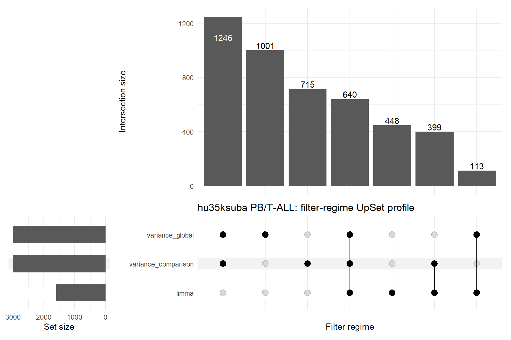
| Metric | Value |
|---|---|
| Filter regimes | 3 |
| Union probes | 4562 |
| Shared by all 3 | 640 |
| Shared fraction | 14.0% |
| limma probes | 1600 |
| Variance comparison probes | 3000 |
| Variance global probes | 3000 |
| limma-only | 448 |
| Variance comparison-only | 715 |
| Variance global-only | 1001 |
| Median Jaccard | 29.2% |
| Feature-space stability class | feature-space perturbation-sensitive |
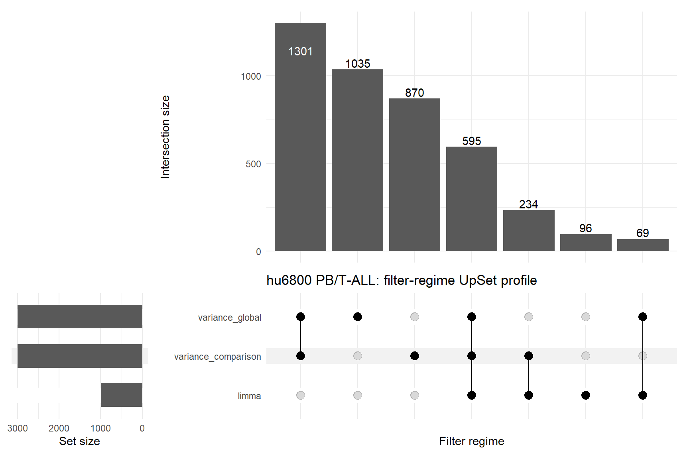
| Metric | Value |
|---|---|
| Filter regimes | 3 |
| Union probes | 4200 |
| Shared by all 3 | 595 |
| Shared fraction | 14.2% |
| limma probes | 994 |
| Variance comparison probes | 3000 |
| Variance global probes | 3000 |
| limma-only | 96 |
| Variance comparison-only | 870 |
| Variance global-only | 1035 |
| Median Jaccard | 26.2% |
| Feature-space stability class | feature-space perturbation-sensitive |
20.0.2 PB/T-ALL: Structural Grammar
This tab converts the structure-specific warehouse record into a compact interpretive grammar for the selected comparison. Biological annotations remain as functional overlays on the structural state rather than causal pathway assignments.
20.0.2.1 Archetypal state
The system occupies an entropy-dominant redistribution with reduced dimensional complexity perturbational state.
Modal Quadrant: QII
Quadrant Stability Fraction: 1.000
Archetype Label: Stable QII
Archetype Stability: Cross chip cross filter stable
Structural Confidence: Moderate
20.0.2.2 Structural interpretation
PB/T-ALL: The system occupies an entropy-dominant redistribution with reduced dimensional complexity perturbational state.
The structural pattern combines the following reader-level calls:
- Tumor manifold contracts relative to the normal reference state.
- Expression geometry becomes more constrained or elongated.
- Spectral mass shifts away from dominant excess components.
- Variance is spread across more spectral components.
20.0.2.3 Structural geometry
Tumor manifold contracts relative to the normal reference state.
Effective-Rank Δ: -0.113
Expression geometry becomes more constrained or elongated.
Kappa Δ: 28.593
Spectral mass shifts away from dominant excess components.
MP Excess Spectral Mass Δ: -153.823
Variance is spread across more spectral components.
MP Participation-Ratio Δ: 2.689
20.0.2.4 Latent geometry
Latent-space geometry was unavailable for this comparison.
20.0.2.5 Biological structural calls
| biological_structural_call | n_terms |
|---|---|
| Concordant compression | 99 |
| Concordant expansion | 2 |
20.0.2.6 Dominant GO semantic blocks
| semantic_block_name | n_terms | n_sig_complexity | n_sig_entropy_spectral | total_sig |
|---|---|---|---|---|
| protein binding | 179 | 12 | 59 | 71 |
| enzyme binding | 76 | 7 | 26 | 33 |
| molecular_function | 87 | 5 | 26 | 31 |
| biological_process | 89 | 6 | 24 | 30 |
| positive regulation of cytokine production | 59 | 1 | 29 | 30 |
| RNA binding | 58 | 5 | 16 | 21 |
| cytokine-mediated signaling pathway | 38 | 2 | 19 | 21 |
| positive regulation of intracellular signal transduction | 45 | 5 | 14 | 19 |
20.0.2.7 Top GO annotation examples
| mode | term | semantic_block | structural_call | joint_rank |
|---|---|---|---|---|
| GO_BP | MAPK cascade | intracellular signal transduction | Concordant compression | 600.000 |
| GO_BP | antimicrobial humoral immune response mediated by antimicrobial peptide | defense response to symbiont | Concordant compression | 302.000 |
| GO_MF | protein kinase A regulatory subunit binding | protein binding | Concordant compression | 302.000 |
| GO_BP | granzyme-mediated programmed cell death signaling pathway | programmed cell death | Concordant compression | 302.000 |
| GO_BP | negative regulation of inflammatory response | negative regulation of response to external stimulus | Concordant compression | 302.000 |
| GO_MF | phosphatidylinositol-4,5-bisphosphate binding | lipid binding | Concordant compression | 302.000 |
| GO_BP | regulation of TOR signaling | regulation of intracellular signal transduction | Concordant compression | 302.000 |
| GO_BP | negative regulation of vascular associated smooth muscle cell proliferation | regulation of cell population proliferation | Concordant compression | 302.000 |
| GO_BP | positive regulation of leukocyte adhesion to vascular endothelial cell | positive regulation of cell-cell adhesion | Concordant compression | 302.000 |
| GO_BP | positive regulation of JNK cascade | positive regulation of intracellular signal transduction | Concordant compression | 301.699 |
| GO_BP | positive regulation of dendritic spine morphogenesis | positive regulation of cell development | Concordant compression | 301.699 |
| GO_MF | transcription corepressor binding | transcription factor binding | Concordant compression | 301.699 |
20.0.2.8 KEGG program overlay
| term | structural_call | joint_rank |
|---|---|---|
| Amoebiasis | Concordant compression | 302.000 |
| Hepatitis C | Concordant compression | 3.523 |
| Phagosome | Concordant compression | 3.398 |
| T cell receptor signaling pathway | Concordant compression | 3.398 |
| JAK-STAT signaling pathway | Concordant compression | 3.398 |
| Osteoclast differentiation | Concordant compression | 3.097 |
20.0.2.9 Hallmark / MSigDB program overlay
No warehouse rows available for this comparison.
20.0.2.10 Interpretive caution
These annotations identify functional systems that co-occur with the structural state. They should be read as structural-functional annotation, not as causal pathway assignment.
20.0.3 PB/T-ALL: Structural Phenotype
This section summarizes the integrated structural phenotype across platform and feature-projection contexts. The first table is oriented as a descriptor-by-context matrix so that projection-sensitive structural shifts can be read horizontally across platform/projection runs.
20.0.3.1 Integrated structural phenotype
| Descriptor | hu35ksuba limma |
hu35ksuba var-comp |
hu35ksuba var-global |
hu6800 limma |
hu6800 var-comp |
hu6800 var-global |
|---|---|---|---|---|---|---|
| Complexity: Δ Effective Rank | -0.070 | -0.010 | -0.050 | -0.240 | -0.160 | -0.150 |
| Complexity: Δ κ | 47.410 | 29.620 | 26.140 | 30.390 | 19.820 | 18.180 |
| Entropy: Δ Spectral Entropy | -0.068 | -0.005 | -0.048 | -0.253 | -0.154 | -0.147 |
| Entropy: Δ Shannon Entropy | 1.005 | 1.005 | 1.004 | 0.846 | 0.849 | 0.849 |
| MP: Δ Spectral Entropy | 0.852 | 0.876 | 0.862 | 0.696 | 0.575 | 0.586 |
| MP: Δ Participation Ratio | 3.805 | 3.292 | 3.269 | 2.643 | 1.478 | 1.644 |
20.0.3.2 Metric-level summary
| engine | Metric | n_runs | mean_value | median_value | n_tumor_greater | n_tumor_lower |
|---|---|---|---|---|---|---|
| complexity | Composite Kappa | 6 | 74.297 | 52.925 | 6 | 0 |
| complexity | Effrank | 6 | -0.113 | -0.110 | 0 | 6 |
| complexity | Kappa | 6 | 28.593 | 27.880 | 6 | 0 |
| complexity | Sparsity | 6 | 0.000 | 0.000 | 0 | 0 |
| entropy | Shannon | 6 | 0.926 | 0.926 | 6 | 0 |
| entropy | Spectral | 6 | -0.112 | -0.108 | 0 | 6 |
| mp_spectral | Excess Spectral Mass | 6 | -153.823 | -109.514 | 0 | 6 |
| mp_spectral | Largest Eigenvalue Fraction | 6 | -0.180 | -0.211 | 0 | 6 |
| mp_spectral | Participation Ratio | 6 | 2.689 | 2.956 | 6 | 0 |
| mp_spectral | Spectral Entropy | 6 | 0.741 | 0.774 | 6 | 0 |
20.0.4 Complexity Engine
The complexity engine is reported using all probes retained after the active feature-projection filter. The omitted gene_set_mode field is therefore implicitly FULL for this tab and is not shown as a separate table column.
20.0.4.1 Complexity descriptor matrix
| Metric | hu35ksuba limma |
hu35ksuba var-comp |
hu35ksuba var-global |
hu6800 limma |
hu6800 var-comp |
hu6800 var-global |
|---|---|---|---|---|---|---|
| Shared Probes | 1600.000 | 3000.000 | 3000.000 | 994.000 | 3000.000 | 3000.000 |
| Normal Samples | 5.000 | 5.000 | 5.000 | 5.000 | 5.000 | 5.000 |
| Tumor Samples | 10.000 | 10.000 | 10.000 | 9.000 | 9.000 | 9.000 |
| κ Normal | 86.360 | 80.050 | 82.190 | 86.490 | 80.380 | 81.790 |
| κ Tumor | 133.770 | 109.670 | 108.330 | 116.880 | 100.200 | 99.970 |
| Δ κ | 47.410 | 29.620 | 26.140 | 30.390 | 19.820 | 18.180 |
| Effective Rank Normal | 1.410 | 1.630 | 1.590 | 1.480 | 1.590 | 1.540 |
| Effective Rank Tumor | 1.340 | 1.620 | 1.540 | 1.240 | 1.430 | 1.390 |
| Δ Effective Rank | -0.070 | -0.010 | -0.050 | -0.240 | -0.160 | -0.150 |
| Δ Sparsity | 0.000 | 0.000 | 0.000 | 0.000 | 0.000 | 0.000 |
| Direction | gained | gained | gained | gained | gained | gained |
| Permutation p | 0.720 | 0.900 | 0.910 | 0.810 | 0.920 | 0.930 |
| Permutation FDR | 0.990 | 1.000 | 1.000 | 0.880 | 0.997 | 1.000 |
| Status | ok | ok | ok | ok | ok | ok |
20.0.5 Entropy Engine
The entropy engine is reported using all probes retained after the active feature-projection filter. The omitted gene_set_mode field is therefore implicitly FULL for this tab and is not shown as a separate table column.
20.0.5.1 Entropy descriptor matrix
| Metric | hu35ksuba limma |
hu35ksuba var-comp |
hu35ksuba var-global |
hu6800 limma |
hu6800 var-comp |
hu6800 var-global |
|---|---|---|---|---|---|---|
| Covariance Space | sample | sample | sample | sample | sample | sample |
| Shared Probes | 1600 | 3000 | 3000 | 994 | 3000 | 3000 |
| Shannon Entropy Normal | 12.937 | 13.847 | 13.847 | 12.244 | 13.843 | 13.843 |
| Shannon Entropy Tumor | 13.942 | 14.852 | 14.851 | 13.09 | 14.692 | 14.692 |
| Δ Shannon Entropy | 1.005 | 1.005 | 1.004 | 0.846 | 0.849 | 0.849 |
| Shannon Direction | strongly chaotic | strongly chaotic | strongly chaotic | strongly chaotic | strongly chaotic | strongly chaotic |
| Spectral Entropy Normal | 0.493 | 0.701 | 0.669 | 0.566 | 0.666 | 0.623 |
| Spectral Entropy Tumor | 0.425 | 0.696 | 0.621 | 0.313 | 0.512 | 0.476 |
| Δ Spectral Entropy | -0.068 | -0.005 | -0.048 | -0.253 | -0.154 | -0.147 |
| Spectral Direction | neutral | neutral | neutral | mildly anti-chaotic | mildly anti-chaotic | mildly anti-chaotic |
| Spectral Permutation p | 0.66 | 0.97 | 0.76 | 0.35 | 0.49 | 0.48 |
| Spectral Permutation FDR | 0.78 | 0.99 | 0.877 | 0.617 | 0.603 | 0.624 |
| Status | ok | ok | ok | ok | ok | ok |
20.0.6 MP Spectral Engine
The MP spectral engine is reported using all probes retained after the active feature-projection filter. The omitted gene_set_mode field is therefore implicitly FULL for this tab and is not shown as a separate table column.
20.0.6.1 MP spectral descriptor matrix
| Metric | hu35ksuba limma |
hu35ksuba var-comp |
hu35ksuba var-global |
hu6800 limma |
hu6800 var-comp |
hu6800 var-global |
|---|---|---|---|---|---|---|
| Normal Samples | 5 | 5 | 5 | 5 | 5 | 5 |
| Tumor Samples | 10 | 10 | 10 | 9 | 9 | 9 |
| Normal Features | 1600 | 3000 | 3000 | 994 | 3000 | 3000 |
| Tumor Features | 1600 | 3000 | 3000 | 994 | 3000 | 3000 |
| Δ Largest Eigenvalue Fraction | -0.253 | -0.264 | -0.247 | -0.175 | -0.068 | -0.071 |
| Δ Spikes | 1 | 2 | 1 | 0 | 0 | 0 |
| Δ Spike Fraction | 0.001 | 0.001 | 0 | 0 | 0 | 0 |
| Δ Excess Spectral Mass | -147.298 | -306.306 | -302.14 | -71.73 | -43.148 | -52.318 |
| Δ Spectral Entropy | 0.852 | 0.876 | 0.862 | 0.696 | 0.575 | 0.586 |
| Δ Participation Ratio | 3.805 | 3.292 | 3.269 | 2.643 | 1.478 | 1.644 |
| Paired Status | ok | ok | ok | ok | ok | ok |
No warehouse rows available for this comparison.
This section reports the quadrant-level perturbational state of the selected normal/tumor comparison. The first map places the comparison-level centroid in the broader atlas of cancer comparisons. The second map shows the six platform × feature-projection assignments that determine the comparison’s quadrant stability.
20.0.7 Global comparison position map
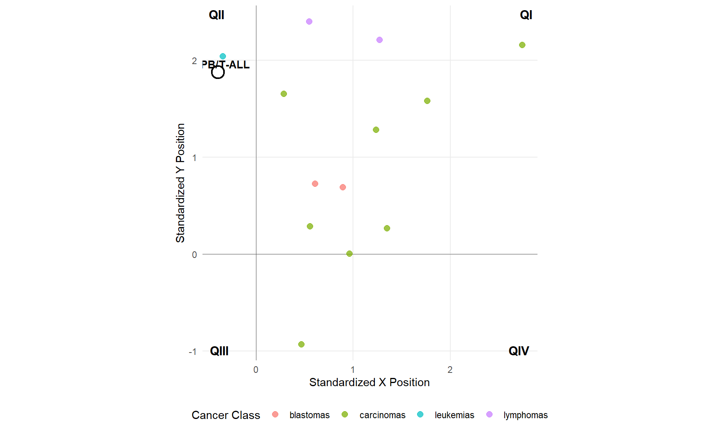
20.0.8 Assignment stability map
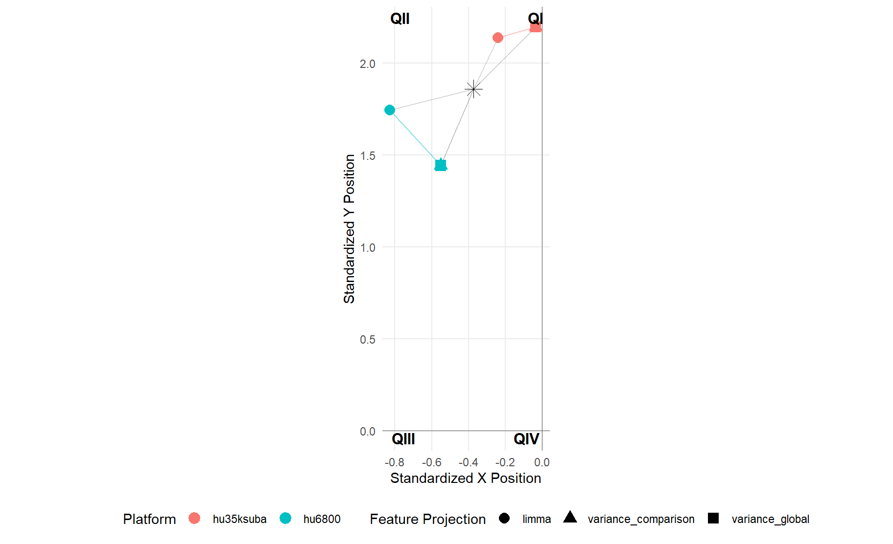
| Platform | Feature Projection | Perturbational State | Structural Interpretation | Assignment Confidence | X Descriptor | Y Descriptor | Std. X Position | Std. Y Position | Boundary Margin | Directional Agreement |
|---|---|---|---|---|---|---|---|---|---|---|
| hu35ksuba | limma | QII | entropy-dominant disorganization with reduced complexity | low | complexity__effrank_delta | mp__spectral_entropy_delta | -0.245 | 2.160 | 0.245 | 66.7% |
| hu35ksuba | variance_comparison | QII | entropy-dominant disorganization with reduced complexity | low | complexity__effrank_delta | mp__spectral_entropy_delta | -0.035 | 2.219 | 0.035 | 66.7% |
| hu35ksuba | variance_global | QII | entropy-dominant disorganization with reduced complexity | low | complexity__effrank_delta | mp__spectral_entropy_delta | -0.175 | 2.183 | 0.175 | 66.7% |
| hu6800 | limma | QII | entropy-dominant disorganization with reduced complexity | moderate | complexity__effrank_delta | mp__spectral_entropy_delta | -0.840 | 1.764 | 0.840 | 66.7% |
| hu6800 | variance_comparison | QII | entropy-dominant disorganization with reduced complexity | moderate | complexity__effrank_delta | mp__spectral_entropy_delta | -0.560 | 1.458 | 0.560 | 66.7% |
| hu6800 | variance_global | QII | entropy-dominant disorganization with reduced complexity | moderate | complexity__effrank_delta | mp__spectral_entropy_delta | -0.525 | 1.486 | 0.525 | 66.7% |
| Comparison | Assignments | Platforms | Feature Projections | Observed Quadrants | Modal Perturbational State | Modal Stability | Fully Stable | High-Confidence Share | Median Boundary Margin | Stability Class |
|---|---|---|---|---|---|---|---|---|---|---|
| PB/T-ALL | 6 | 2 | 3 | 1 | QII | 100.0% | Yes | 0.0% | 0.385 | cross-chip/cross-filter stable |
Reading guide. QI, QII, QIII, and QIV denote perturbational states in the standardized structural coordinate system. Std. X and Std. Y are report-level structural coordinates, not sample-level PCA axes. Boundary margin is the standardized distance from the nearest quadrant boundary; larger values indicate assignments farther from sign-transition boundaries. Directional agreement is the fraction of contributing structural engines supporting the same directional sign pattern. Modal stability is the fraction of platform/filter assignments occupying the dominant perturbational state.
20.0.9 Cross-engine directional concordance
| Metric | hu35ksuba limma |
hu35ksuba var-comp |
hu35ksuba var-global |
hu6800 limma |
hu6800 var-comp |
hu6800 var-global |
|---|---|---|---|---|---|---|
| Complexity Direction | negative | negative | negative | negative | negative | negative |
| Entropy Direction | negative | negative | negative | negative | negative | negative |
| MP Direction | positive | positive | positive | positive | positive | positive |
| Latent Direction | NA | NA | NA | NA | NA | NA |
| Metrics Available | 3 | 3 | 3 | 3 | 3 | 3 |
| Positive Metrics | 1 | 1 | 1 | 1 | 1 | 1 |
| Negative Metrics | 2 | 2 | 2 | 2 | 2 | 2 |
| Majority Direction | negative | negative | negative | negative | negative | negative |
| Agreement Fraction | 0.666666666666667 | 0.666666666666667 | 0.666666666666667 | 0.666666666666667 | 0.666666666666667 | 0.666666666666667 |
20.0.10 Cross-engine discordance archetypes
| Metric | hu35ksuba limma |
hu35ksuba var-comp |
hu35ksuba var-global |
hu6800 limma |
hu6800 var-comp |
hu6800 var-global |
|---|---|---|---|---|---|---|
| Complexity Direction | negative | negative | negative | negative | negative | negative |
| Entropy Direction | negative | negative | negative | negative | negative | negative |
| MP Direction | positive | positive | positive | positive | positive | positive |
| Latent Direction | NA | NA | NA | NA | NA | NA |
| Modal Direction | negative | negative | negative | negative | negative | negative |
| Agreement Fraction | 0.666666666666667 | 0.666666666666667 | 0.666666666666667 | 0.666666666666667 | 0.666666666666667 | 0.666666666666667 |
| Discordance Class | major_discordance | major_discordance | major_discordance | major_discordance | major_discordance | major_discordance |
| Engine Coverage | three_engine_core_latent_unavailable | three_engine_core_latent_unavailable | three_engine_core_latent_unavailable | three_engine_core_latent_unavailable | three_engine_core_latent_unavailable | three_engine_core_latent_unavailable |
| Discordance Archetype | mp_divergence_from_classical_spectrum_latent_unavailable | mp_divergence_from_classical_spectrum_latent_unavailable | mp_divergence_from_classical_spectrum_latent_unavailable | mp_divergence_from_classical_spectrum_latent_unavailable | mp_divergence_from_classical_spectrum_latent_unavailable | mp_divergence_from_classical_spectrum_latent_unavailable |
| comparison | n_assignments | modal_quadrant | modal_quadrant_fraction | mean_quadrant_margin | median_quadrant_margin | min_quadrant_margin | chip_instability_fraction | filter_instability_fraction | x_sign_flips | y_sign_flips | both_axis_flips | total_boundary_crossings | robustness_class | structural_confidence |
|---|---|---|---|---|---|---|---|---|---|---|---|---|---|---|
| PB/T-ALL | 6 | QI | 1 | 0.718 | 0.667 | 0.523 | 0 | 0 | 0 | 0 | 0 | 0 | stable_boundary_archetype | moderate |
| Metric | hu35ksuba limma |
hu35ksuba var-comp |
hu35ksuba var-global |
hu6800 limma |
hu6800 var-comp |
hu6800 var-global |
|---|---|---|---|---|---|---|
| Robustness Quadrant | QI | QI | QI | QI | QI | QI |
| X-Axis Robustness | 0.887 | 0.895 | 0.895 | 0.523 | 0.661 | 0.661 |
| Y-Axis Robustness | 0.673 | 0.922 | 0.922 | 0.762 | 0.764 | 0.764 |
| Distance to X-Axis | 0.673 | 0.922 | 0.922 | 0.762 | 0.764 | 0.764 |
| Distance to Y-Axis | 0.887 | 0.895 | 0.895 | 0.523 | 0.661 | 0.661 |
| Distance to Origin | 1.114 | 1.285 | 1.285 | 0.924 | 1.010 | 1.010 |
| Quadrant Margin | 0.673 | 0.895 | 0.895 | 0.523 | 0.661 | 0.661 |
| X Sign | + | + | + | + | + | + |
| Y Sign | + | + | + | + | + | + |
20.0.11 PB/T-ALL: GO Semantic Metadata
The GO semantic layer summarizes functional annotation landscapes projected onto transcriptomic structural geometry. These tables group GO BP and GO MF terms into semantic blocks; they should be read as annotation topology, not as direct mechanistic inference.
20.0.11.1 GO semantic coverage
| gene_set_mode | n_context_rows | n_semantic_blocks | n_terms | n_sig_complexity | n_sig_entropy_spectral | median_shared_probes |
|---|---|---|---|---|---|---|
| GO_BP | 2561 | 334 | 3664 | 201 | 1027 | 8.000 |
| GO_MF | 978 | 49 | 1364 | 74 | 386 | 10.000 |
20.0.11.2 GO semantic panels
Semantic context summary
| n_semantic_blocks | n_terms | n_sig_complexity | n_sig_entropy_spectral | median_shared_probes |
|---|---|---|---|---|
| 220 | 569 | 26 | 233 | 7.267 |
20.0.11.2.1 Dominant GO semantic blocks
| semantic_block_name | n_terms | n_sig_complexity | n_sig_entropy_spectral | total_sig | mean_shared_probes |
|---|---|---|---|---|---|
| translation | 5 | 1 | 2 | 3 | 12.000 |
| intracellular signal transduction | 4 | 1 | 2 | 3 | 20.000 |
| cellular response to stress | 3 | 1 | 2 | 3 | 11.333 |
| intracellular signal transduction | 3 | 1 | 2 | 3 | 10.667 |
| lipid metabolic process | 2 | 1 | 2 | 3 | 32.500 |
| positive regulation of signal transduction | 2 | 1 | 2 | 3 | 9.500 |
| protein maturation | 2 | 1 | 2 | 3 | 8.500 |
| cell surface receptor signaling pathway | 6 | 0 | 3 | 3 | 9.167 |
| positive regulation of cytokine production | 5 | 0 | 3 | 3 | 8.400 |
| protein modification by small protein conjugation or removal | 5 | 0 | 3 | 3 | 21.800 |
| positive regulation of RNA metabolic process | 4 | 0 | 3 | 3 | 50.750 |
| proteolysis | 4 | 0 | 3 | 3 | 13.750 |
| cytokine-mediated signaling pathway | 3 | 0 | 3 | 3 | 6.333 |
| mRNA catabolic process | 3 | 1 | 1 | 2 | 6.000 |
| defense response | 2 | 1 | 1 | 2 | 7.000 |
| positive regulation of cell population proliferation | 2 | 1 | 1 | 2 | 6.500 |
| endomembrane system organization | 1 | 1 | 1 | 2 | 13.000 |
| positive regulation of cell-cell adhesion | 1 | 1 | 1 | 2 | 9.000 |
| positive regulation of cell-cell adhesion | 1 | 1 | 1 | 2 | 9.000 |
| negative regulation of intracellular signal transduction | 4 | 0 | 2 | 2 | 9.250 |
Semantic context summary
| n_semantic_blocks | n_terms | n_sig_complexity | n_sig_entropy_spectral | median_shared_probes |
|---|---|---|---|---|
| 41 | 215 | 11 | 104 | 10.000 |
20.0.11.2.2 Dominant GO semantic blocks
| semantic_block_name | n_terms | n_sig_complexity | n_sig_entropy_spectral | total_sig | mean_shared_probes |
|---|---|---|---|---|---|
| cation binding | 2 | 1 | 2 | 3 | 99.500 |
| cation binding | 3 | 0 | 3 | 3 | 131.000 |
| enzyme binding | 1 | 1 | 1 | 2 | 5.000 |
| enzyme regulator activity | 1 | 1 | 1 | 2 | 9.000 |
| hydrolase activity | 1 | 1 | 1 | 2 | 6.000 |
| oxidoreductase activity | 1 | 1 | 1 | 2 | 34.000 |
| protein binding | 1 | 1 | 1 | 2 | 9.000 |
| protein-containing complex binding | 1 | 1 | 1 | 2 | 11.000 |
| transmembrane transporter activity | 1 | 1 | 1 | 2 | 20.000 |
| peptidase activity | 4 | 0 | 2 | 2 | 15.500 |
| phosphoric ester hydrolase activity | 3 | 0 | 2 | 2 | 13.000 |
| enzyme binding | 2 | 0 | 2 | 2 | 28.500 |
| hydrolase activity | 2 | 0 | 2 | 2 | 35.500 |
| molecular_function | 2 | 0 | 2 | 2 | 58.500 |
| molecular_function | 2 | 0 | 2 | 2 | 7.000 |
| protein binding | 2 | 0 | 2 | 2 | 31.000 |
| protein binding | 2 | 0 | 2 | 2 | 608.000 |
| protein binding | 2 | 0 | 2 | 2 | 103.500 |
| catalytic activity | 1 | 1 | 0 | 1 | 5.000 |
| enzyme binding | 1 | 1 | 0 | 1 | 10.000 |
Semantic context summary
| n_semantic_blocks | n_terms | n_sig_complexity | n_sig_entropy_spectral | median_shared_probes |
|---|---|---|---|---|
| 286 | 1053 | 48 | 187 | 8.000 |
20.0.11.2.3 Dominant GO semantic blocks
| semantic_block_name | n_terms | n_sig_complexity | n_sig_entropy_spectral | total_sig | mean_shared_probes |
|---|---|---|---|---|---|
| negative regulation of intracellular signal transduction | 7 | 2 | 3 | 5 | 12.286 |
| regulation of intracellular signal transduction | 6 | 1 | 3 | 4 | 9.833 |
| G protein-coupled receptor signaling pathway | 5 | 1 | 2 | 3 | 14.000 |
| biological process involved in interspecies interaction between organisms | 2 | 1 | 2 | 3 | 6.500 |
| cellular response to stress | 5 | 0 | 3 | 3 | 12.000 |
| regulation of anatomical structure morphogenesis | 4 | 0 | 3 | 3 | 14.250 |
| cytokine-mediated signaling pathway | 3 | 0 | 3 | 3 | 7.000 |
| positive regulation of cell development | 2 | 1 | 1 | 2 | 6.000 |
| positive regulation of cell-cell adhesion | 2 | 1 | 1 | 2 | 8.500 |
| positive regulation of intracellular signal transduction | 2 | 1 | 1 | 2 | 20.500 |
| regulation of apoptotic process | 2 | 1 | 1 | 2 | 27.500 |
| regulation of protein modification process | 2 | 1 | 1 | 2 | 8.000 |
| positive regulation of cell-cell adhesion | 1 | 1 | 1 | 2 | 7.000 |
| positive regulation of cell-cell adhesion | 1 | 1 | 1 | 2 | 13.000 |
| regulation of biological quality | 1 | 1 | 1 | 2 | 7.000 |
| regulation of catalytic activity | 1 | 1 | 1 | 2 | 5.000 |
| regulation of protein localization | 1 | 1 | 1 | 2 | 9.000 |
| response to abiotic stimulus | 1 | 1 | 1 | 2 | 18.000 |
| response to chemical | 1 | 1 | 1 | 2 | 10.000 |
| positive regulation of cytokine production | 5 | 0 | 2 | 2 | 9.800 |
Semantic context summary
| n_semantic_blocks | n_terms | n_sig_complexity | n_sig_entropy_spectral | median_shared_probes |
|---|---|---|---|---|
| 44 | 396 | 17 | 57 | 10.000 |
20.0.11.2.4 Dominant GO semantic blocks
| semantic_block_name | n_terms | n_sig_complexity | n_sig_entropy_spectral | total_sig | mean_shared_probes |
|---|---|---|---|---|---|
| protein binding | 2 | 1 | 2 | 3 | 5.500 |
| RNA binding | 2 | 1 | 1 | 2 | 5.500 |
| enzyme binding | 1 | 1 | 1 | 2 | 5.000 |
| molecular function regulator activity | 4 | 0 | 2 | 2 | 10.000 |
| anion binding | 2 | 0 | 2 | 2 | 9.500 |
| catalytic activity | 2 | 0 | 2 | 2 | 32.500 |
| hydrolase activity | 2 | 1 | 0 | 1 | 8.000 |
| carbohydrate derivative binding | 1 | 1 | 0 | 1 | 10.000 |
| cation binding | 1 | 1 | 0 | 1 | 5.000 |
| enzyme binding | 1 | 1 | 0 | 1 | 5.000 |
| hydrolase activity, acting on ester bonds | 1 | 1 | 0 | 1 | 10.000 |
| molecular_function | 1 | 1 | 0 | 1 | 30.000 |
| oxidoreductase activity | 1 | 1 | 0 | 1 | 8.000 |
| protein binding | 1 | 1 | 0 | 1 | 8.000 |
| protein binding | 1 | 1 | 0 | 1 | 28.000 |
| protein-containing complex binding | 1 | 1 | 0 | 1 | 15.000 |
| protein-macromolecule adaptor activity | 1 | 1 | 0 | 1 | 6.000 |
| transferase activity, transferring phosphorus-containing groups | 1 | 1 | 0 | 1 | 5.000 |
| transmembrane signaling receptor activity | 1 | 1 | 0 | 1 | 14.000 |
| transmembrane transporter activity | 1 | 1 | 0 | 1 | 5.000 |
Semantic context summary
| n_semantic_blocks | n_terms | n_sig_complexity | n_sig_entropy_spectral | median_shared_probes |
|---|---|---|---|---|
| 212 | 534 | 40 | 268 | 8.000 |
20.0.11.2.5 Dominant GO semantic blocks
| semantic_block_name | n_terms | n_sig_complexity | n_sig_entropy_spectral | total_sig | mean_shared_probes |
|---|---|---|---|---|---|
| positive regulation of cytokine production | 10 | 0 | 7 | 7 | 8.800 |
| G protein-coupled receptor signaling pathway | 5 | 0 | 4 | 4 | 14.000 |
| intracellular signal transduction | 4 | 1 | 2 | 3 | 18.000 |
| positive regulation of intracellular signal transduction | 3 | 1 | 2 | 3 | 15.667 |
| protein phosphorylation | 3 | 1 | 2 | 3 | 14.667 |
| protein-containing complex assembly | 3 | 1 | 2 | 3 | 8.333 |
| biological_process | 2 | 1 | 2 | 3 | 5.500 |
| cell adhesion | 2 | 1 | 2 | 3 | 31.500 |
| regulation of body fluid levels | 2 | 1 | 2 | 3 | 7.500 |
| response to cytokine | 2 | 1 | 2 | 3 | 7.500 |
| positive regulation of RNA metabolic process | 4 | 0 | 3 | 3 | 44.000 |
| blood vessel morphogenesis | 3 | 0 | 3 | 3 | 11.333 |
| cell surface receptor signaling pathway | 3 | 0 | 3 | 3 | 23.333 |
| negative regulation of nucleobase-containing compound metabolic process | 3 | 0 | 3 | 3 | 42.667 |
| response to other organism | 3 | 0 | 3 | 3 | 13.000 |
| mRNA metabolic process | 2 | 2 | 0 | 2 | 14.000 |
| actin cytoskeleton organization | 2 | 1 | 1 | 2 | 11.500 |
| cell cycle phase transition | 2 | 1 | 1 | 2 | 6.500 |
| cell surface receptor protein tyrosine kinase signaling pathway | 2 | 1 | 1 | 2 | 6.500 |
| cellular response to stress | 2 | 1 | 1 | 2 | 6.000 |
Semantic context summary
| n_semantic_blocks | n_terms | n_sig_complexity | n_sig_entropy_spectral | median_shared_probes |
|---|---|---|---|---|
| 38 | 229 | 24 | 124 | 9.000 |
20.0.11.2.6 Dominant GO semantic blocks
| semantic_block_name | n_terms | n_sig_complexity | n_sig_entropy_spectral | total_sig | mean_shared_probes |
|---|---|---|---|---|---|
| protein binding | 2 | 2 | 2 | 4 | 6.500 |
| DNA binding | 5 | 1 | 3 | 4 | 14.000 |
| enzyme binding | 4 | 1 | 3 | 4 | 22.000 |
| binding | 2 | 2 | 1 | 3 | 37.000 |
| heterocyclic compound binding | 3 | 1 | 2 | 3 | 53.667 |
| transcription factor binding | 3 | 1 | 2 | 3 | 11.333 |
| protein binding | 2 | 1 | 2 | 3 | 27.000 |
| protein binding | 2 | 1 | 2 | 3 | 23.500 |
| molecular function regulator activity | 5 | 0 | 3 | 3 | 10.000 |
| RNA binding | 3 | 0 | 3 | 3 | 63.000 |
| cation binding | 3 | 0 | 3 | 3 | 74.667 |
| protein kinase activity | 3 | 1 | 1 | 2 | 22.000 |
| lipid binding | 2 | 1 | 1 | 2 | 5.000 |
| acyltransferase activity | 1 | 1 | 1 | 2 | 8.000 |
| molecular adaptor activity | 1 | 1 | 1 | 2 | 20.000 |
| oxidoreductase activity | 1 | 1 | 1 | 2 | 5.000 |
| protein binding | 1 | 1 | 1 | 2 | 6.000 |
| signaling receptor binding | 1 | 1 | 1 | 2 | 46.000 |
| DNA binding | 3 | 0 | 2 | 2 | 59.333 |
| phosphoric ester hydrolase activity | 3 | 0 | 2 | 2 | 6.667 |
Semantic context summary
| n_semantic_blocks | n_terms | n_sig_complexity | n_sig_entropy_spectral | median_shared_probes |
|---|---|---|---|---|
| 320 | 1508 | 87 | 339 | 9.000 |
20.0.11.2.7 Dominant GO semantic blocks
| semantic_block_name | n_terms | n_sig_complexity | n_sig_entropy_spectral | total_sig | mean_shared_probes |
|---|---|---|---|---|---|
| positive regulation of cytokine production | 12 | 0 | 5 | 5 | 17.000 |
| cytokine-mediated signaling pathway | 10 | 0 | 5 | 5 | 12.000 |
| cell surface receptor protein tyrosine kinase signaling pathway | 5 | 2 | 2 | 4 | 13.600 |
| response to chemical | 4 | 1 | 3 | 4 | 7.250 |
| chemotaxis | 2 | 2 | 1 | 3 | 8.000 |
| central nervous system development | 5 | 1 | 2 | 3 | 12.400 |
| modulation of chemical synaptic transmission | 5 | 1 | 2 | 3 | 11.400 |
| positive regulation of cell migration | 4 | 1 | 2 | 3 | 12.750 |
| biological_process | 3 | 1 | 2 | 3 | 7.667 |
| lymphocyte mediated immunity | 2 | 1 | 2 | 3 | 6.500 |
| response to oxygen-containing compound | 2 | 1 | 2 | 3 | 11.500 |
| cell surface receptor signaling pathway | 6 | 0 | 3 | 3 | 30.000 |
| regulation of intracellular signal transduction | 6 | 0 | 3 | 3 | 7.833 |
| protein catabolic process | 5 | 0 | 3 | 3 | 31.600 |
| cellular response to cytokine stimulus | 4 | 0 | 3 | 3 | 14.250 |
| actin cytoskeleton organization | 3 | 0 | 3 | 3 | 16.667 |
| blood vessel morphogenesis | 3 | 0 | 3 | 3 | 25.333 |
| fatty acid metabolic process | 3 | 0 | 3 | 3 | 19.000 |
| regulation of vesicle-mediated transport | 3 | 0 | 3 | 3 | 8.000 |
| monoatomic cation homeostasis | 3 | 2 | 0 | 2 | 13.667 |
Semantic context summary
| n_semantic_blocks | n_terms | n_sig_complexity | n_sig_entropy_spectral | median_shared_probes |
|---|---|---|---|---|
| 48 | 524 | 22 | 101 | 10.000 |
20.0.11.2.8 Dominant GO semantic blocks
| semantic_block_name | n_terms | n_sig_complexity | n_sig_entropy_spectral | total_sig | mean_shared_probes |
|---|---|---|---|---|---|
| phosphoric ester hydrolase activity | 5 | 0 | 3 | 3 | 16.800 |
| cation binding | 3 | 0 | 3 | 3 | 255.333 |
| RNA binding | 2 | 2 | 0 | 2 | 10.000 |
| molecular_function | 2 | 1 | 1 | 2 | 14.000 |
| protein-containing complex binding | 2 | 1 | 1 | 2 | 68.000 |
| small molecule binding | 2 | 1 | 1 | 2 | 10.000 |
| catalytic activity | 1 | 1 | 1 | 2 | 36.000 |
| signaling receptor binding | 1 | 1 | 1 | 2 | 9.000 |
| molecular function regulator activity | 6 | 0 | 2 | 2 | 24.333 |
| enzyme binding | 5 | 0 | 2 | 2 | 41.600 |
| cytoskeletal protein binding | 4 | 0 | 2 | 2 | 8.500 |
| transcription factor binding | 4 | 0 | 2 | 2 | 20.500 |
| acyltransferase activity | 3 | 0 | 2 | 2 | 11.000 |
| small molecule binding | 3 | 0 | 2 | 2 | 13.667 |
| carbohydrate derivative binding | 2 | 0 | 2 | 2 | 52.000 |
| peptidase activity | 2 | 0 | 2 | 2 | 18.500 |
| protein binding | 2 | 0 | 2 | 2 | 69.500 |
| transmembrane signaling receptor activity | 2 | 0 | 2 | 2 | 8.500 |
| enzyme regulator activity | 6 | 1 | 0 | 1 | 14.667 |
| protein serine/threonine kinase activity | 5 | 1 | 0 | 1 | 26.400 |
This section embeds the biological structural-overlay module. Chips are treated as distinct observational systems, and filter regimes are treated as feature-space perturbations rather than pooled preprocessing settings.
20.0.12 PB/T-ALL: Biological Gene-Set Structural Report
This report is exploratory and downstream of the structural-inference framework. It summarizes GO, KEGG, and MSigDB/Hallmark gene-set results associated with a single normal–tumor comparison. Biological terms are interpreted as annotations of structurally characterized tumor states, not as the primary evidentiary basis of the framework.
20.0.12.1 Report coverage
| comparison | alpha | enabled_gene_set_modes | n_biological_rows | n_skipped_chip_mode_gene_sets |
|---|---|---|---|---|
| PB/T-ALL | 0.05 | GO_BP, GO_MF, KEGG, MSIGDB | 10556 | 15600 |
20.0.12.2 Context inventory
| comparison | chip | filter_regime | gene_set_mode | engine | n_terms | n_gene_sets | n_significant_complexity | n_significant_entropy_spectral | median_shared_probes |
|---|---|---|---|---|---|---|---|---|---|
| PB/T-ALL | hu35ksuba | limma | GO_BP | complexity | 569 | 569 | 26 | 0 | 7.0 |
| PB/T-ALL | hu35ksuba | limma | GO_BP | entropy | 569 | 569 | 0 | 233 | 7.0 |
| PB/T-ALL | hu35ksuba | limma | GO_MF | complexity | 215 | 215 | 11 | 0 | 9.0 |
| PB/T-ALL | hu35ksuba | limma | GO_MF | entropy | 215 | 215 | 0 | 104 | 9.0 |
| PB/T-ALL | hu35ksuba | limma | KEGG | complexity | 33 | 33 | 4 | 0 | 14.0 |
| PB/T-ALL | hu35ksuba | limma | KEGG | entropy | 33 | 33 | 0 | 15 | 14.0 |
| PB/T-ALL | hu35ksuba | limma | MSIGDB | complexity | 13 | 13 | 0 | 0 | 19.0 |
| PB/T-ALL | hu35ksuba | limma | MSIGDB | entropy | 13 | 13 | 0 | 7 | 19.0 |
| PB/T-ALL | hu35ksuba | variance_top3000 | GO_BP | complexity | 1053 | 1053 | 48 | 0 | 8.0 |
| PB/T-ALL | hu35ksuba | variance_top3000 | GO_BP | entropy | 1053 | 1053 | 0 | 187 | 8.0 |
| PB/T-ALL | hu35ksuba | variance_top3000 | GO_MF | complexity | 396 | 396 | 17 | 0 | 9.0 |
| PB/T-ALL | hu35ksuba | variance_top3000 | GO_MF | entropy | 396 | 396 | 0 | 57 | 9.0 |
| PB/T-ALL | hu35ksuba | variance_top3000 | KEGG | complexity | 56 | 56 | 2 | 0 | 20.5 |
| PB/T-ALL | hu35ksuba | variance_top3000 | KEGG | entropy | 56 | 56 | 0 | 6 | 20.5 |
| PB/T-ALL | hu35ksuba | variance_top3000 | MSIGDB | complexity | 13 | 13 | 1 | 0 | 50.0 |
| PB/T-ALL | hu35ksuba | variance_top3000 | MSIGDB | entropy | 13 | 13 | 0 | 4 | 50.0 |
| PB/T-ALL | hu6800 | limma | GO_BP | complexity | 534 | 534 | 40 | 0 | 8.0 |
| PB/T-ALL | hu6800 | limma | GO_BP | entropy | 534 | 534 | 0 | 268 | 8.0 |
| PB/T-ALL | hu6800 | limma | GO_MF | complexity | 229 | 229 | 24 | 0 | 9.0 |
| PB/T-ALL | hu6800 | limma | GO_MF | entropy | 229 | 229 | 0 | 124 | 9.0 |
| PB/T-ALL | hu6800 | limma | KEGG | complexity | 52 | 52 | 4 | 0 | 18.0 |
| PB/T-ALL | hu6800 | limma | KEGG | entropy | 52 | 52 | 0 | 29 | 18.0 |
| PB/T-ALL | hu6800 | limma | MSIGDB | complexity | 13 | 13 | 0 | 0 | 36.0 |
| PB/T-ALL | hu6800 | limma | MSIGDB | entropy | 13 | 13 | 0 | 11 | 36.0 |
| PB/T-ALL | hu6800 | variance_top3000 | GO_BP | complexity | 1508 | 1508 | 87 | 0 | 9.0 |
| PB/T-ALL | hu6800 | variance_top3000 | GO_BP | entropy | 1508 | 1508 | 0 | 339 | 9.0 |
| PB/T-ALL | hu6800 | variance_top3000 | GO_MF | complexity | 524 | 524 | 22 | 0 | 10.0 |
| PB/T-ALL | hu6800 | variance_top3000 | GO_MF | entropy | 524 | 524 | 0 | 101 | 10.0 |
| PB/T-ALL | hu6800 | variance_top3000 | KEGG | complexity | 57 | 57 | 3 | 0 | 49.0 |
| PB/T-ALL | hu6800 | variance_top3000 | KEGG | entropy | 57 | 57 | 0 | 18 | 49.0 |
| PB/T-ALL | hu6800 | variance_top3000 | MSIGDB | complexity | 13 | 13 | 0 | 0 | 89.0 |
| PB/T-ALL | hu6800 | variance_top3000 | MSIGDB | entropy | 13 | 13 | 0 | 9 | 89.0 |
20.0.12.3 Biological result panels
The panels below intentionally separate chips and filtering regimes. Chips are treated as distinct observational systems, and filter regimes are treated as feature-space perturbations rather than interchangeable preprocessing settings.
Context summary
| engine | n_rows | n_gene_sets | n_significant_complexity | n_significant_entropy_spectral | median_shared_probes |
|---|---|---|---|---|---|
| complexity | 569 | 569 | 26 | 0 | 7.000 |
| entropy | 569 | 569 | 0 | 233 | 7.000 |
20.0.12.3.1 Complexity signal plot
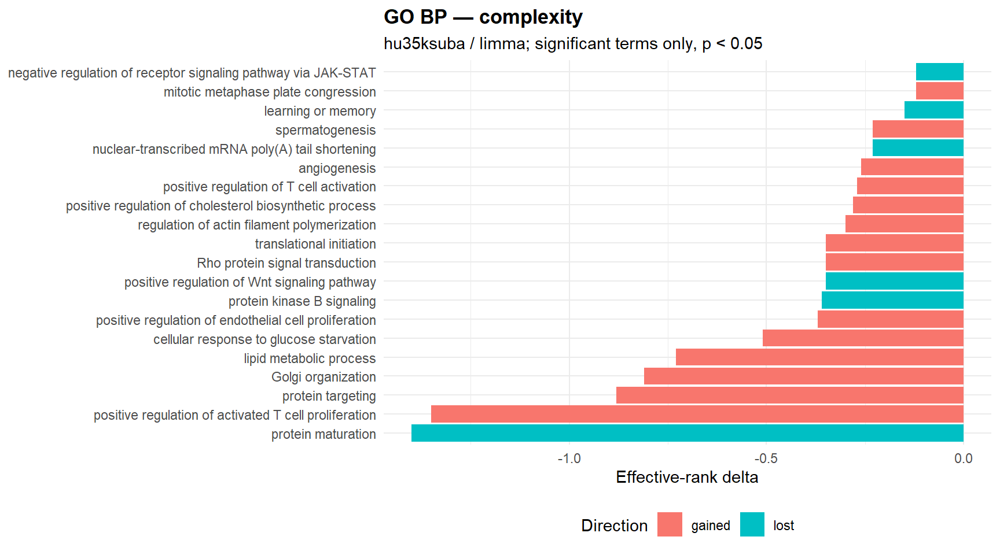
20.0.12.3.2 Entropy signal plot
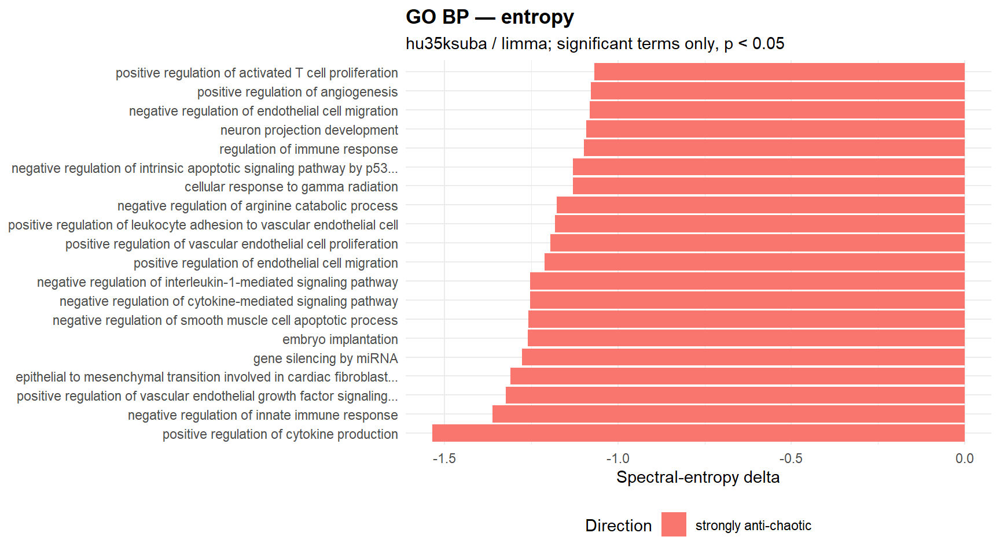
20.0.12.3.3 Significant complexity terms
| gene_set | semantic_block | n_shared_probes | effrank Δ | kappa Δ | direction | p_perm | status |
|---|---|---|---|---|---|---|---|
| positive regulation of endothelial cell proliferation | positive regulation of cell population proliferation | 5 | -0.370 | 550.440 | gained | <0.001 | ok |
| positive regulation of cholesterol biosynthetic process | regulation of small molecule metabolic process | 8 | -0.280 | 43212.490 | gained | <0.001 | ok |
| spermatogenesis | reproductive process | 20 | -0.230 | 173.340 | gained | <0.001 | ok |
| learning or memory | behavior | 6 | -0.150 | -2914.590 | lost | <0.001 | ok |
| cytoplasmic microtubule organization | supramolecular fiber organization | 5 | 0.000 | -6102.530 | lost | <0.001 | ok |
| protein targeting | establishment of protein localization | 5 | -0.880 | 192.990 | gained | 0.010 | ok |
| protein kinase B signaling | intracellular signal transduction | 6 | -0.360 | -4135.910 | lost | 0.010 | ok |
| positive regulation of Wnt signaling pathway | positive regulation of signal transduction | 6 | -0.350 | -1691.600 | lost | 0.010 | ok |
| telomere maintenance | chromosome organization | 7 | 0.100 | -28114.670 | lost | 0.010 | ok |
| Golgi organization | endomembrane system organization | 13 | -0.810 | 253.130 | gained | 0.020 | ok |
| lipid metabolic process | lipid metabolic process | 60 | -0.730 | 80.330 | gained | 0.020 | ok |
| translational initiation | translation | 9 | -0.350 | 3426.630 | gained | 0.020 | ok |
| mitotic metaphase plate congression | organelle fission | 10 | -0.120 | 1118.470 | gained | 0.020 | ok |
| negative regulation of receptor signaling pathway via JAK-STAT | negative regulation of signal transduction | 5 | -0.120 | -497.110 | lost | 0.020 | ok |
| defense response | defense response | 9 | -0.060 | 1545.820 | gained | 0.020 | ok |
| positive regulation of glycolytic process | regulation of small molecule metabolic process | 5 | 0.010 | -414.790 | lost | 0.020 | ok |
| Rho protein signal transduction | intracellular signal transduction | 9 | -0.350 | 4819.780 | gained | 0.030 | ok |
| positive regulation of T cell activation | positive regulation of cell-cell adhesion | 9 | -0.270 | 1805.180 | gained | 0.030 | ok |
| nuclear-transcribed mRNA poly(A) tail shortening | mRNA catabolic process | 7 | -0.230 | -18565.200 | lost | 0.030 | ok |
| protein maturation | protein maturation | 10 | -1.400 | -1360.650 | lost | 0.040 | ok |
20.0.12.3.4 Significant entropy terms
| gene_set | semantic_block | n_shared_probes | spectral Δ | shannon Δ | spectral_direction | p_perm_spectral | p_perm_shannon | status |
|---|---|---|---|---|---|---|---|---|
| cellular response to gamma radiation | response to radiation | 6 | -1.130 | 0.182 | strongly anti-chaotic | <0.001 | NA | ok |
| negative regulation of intrinsic apoptotic signaling pathway by p53 class mediator | apoptotic signaling pathway | 6 | -1.130 | 0.182 | strongly anti-chaotic | <0.001 | NA | ok |
| regulation of immune response | regulation of immune response | 8 | -1.098 | 0.196 | strongly anti-chaotic | <0.001 | NA | ok |
| fat cell differentiation | cell differentiation | 8 | -1.055 | 0.190 | strongly anti-chaotic | <0.001 | NA | ok |
| protein maturation | protein maturation | 10 | -1.004 | 0.194 | strongly anti-chaotic | <0.001 | NA | ok |
| calcium-mediated signaling | intracellular signal transduction | 6 | -0.937 | 0.187 | strongly anti-chaotic | <0.001 | NA | ok |
| biological_process | biological_process | 9 | -0.860 | 0.194 | strongly anti-chaotic | <0.001 | NA | ok |
| microtubule-based movement | microtubule-based movement | 8 | -0.843 | 0.186 | strongly anti-chaotic | <0.001 | NA | ok |
| negative regulation of ERK1 and ERK2 cascade | negative regulation of intracellular signal transduction | 8 | -0.805 | 0.192 | strongly anti-chaotic | <0.001 | NA | ok |
| regulation of tumor necrosis factor-mediated signaling pathway | cytokine-mediated signaling pathway | 5 | -0.798 | 0.189 | strongly anti-chaotic | <0.001 | NA | ok |
| membrane protein proteolysis | proteolysis | 5 | -0.798 | 0.194 | strongly anti-chaotic | <0.001 | NA | ok |
| fatty acid biosynthetic process | fatty acid metabolic process | 10 | -0.780 | 0.191 | strongly anti-chaotic | <0.001 | NA | ok |
| fatty acid metabolic process | fatty acid metabolic process | 13 | -0.748 | 0.192 | strongly anti-chaotic | <0.001 | NA | ok |
| positive regulation of protein phosphorylation | regulation of phosphorus metabolic process | 8 | -0.704 | 0.194 | strongly anti-chaotic | <0.001 | NA | ok |
| autophagosome maturation | cellular component disassembly | 11 | -0.692 | 0.192 | strongly anti-chaotic | <0.001 | NA | ok |
| membrane protein intracellular domain proteolysis | proteolysis | 5 | -0.690 | 0.187 | strongly anti-chaotic | <0.001 | NA | ok |
| protein localization | intracellular protein localization | 14 | -0.689 | 0.187 | strongly anti-chaotic | <0.001 | NA | ok |
| regulation of cell shape | regulation of anatomical structure morphogenesis | 16 | -0.677 | 0.193 | strongly anti-chaotic | <0.001 | NA | ok |
| endoplasmic reticulum to Golgi vesicle-mediated transport | intracellular transport | 14 | -0.676 | 0.194 | strongly anti-chaotic | <0.001 | NA | ok |
| regulation of neurogenesis | regulation of cell development | 6 | -0.673 | 0.184 | strongly anti-chaotic | <0.001 | NA | ok |
20.0.12.3.5 Terms significant in both engines
| gene_set | semantic_block | n_shared_probes | complexity_effrank Δ | complexity_direction | complexity_p_perm | entropy_spectral Δ | entropy_spectral_direction | entropy_p_perm_spectral | joint_rank_score |
|---|---|---|---|---|---|---|---|---|---|
| Rho protein signal transduction | intracellular signal transduction | 9 | -0.350 | gained | 0.030 | -0.322 | mildly anti-chaotic | <0.001 | 309.176 |
| protein maturation | protein maturation | 10 | -1.400 | lost | 0.040 | -1.004 | strongly anti-chaotic | <0.001 | 309.051 |
| lipid metabolic process | lipid metabolic process | 60 | -0.730 | gained | 0.020 | -0.650 | strongly anti-chaotic | 0.010 | 3.699 |
| positive regulation of Wnt signaling pathway | positive regulation of signal transduction | 6 | -0.350 | lost | 0.010 | -0.383 | mildly anti-chaotic | 0.020 | 3.699 |
| positive regulation of T cell activation | positive regulation of cell-cell adhesion | 9 | -0.270 | gained | 0.030 | -0.296 | mildly anti-chaotic | 0.010 | 3.523 |
| positive regulation of activated T cell proliferation | positive regulation of cell-cell adhesion | 9 | -1.350 | gained | 0.040 | -1.068 | strongly anti-chaotic | 0.010 | 3.398 |
| protein kinase B signaling | intracellular signal transduction | 6 | -0.360 | lost | 0.010 | -0.345 | mildly anti-chaotic | 0.040 | 3.398 |
| Golgi organization | endomembrane system organization | 13 | -0.810 | gained | 0.020 | -0.702 | strongly anti-chaotic | 0.030 | 3.222 |
| cellular response to glucose starvation | cellular response to stress | 10 | -0.510 | gained | 0.040 | -0.530 | strongly anti-chaotic | 0.020 | 3.097 |
20.0.12.3.6 GO semantic clusters
| semantic_cluster_id | semantic_block_name | n_rows | n_terms | n_sig_complexity | n_sig_entropy_spectral | mean_shared_probes |
|---|---|---|---|---|---|---|
| BP_GO_0007166_1 | cell surface receptor signaling pathway | 12 | 6 | 0 | 3 | 9.167 |
| BP_GO_0001819_1 | positive regulation of cytokine production | 10 | 5 | 0 | 3 | 8.400 |
| BP_GO_0006412_2 | translation | 10 | 5 | 1 | 2 | 12.000 |
| BP_GO_0070647_1 | protein modification by small protein conjugation or removal | 10 | 5 | 0 | 3 | 21.800 |
| BP_GO_0006508_1 | proteolysis | 8 | 4 | 0 | 3 | 13.750 |
| BP_GO_0035556_1 | intracellular signal transduction | 8 | 4 | 1 | 2 | 20.000 |
| BP_GO_0051254_1 | positive regulation of RNA metabolic process | 8 | 4 | 0 | 3 | 50.750 |
| BP_GO_0019221_1 | cytokine-mediated signaling pathway | 6 | 3 | 0 | 3 | 6.333 |
| BP_GO_0033554_1 | cellular response to stress | 6 | 3 | 1 | 2 | 11.333 |
| BP_GO_0035556_4 | intracellular signal transduction | 6 | 3 | 1 | 2 | 10.667 |
| BP_GO_0006629_3 | lipid metabolic process | 4 | 2 | 1 | 2 | 32.500 |
| BP_GO_0009967_2 | positive regulation of signal transduction | 4 | 2 | 1 | 2 | 9.500 |
| BP_GO_0051604_4 | protein maturation | 4 | 2 | 1 | 2 | 8.500 |
| BP_GO_1902532_1 | negative regulation of intracellular signal transduction | 8 | 4 | 0 | 2 | 9.250 |
| BP_GO_0006402_1 | mRNA catabolic process | 6 | 3 | 1 | 1 | 6.000 |
| BP_GO_0006402_3 | mRNA catabolic process | 6 | 3 | 0 | 2 | 6.333 |
| BP_GO_0051707_3 | response to other organism | 6 | 3 | 0 | 2 | 8.333 |
| BP_GO_0060485_6 | mesenchyme development | 6 | 3 | 0 | 2 | 7.333 |
| BP_GO_0065003_7 | protein-containing complex assembly | 6 | 3 | 0 | 2 | 7.667 |
| BP_GO_0065008_2 | regulation of biological quality | 6 | 3 | 0 | 2 | 14.667 |
Context summary
| engine | n_rows | n_gene_sets | n_significant_complexity | n_significant_entropy_spectral | median_shared_probes |
|---|---|---|---|---|---|
| complexity | 215 | 215 | 11 | 0 | 9.000 |
| entropy | 215 | 215 | 0 | 104 | 9.000 |
20.0.12.3.7 Complexity signal plot
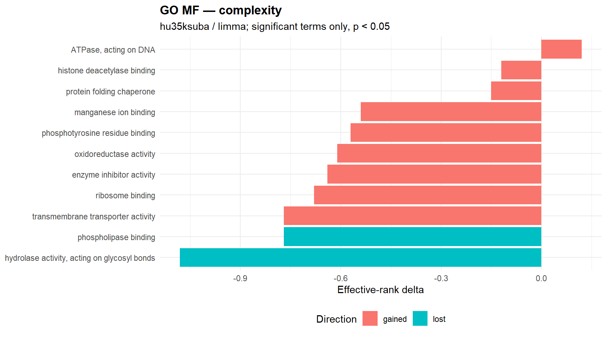
20.0.12.3.8 Entropy signal plot
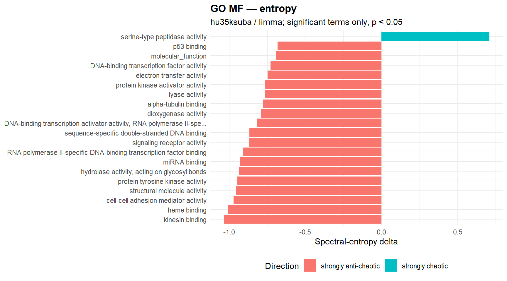
20.0.12.3.9 Significant complexity terms
| gene_set | semantic_block | n_shared_probes | effrank Δ | kappa Δ | direction | p_perm | status |
|---|---|---|---|---|---|---|---|
| enzyme inhibitor activity | enzyme regulator activity | 9 | -0.640 | 31365.340 | gained | <0.001 | ok |
| transmembrane transporter activity | transmembrane transporter activity | 20 | -0.770 | 205.100 | gained | 0.020 | ok |
| ATPase, acting on DNA | catalytic activity | 5 | 0.120 | 2545.020 | gained | 0.020 | ok |
| hydrolase activity, acting on glycosyl bonds | hydrolase activity | 6 | -1.080 | -1320.710 | lost | 0.030 | ok |
| phospholipase binding | enzyme binding | 5 | -0.770 | -137.000 | lost | 0.030 | ok |
| oxidoreductase activity | oxidoreductase activity | 34 | -0.610 | 113.450 | gained | 0.030 | ok |
| manganese ion binding | cation binding | 10 | -0.540 | 514.380 | gained | 0.030 | ok |
| ribosome binding | protein-containing complex binding | 11 | -0.680 | 670.200 | gained | 0.040 | ok |
| phosphotyrosine residue binding | protein binding | 9 | -0.570 | 1463.630 | gained | 0.040 | ok |
| protein folding chaperone | molecular_function | 8 | -0.150 | 4419.510 | gained | 0.040 | ok |
| histone deacetylase binding | enzyme binding | 10 | -0.120 | 695.890 | gained | 0.040 | ok |
20.0.12.3.10 Significant entropy terms
| gene_set | semantic_block | n_shared_probes | spectral Δ | shannon Δ | spectral_direction | p_perm_spectral | p_perm_shannon | status |
|---|---|---|---|---|---|---|---|---|
| structural molecule activity | molecular_function | 9 | -0.954 | 0.191 | strongly anti-chaotic | <0.001 | NA | ok |
| serine-type peptidase activity | peptidase activity | 5 | 0.708 | 0.203 | strongly chaotic | <0.001 | NA | ok |
| aspartic endopeptidase activity, intramembrane cleaving | peptidase activity | 5 | -0.677 | 0.190 | strongly anti-chaotic | <0.001 | NA | ok |
| GO:0140767 | protein-macromolecule adaptor activity | 5 | -0.577 | 0.185 | strongly anti-chaotic | <0.001 | NA | ok |
| 3’-5’-exoribonuclease activity | hydrolase activity, acting on ester bonds | 5 | 0.572 | 0.197 | strongly chaotic | <0.001 | NA | ok |
| protein kinase inhibitor activity | enzyme regulator activity | 8 | -0.571 | 0.199 | strongly anti-chaotic | <0.001 | NA | ok |
| translation factor activity, RNA binding | molecular_function | 6 | -0.529 | 0.183 | strongly anti-chaotic | <0.001 | NA | ok |
| manganese ion binding | cation binding | 10 | -0.519 | 0.192 | strongly anti-chaotic | <0.001 | NA | ok |
| lipid binding | lipid binding | 33 | -0.502 | 0.198 | strongly anti-chaotic | <0.001 | NA | ok |
| GTPase binding | enzyme binding | 5 | -0.497 | 0.191 | mildly anti-chaotic | <0.001 | NA | ok |
| SNARE binding | protein binding | 9 | -0.491 | 0.198 | mildly anti-chaotic | <0.001 | NA | ok |
| phosphatidylinositol-4,5-bisphosphate binding | lipid binding | 8 | -0.479 | 0.193 | mildly anti-chaotic | <0.001 | NA | ok |
| H3K9me3 modified histone binding | protein-macromolecule adaptor activity | 5 | -0.478 | 0.189 | mildly anti-chaotic | <0.001 | NA | ok |
| cell adhesion molecule binding | protein binding | 7 | -0.408 | 0.204 | mildly anti-chaotic | <0.001 | NA | ok |
| methyl-CpG binding | heterocyclic compound binding | 5 | -0.393 | 0.184 | mildly anti-chaotic | <0.001 | NA | ok |
| translation repressor activity, mRNA regulatory element binding | molecular_function | 5 | -0.311 | 0.177 | mildly anti-chaotic | <0.001 | NA | ok |
| transmembrane receptor protein tyrosine kinase adaptor activity | protein-macromolecule adaptor activity | 5 | -0.308 | 0.207 | mildly anti-chaotic | <0.001 | NA | ok |
| kinesin binding | cytoskeletal protein binding | 11 | -1.035 | 0.191 | strongly anti-chaotic | 0.010 | NA | ok |
| heme binding | binding | 8 | -1.007 | 0.195 | strongly anti-chaotic | 0.010 | NA | ok |
| cell-cell adhesion mediator activity | protein binding | 5 | -0.971 | 0.187 | strongly anti-chaotic | 0.010 | NA | ok |
20.0.12.3.11 Terms significant in both engines
| gene_set | semantic_block | n_shared_probes | complexity_effrank Δ | complexity_direction | complexity_p_perm | entropy_spectral Δ | entropy_spectral_direction | entropy_p_perm_spectral | joint_rank_score |
|---|---|---|---|---|---|---|---|---|---|
| enzyme inhibitor activity | enzyme regulator activity | 9 | -0.640 | gained | <0.001 | -0.612 | strongly anti-chaotic | 0.030 | 309.176 |
| manganese ion binding | cation binding | 10 | -0.540 | gained | 0.030 | -0.519 | strongly anti-chaotic | <0.001 | 309.176 |
| transmembrane transporter activity | transmembrane transporter activity | 20 | -0.770 | gained | 0.020 | -0.618 | strongly anti-chaotic | 0.010 | 3.699 |
| oxidoreductase activity | oxidoreductase activity | 34 | -0.610 | gained | 0.030 | -0.593 | strongly anti-chaotic | 0.010 | 3.523 |
| phospholipase binding | enzyme binding | 5 | -0.770 | lost | 0.030 | -0.632 | strongly anti-chaotic | 0.010 | 3.523 |
| phosphotyrosine residue binding | protein binding | 9 | -0.570 | gained | 0.040 | -0.503 | strongly anti-chaotic | 0.010 | 3.398 |
| hydrolase activity, acting on glycosyl bonds | hydrolase activity | 6 | -1.080 | lost | 0.030 | -0.936 | strongly anti-chaotic | 0.030 | 3.046 |
| ribosome binding | protein-containing complex binding | 11 | -0.680 | gained | 0.040 | -0.669 | strongly anti-chaotic | 0.040 | 2.796 |
20.0.12.3.12 GO semantic clusters
| semantic_cluster_id | semantic_block_name | n_rows | n_terms | n_sig_complexity | n_sig_entropy_spectral | mean_shared_probes |
|---|---|---|---|---|---|---|
| MF_GO_0043169_1 | cation binding | 6 | 3 | 0 | 3 | 131.000 |
| MF_GO_0043169_4 | cation binding | 4 | 2 | 1 | 2 | 99.500 |
| MF_GO_0008233_1 | peptidase activity | 8 | 4 | 0 | 2 | 15.500 |
| MF_GO_0042578_7 | phosphoric ester hydrolase activity | 6 | 3 | 0 | 2 | 13.000 |
| MF_GO_0005515_1 | protein binding | 4 | 2 | 0 | 2 | 608.000 |
| MF_GO_0005515_44 | protein binding | 4 | 2 | 0 | 2 | 103.500 |
| MF_GO_0005515_55 | protein binding | 4 | 2 | 0 | 2 | 31.000 |
| MF_GO_0016787_3 | hydrolase activity | 4 | 2 | 0 | 2 | 35.500 |
| MF_GO_0019899_6 | enzyme binding | 4 | 2 | 0 | 2 | 28.500 |
| MF_molecular_function_10 | molecular_function | 4 | 2 | 0 | 2 | 7.000 |
| MF_molecular_function_2 | molecular_function | 4 | 2 | 0 | 2 | 58.500 |
| MF_GO_0005515_3 | protein binding | 2 | 1 | 1 | 1 | 9.000 |
| MF_GO_0016491_20 | oxidoreductase activity | 2 | 1 | 1 | 1 | 34.000 |
| MF_GO_0016787_6 | hydrolase activity | 2 | 1 | 1 | 1 | 6.000 |
| MF_GO_0019899_13 | enzyme binding | 2 | 1 | 1 | 1 | 5.000 |
| MF_GO_0022857_3 | transmembrane transporter activity | 2 | 1 | 1 | 1 | 20.000 |
| MF_GO_0030234_1 | enzyme regulator activity | 2 | 1 | 1 | 1 | 9.000 |
| MF_GO_0044877_2 | protein-containing complex binding | 2 | 1 | 1 | 1 | 11.000 |
| MF_GO_0003677_3 | DNA binding | 6 | 3 | 0 | 1 | 20.667 |
| MF_GO_0003677_5 | DNA binding | 6 | 3 | 0 | 1 | 66.000 |
Context summary
| engine | n_rows | n_gene_sets | n_significant_complexity | n_significant_entropy_spectral | median_shared_probes |
|---|---|---|---|---|---|
| complexity | 33 | 33 | 4 | 0 | 14.000 |
| entropy | 33 | 33 | 0 | 15 | 14.000 |
20.0.12.3.13 Complexity signal plot
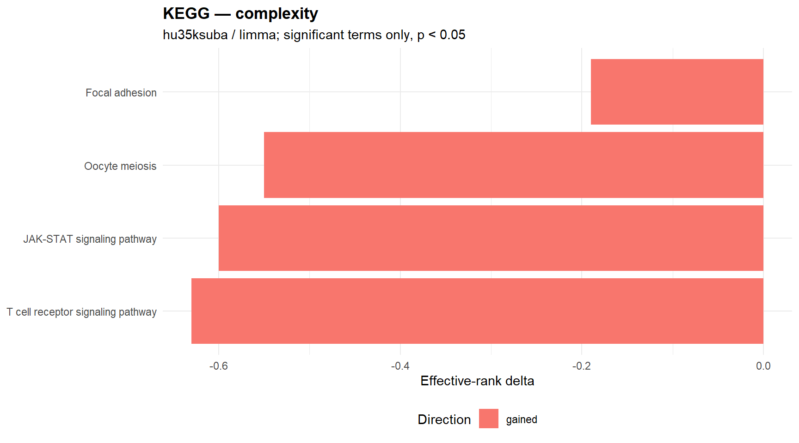
20.0.12.3.14 Entropy signal plot
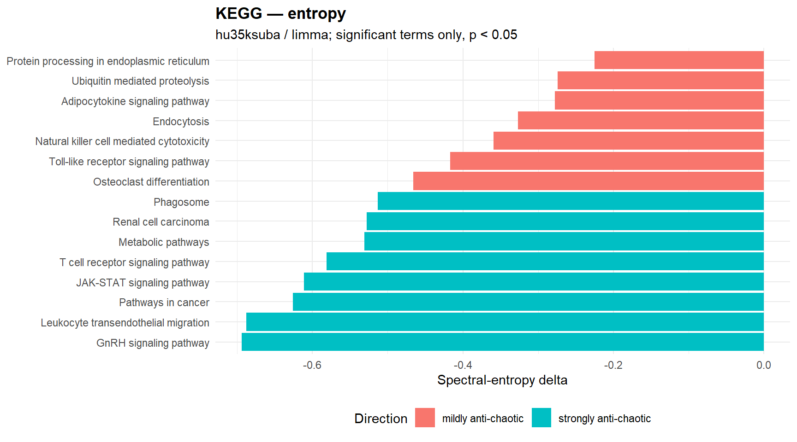
20.0.12.3.15 Significant complexity terms
| gene_set | semantic_block | n_shared_probes | effrank Δ | kappa Δ | direction | p_perm | status |
|---|---|---|---|---|---|---|---|
| T cell receptor signaling pathway | NA | 17 | -0.630 | 211.060 | gained | 0.020 | ok |
| Focal adhesion | NA | 17 | -0.190 | 151.560 | gained | 0.020 | ok |
| JAK-STAT signaling pathway | NA | 15 | -0.600 | 274.610 | gained | 0.040 | ok |
| Oocyte meiosis | NA | 11 | -0.550 | 571.180 | gained | 0.040 | ok |
20.0.12.3.16 Significant entropy terms
| gene_set | semantic_block | n_shared_probes | spectral Δ | shannon Δ | spectral_direction | p_perm_spectral | p_perm_shannon | status |
|---|---|---|---|---|---|---|---|---|
| GnRH signaling pathway | NA | 10 | -0.694 | 0.195 | strongly anti-chaotic | <0.001 | NA | ok |
| Toll-like receptor signaling pathway | NA | 12 | -0.417 | 0.195 | mildly anti-chaotic | <0.001 | NA | ok |
| Ubiquitin mediated proteolysis | NA | 17 | -0.274 | 0.199 | mildly anti-chaotic | <0.001 | NA | ok |
| Leukocyte transendothelial migration | NA | 10 | -0.688 | 0.199 | strongly anti-chaotic | 0.010 | NA | ok |
| JAK-STAT signaling pathway | NA | 15 | -0.611 | 0.192 | strongly anti-chaotic | 0.010 | NA | ok |
| Metabolic pathways | NA | 67 | -0.531 | 0.195 | strongly anti-chaotic | 0.010 | NA | ok |
| Phagosome | NA | 14 | -0.513 | 0.198 | strongly anti-chaotic | 0.010 | NA | ok |
| Osteoclast differentiation | NA | 23 | -0.466 | 0.198 | mildly anti-chaotic | 0.010 | NA | ok |
| T cell receptor signaling pathway | NA | 17 | -0.581 | 0.189 | strongly anti-chaotic | 0.020 | NA | ok |
| Renal cell carcinoma | NA | 12 | -0.528 | 0.187 | strongly anti-chaotic | 0.020 | NA | ok |
| Natural killer cell mediated cytotoxicity | NA | 17 | -0.359 | 0.192 | mildly anti-chaotic | 0.020 | NA | ok |
| Endocytosis | NA | 28 | -0.327 | 0.199 | mildly anti-chaotic | 0.020 | NA | ok |
| Protein processing in endoplasmic reticulum | NA | 14 | -0.225 | 0.199 | mildly anti-chaotic | 0.020 | NA | ok |
| Adipocytokine signaling pathway | NA | 13 | -0.278 | 0.210 | mildly anti-chaotic | 0.030 | NA | ok |
| Pathways in cancer | NA | 31 | -0.626 | 0.192 | strongly anti-chaotic | 0.040 | NA | ok |
20.0.12.3.17 Terms significant in both engines
| gene_set | semantic_block | n_shared_probes | complexity_effrank Δ | complexity_direction | complexity_p_perm | entropy_spectral Δ | entropy_spectral_direction | entropy_p_perm_spectral | joint_rank_score |
|---|---|---|---|---|---|---|---|---|---|
| JAK-STAT signaling pathway | NA | 15 | -0.600 | gained | 0.040 | -0.611 | strongly anti-chaotic | 0.010 | 3.398 |
| T cell receptor signaling pathway | NA | 17 | -0.630 | gained | 0.020 | -0.581 | strongly anti-chaotic | 0.020 | 3.398 |
Context summary
| engine | n_rows | n_gene_sets | n_significant_complexity | n_significant_entropy_spectral | median_shared_probes |
|---|---|---|---|---|---|
| complexity | 13 | 13 | 0 | 0 | 19.000 |
| entropy | 13 | 13 | 0 | 7 | 19.000 |
20.0.12.3.18 Complexity signal plot
No significant complexity terms available for plotting.
20.0.12.3.19 Entropy signal plot
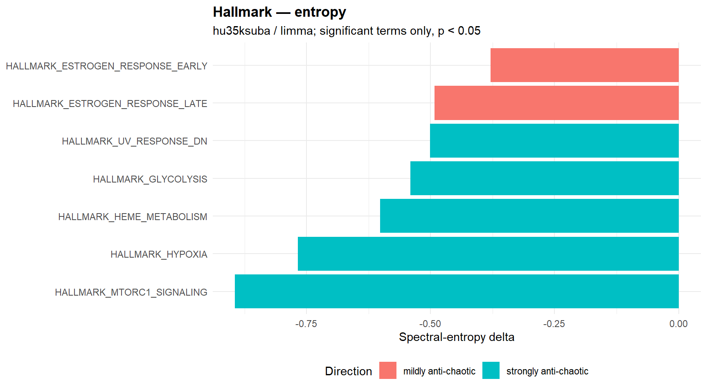
20.0.12.3.20 Significant complexity terms
No significant warehouse rows available for this section.
20.0.12.3.21 Significant entropy terms
| gene_set | semantic_block | n_shared_probes | spectral Δ | shannon Δ | spectral_direction | p_perm_spectral | p_perm_shannon | status |
|---|---|---|---|---|---|---|---|---|
| HALLMARK_UV_RESPONSE_DN | NA | 16 | -0.501 | 0.193 | strongly anti-chaotic | <0.001 | NA | ok |
| HALLMARK_ESTROGEN_RESPONSE_EARLY | NA | 19 | -0.379 | 0.202 | mildly anti-chaotic | <0.001 | NA | ok |
| HALLMARK_MTORC1_SIGNALING | NA | 21 | -0.894 | 0.183 | strongly anti-chaotic | 0.010 | NA | ok |
| HALLMARK_GLYCOLYSIS | NA | 12 | -0.541 | 0.195 | strongly anti-chaotic | 0.010 | NA | ok |
| HALLMARK_ESTROGEN_RESPONSE_LATE | NA | 13 | -0.492 | 0.199 | mildly anti-chaotic | 0.010 | NA | ok |
| HALLMARK_HEME_METABOLISM | NA | 25 | -0.602 | 0.193 | strongly anti-chaotic | 0.020 | NA | ok |
| HALLMARK_HYPOXIA | NA | 16 | -0.767 | 0.188 | strongly anti-chaotic | 0.040 | NA | ok |
20.0.12.3.22 Terms significant in both engines
No significant warehouse rows available for this section.
Context summary
| engine | n_rows | n_gene_sets | n_significant_complexity | n_significant_entropy_spectral | median_shared_probes |
|---|---|---|---|---|---|
| complexity | 1053 | 1053 | 48 | 0 | 8.000 |
| entropy | 1053 | 1053 | 0 | 187 | 8.000 |
20.0.12.3.23 Complexity signal plot
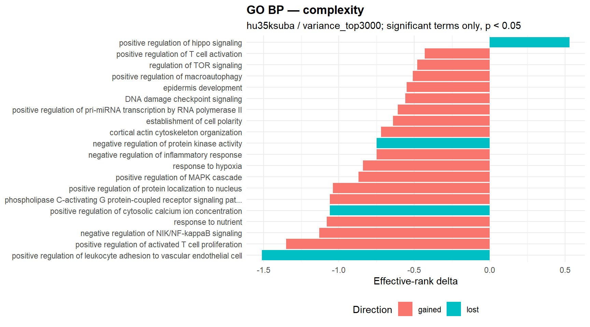
20.0.12.3.24 Entropy signal plot
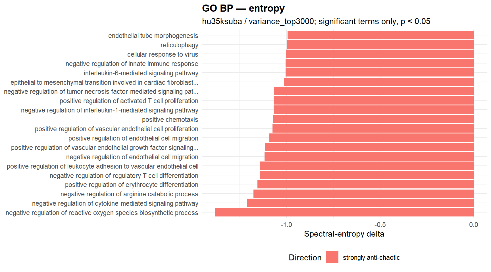
20.0.12.3.25 Significant complexity terms
| gene_set | semantic_block | n_shared_probes | effrank Δ | kappa Δ | direction | p_perm | status |
|---|---|---|---|---|---|---|---|
| positive regulation of leukocyte adhesion to vascular endothelial cell | positive regulation of cell-cell adhesion | 7 | -1.510 | -12297.720 | lost | <0.001 | ok |
| positive regulation of protein localization to nucleus | regulation of protein localization | 9 | -1.040 | 3539.650 | gained | <0.001 | ok |
| negative regulation of inflammatory response | negative regulation of response to external stimulus | 8 | -0.750 | 50340.890 | gained | <0.001 | ok |
| positive regulation of axonogenesis | positive regulation of cell development | 7 | -0.390 | -91761.710 | lost | <0.001 | ok |
| long-chain fatty acid metabolic process | fatty acid metabolic process | 5 | -0.330 | -557.800 | lost | <0.001 | ok |
| intracellular estrogen receptor signaling pathway | intracellular receptor signaling pathway | 5 | -0.330 | -854.020 | lost | <0.001 | ok |
| response to starvation | response to stress | 5 | -0.320 | -802.180 | lost | <0.001 | ok |
| positive regulation of type I interferon production | positive regulation of cytokine production | 16 | -0.270 | 338.870 | gained | <0.001 | ok |
| oogenesis | reproductive process | 5 | -0.180 | -1329.860 | lost | <0.001 | ok |
| locomotory behavior | behavior | 5 | 0.070 | -1718.870 | lost | <0.001 | ok |
| RNA metabolic process | RNA metabolic process | 5 | -0.070 | -712.100 | lost | <0.001 | ok |
| positive regulation of MAPK cascade | positive regulation of intracellular signal transduction | 22 | -0.870 | 128.670 | gained | 0.010 | ok |
| positive regulation of hippo signaling | positive regulation of intracellular signal transduction | 5 | 0.530 | -907.700 | lost | 0.010 | ok |
| regulation of TOR signaling | regulation of intracellular signal transduction | 9 | -0.480 | 2112.210 | gained | 0.010 | ok |
| mitral valve morphogenesis | heart development | 6 | -0.370 | -2558.850 | lost | 0.010 | ok |
| positive regulation of GTPase activity | regulation of catalytic activity | 12 | 0.190 | 761.080 | gained | 0.010 | ok |
| calcium ion transmembrane transport | calcium ion transport | 14 | -0.120 | 288.700 | gained | 0.010 | ok |
| sister chromatid cohesion | chromosome organization | 5 | 0.100 | -435.680 | lost | 0.010 | ok |
| phospholipase C-activating G protein-coupled receptor signaling pathway | G protein-coupled receptor signaling pathway | 8 | -1.060 | 16880.090 | gained | 0.020 | ok |
| epidermis development | tissue development | 8 | -0.550 | 31291.560 | gained | 0.020 | ok |
20.0.12.3.26 Significant entropy terms
| gene_set | semantic_block | n_shared_probes | spectral Δ | shannon Δ | spectral_direction | p_perm_spectral | p_perm_shannon | status |
|---|---|---|---|---|---|---|---|---|
| negative regulation of reactive oxygen species biosynthetic process | negative regulation of biosynthetic process | 6 | -1.381 | 0.191 | strongly anti-chaotic | <0.001 | NA | ok |
| negative regulation of cytokine-mediated signaling pathway | cytokine-mediated signaling pathway | 6 | -1.209 | 0.193 | strongly anti-chaotic | <0.001 | NA | ok |
| positive regulation of vascular endothelial growth factor signaling pathway | cell surface receptor protein tyrosine kinase signaling pathway | 6 | -1.114 | 0.196 | strongly anti-chaotic | <0.001 | NA | ok |
| positive chemotaxis | chemotaxis | 6 | -1.072 | 0.185 | strongly anti-chaotic | <0.001 | NA | ok |
| interleukin-6-mediated signaling pathway | cytokine-mediated signaling pathway | 5 | -1.004 | 0.201 | strongly anti-chaotic | <0.001 | NA | ok |
| reticulophagy | macroautophagy | 5 | -0.998 | 0.186 | strongly anti-chaotic | <0.001 | NA | ok |
| endothelial tube morphogenesis | tissue morphogenesis | 6 | -0.994 | 0.193 | strongly anti-chaotic | <0.001 | NA | ok |
| gene silencing by miRNA | post-transcriptional regulation of gene expression | 7 | -0.908 | 0.197 | strongly anti-chaotic | <0.001 | NA | ok |
| positive regulation of innate immune response | positive regulation of innate immune response | 8 | -0.903 | 0.192 | strongly anti-chaotic | <0.001 | NA | ok |
| negative regulation of intrinsic apoptotic signaling pathway by p53 class mediator | apoptotic signaling pathway | 6 | -0.855 | 0.187 | strongly anti-chaotic | <0.001 | NA | ok |
| lipid storage | biological_process | 5 | -0.809 | 0.196 | strongly anti-chaotic | <0.001 | NA | ok |
| cellular response to glucose starvation | cellular response to stress | 13 | -0.809 | 0.195 | strongly anti-chaotic | <0.001 | NA | ok |
| calcium-mediated signaling | intracellular signal transduction | 8 | -0.801 | 0.194 | strongly anti-chaotic | <0.001 | NA | ok |
| negative regulation of cardiac muscle cell apoptotic process | negative regulation of apoptotic process | 6 | -0.797 | 0.194 | strongly anti-chaotic | <0.001 | NA | ok |
| natural killer cell mediated cytotoxicity | lymphocyte mediated immunity | 7 | -0.784 | 0.193 | strongly anti-chaotic | <0.001 | NA | ok |
| protein localization to endosome | protein localization to organelle | 5 | 0.769 | 0.197 | strongly chaotic | <0.001 | NA | ok |
| cellular response to amino acid starvation | cellular response to stress | 11 | -0.743 | 0.195 | strongly anti-chaotic | <0.001 | NA | ok |
| negative regulation of protein phosphorylation | regulation of phosphorus metabolic process | 11 | -0.739 | 0.197 | strongly anti-chaotic | <0.001 | NA | ok |
| positive regulation of transforming growth factor beta receptor signaling pathway | cellular response to growth factor stimulus | 11 | -0.724 | 0.196 | strongly anti-chaotic | <0.001 | NA | ok |
| cellular response to mechanical stimulus | response to abiotic stimulus | 7 | -0.719 | 0.187 | strongly anti-chaotic | <0.001 | NA | ok |
20.0.12.3.27 Terms significant in both engines
| gene_set | semantic_block | n_shared_probes | complexity_effrank Δ | complexity_direction | complexity_p_perm | entropy_spectral Δ | entropy_spectral_direction | entropy_p_perm_spectral | joint_rank_score |
|---|---|---|---|---|---|---|---|---|---|
| regulation of TOR signaling | regulation of intracellular signal transduction | 9 | -0.480 | gained | 0.010 | -0.461 | mildly anti-chaotic | <0.001 | 309.653 |
| positive regulation of leukocyte adhesion to vascular endothelial cell | positive regulation of cell-cell adhesion | 7 | -1.510 | lost | <0.001 | -1.140 | strongly anti-chaotic | 0.010 | 309.653 |
| positive regulation of protein localization to nucleus | regulation of protein localization | 9 | -1.040 | gained | <0.001 | -0.842 | strongly anti-chaotic | 0.020 | 309.352 |
| positive regulation of axonogenesis | positive regulation of cell development | 7 | -0.390 | lost | <0.001 | -0.375 | mildly anti-chaotic | 0.030 | 309.176 |
| positive regulation of MAPK cascade | positive regulation of intracellular signal transduction | 22 | -0.870 | gained | 0.010 | -0.687 | strongly anti-chaotic | 0.010 | 4.000 |
| positive regulation of T cell activation | positive regulation of cell-cell adhesion | 13 | -0.430 | gained | 0.020 | -0.411 | mildly anti-chaotic | 0.010 | 3.699 |
| positive regulation of cytosolic calcium ion concentration | regulation of biological quality | 7 | -1.060 | lost | 0.030 | -0.922 | strongly anti-chaotic | 0.010 | 3.523 |
| negative regulation of NIK/NF-kappaB signaling | negative regulation of intracellular signal transduction | 11 | -1.130 | gained | 0.030 | -0.843 | strongly anti-chaotic | 0.010 | 3.523 |
| response to hypoxia | response to abiotic stimulus | 18 | -0.840 | gained | 0.040 | -0.586 | strongly anti-chaotic | 0.010 | 3.398 |
| response to nutrient | response to chemical | 10 | -1.080 | gained | 0.040 | -0.716 | strongly anti-chaotic | 0.010 | 3.398 |
| positive regulation of activated T cell proliferation | positive regulation of cell-cell adhesion | 9 | -1.350 | gained | 0.040 | -1.068 | strongly anti-chaotic | 0.010 | 3.398 |
| phospholipase C-activating G protein-coupled receptor signaling pathway | G protein-coupled receptor signaling pathway | 8 | -1.060 | gained | 0.020 | -0.821 | strongly anti-chaotic | 0.030 | 3.222 |
| viral release from host cell | biological process involved in interspecies interaction between organisms | 8 | -0.340 | gained | 0.030 | -0.359 | mildly anti-chaotic | 0.020 | 3.222 |
| negative regulation of protein kinase activity | regulation of catalytic activity | 5 | -0.750 | lost | 0.040 | -0.659 | strongly anti-chaotic | 0.020 | 3.097 |
20.0.12.3.28 GO semantic clusters
| semantic_cluster_id | semantic_block_name | n_rows | n_terms | n_sig_complexity | n_sig_entropy_spectral | mean_shared_probes |
|---|---|---|---|---|---|---|
| BP_GO_1902532_1 | negative regulation of intracellular signal transduction | 14 | 7 | 2 | 3 | 12.286 |
| BP_GO_1902531_1 | regulation of intracellular signal transduction | 12 | 6 | 1 | 3 | 9.833 |
| BP_GO_0007186_2 | G protein-coupled receptor signaling pathway | 10 | 5 | 1 | 2 | 14.000 |
| BP_GO_0033554_1 | cellular response to stress | 10 | 5 | 0 | 3 | 12.000 |
| BP_GO_0022603_2 | regulation of anatomical structure morphogenesis | 8 | 4 | 0 | 3 | 14.250 |
| BP_GO_0019221_1 | cytokine-mediated signaling pathway | 6 | 3 | 0 | 3 | 7.000 |
| BP_GO_0044419_1 | biological process involved in interspecies interaction between organisms | 4 | 2 | 1 | 2 | 6.500 |
| BP_GO_0001819_1 | positive regulation of cytokine production | 10 | 5 | 0 | 2 | 9.800 |
| BP_GO_0071363_2 | cellular response to growth factor stimulus | 6 | 3 | 0 | 2 | 12.000 |
| BP_GO_0006396_2 | RNA processing | 4 | 2 | 0 | 2 | 12.500 |
| BP_GO_0006629_3 | lipid metabolic process | 4 | 2 | 0 | 2 | 56.500 |
| BP_GO_0006935_1 | chemotaxis | 4 | 2 | 0 | 2 | 10.000 |
| BP_GO_0010720_5 | positive regulation of cell development | 4 | 2 | 1 | 1 | 6.000 |
| BP_GO_0022409_3 | positive regulation of cell-cell adhesion | 4 | 2 | 1 | 1 | 8.500 |
| BP_GO_0022411_8 | cellular component disassembly | 4 | 2 | 0 | 2 | 11.500 |
| BP_GO_0030335_2 | positive regulation of cell migration | 4 | 2 | 0 | 2 | 25.000 |
| BP_GO_0031399_1 | regulation of protein modification process | 4 | 2 | 1 | 1 | 8.000 |
| BP_GO_0042981_4 | regulation of apoptotic process | 4 | 2 | 1 | 1 | 27.500 |
| BP_GO_0051604_4 | protein maturation | 4 | 2 | 0 | 2 | 16.500 |
| BP_GO_0120036_1 | plasma membrane bounded cell projection organization | 4 | 2 | 0 | 2 | 5.000 |
Context summary
| engine | n_rows | n_gene_sets | n_significant_complexity | n_significant_entropy_spectral | median_shared_probes |
|---|---|---|---|---|---|
| complexity | 396 | 396 | 17 | 0 | 9.000 |
| entropy | 396 | 396 | 0 | 57 | 9.000 |
20.0.12.3.29 Complexity signal plot
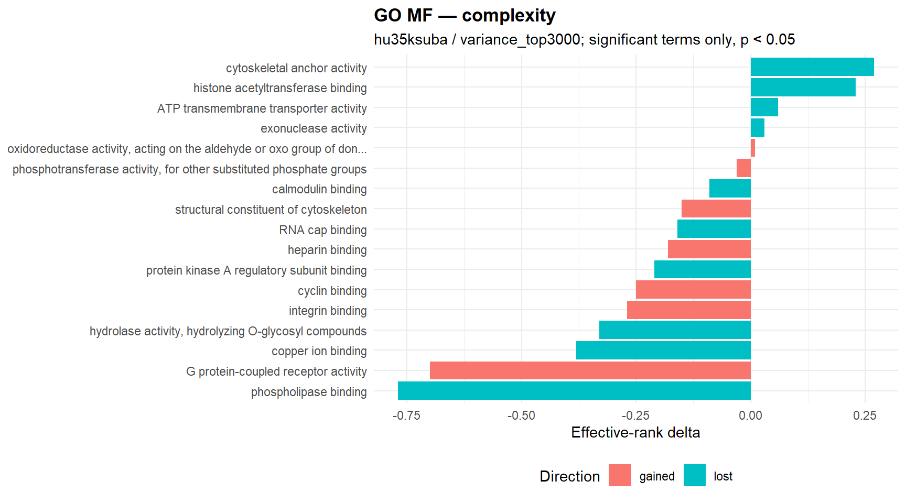
20.0.12.3.30 Entropy signal plot
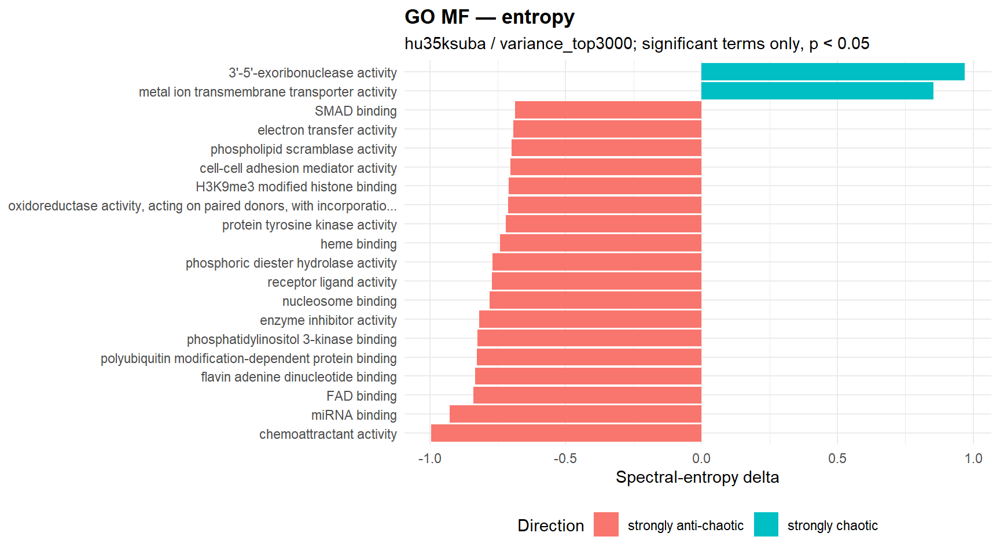
20.0.12.3.31 Significant complexity terms
| gene_set | semantic_block | n_shared_probes | effrank Δ | kappa Δ | direction | p_perm | status |
|---|---|---|---|---|---|---|---|
| cytoskeletal anchor activity | protein-macromolecule adaptor activity | 6 | 0.270 | -28207.240 | lost | <0.001 | ok |
| oxidoreductase activity, acting on the aldehyde or oxo group of donors, NAD or NADP as acceptor | oxidoreductase activity | 8 | 0.010 | 110391.430 | gained | <0.001 | ok |
| cyclin binding | protein binding | 8 | -0.250 | 27331.020 | gained | 0.010 | ok |
| protein kinase A regulatory subunit binding | protein binding | 5 | -0.210 | -1235.570 | lost | 0.010 | ok |
| ATP transmembrane transporter activity | transmembrane transporter activity | 5 | 0.060 | -470.230 | lost | 0.010 | ok |
| integrin binding | protein-containing complex binding | 15 | -0.270 | 249.860 | gained | 0.020 | ok |
| histone acetyltransferase binding | enzyme binding | 5 | 0.230 | -167.770 | lost | 0.020 | ok |
| heparin binding | carbohydrate derivative binding | 10 | -0.180 | 1105.880 | gained | 0.020 | ok |
| RNA cap binding | RNA binding | 6 | -0.160 | -1245.810 | lost | 0.020 | ok |
| calmodulin binding | protein binding | 28 | -0.090 | -139.100 | lost | 0.020 | ok |
| phosphotransferase activity, for other substituted phosphate groups | transferase activity, transferring phosphorus-containing groups | 5 | -0.030 | 461.530 | gained | 0.020 | ok |
| phospholipase binding | enzyme binding | 5 | -0.770 | -137.000 | lost | 0.030 | ok |
| G protein-coupled receptor activity | transmembrane signaling receptor activity | 14 | -0.700 | 136.330 | gained | 0.030 | ok |
| hydrolase activity, hydrolyzing O-glycosyl compounds | hydrolase activity | 6 | -0.330 | -1028.730 | lost | 0.030 | ok |
| structural constituent of cytoskeleton | molecular_function | 30 | -0.150 | 112.620 | gained | 0.030 | ok |
| exonuclease activity | hydrolase activity, acting on ester bonds | 10 | 0.030 | -996.990 | lost | 0.030 | ok |
| copper ion binding | cation binding | 5 | -0.380 | -220.120 | lost | 0.040 | ok |
20.0.12.3.32 Significant entropy terms
| gene_set | semantic_block | n_shared_probes | spectral Δ | shannon Δ | spectral_direction | p_perm_spectral | p_perm_shannon | status |
|---|---|---|---|---|---|---|---|---|
| chemoattractant activity | molecular function regulator activity | 5 | -0.994 | 0.192 | strongly anti-chaotic | <0.001 | NA | ok |
| miRNA binding | RNA binding | 11 | -0.927 | 0.188 | strongly anti-chaotic | <0.001 | NA | ok |
| polyubiquitin modification-dependent protein binding | protein binding | 7 | -0.827 | 0.193 | strongly anti-chaotic | <0.001 | NA | ok |
| receptor ligand activity | molecular function regulator activity | 10 | -0.772 | 0.194 | strongly anti-chaotic | <0.001 | NA | ok |
| H3K9me3 modified histone binding | protein-macromolecule adaptor activity | 6 | -0.710 | 0.188 | strongly anti-chaotic | <0.001 | NA | ok |
| phospholipid scramblase activity | transporter activity | 8 | -0.698 | 0.194 | strongly anti-chaotic | <0.001 | NA | ok |
| dioxygenase activity | oxidoreductase activity | 22 | -0.679 | 0.194 | strongly anti-chaotic | <0.001 | NA | ok |
| monooxygenase activity | oxidoreductase activity | 7 | -0.629 | 0.193 | strongly anti-chaotic | <0.001 | NA | ok |
| chaperone binding | protein binding | 18 | -0.559 | 0.194 | strongly anti-chaotic | <0.001 | NA | ok |
| iron ion binding | cation binding | 19 | -0.464 | 0.199 | mildly anti-chaotic | <0.001 | NA | ok |
| RNA 7-methylguanosine cap binding | RNA binding | 5 | -0.454 | 0.186 | mildly anti-chaotic | <0.001 | NA | ok |
| protein kinase A binding | protein binding | 6 | -0.422 | 0.189 | mildly anti-chaotic | <0.001 | NA | ok |
| mitogen-activated protein kinase binding | enzyme binding | 8 | -0.418 | 0.197 | mildly anti-chaotic | <0.001 | NA | ok |
| protein kinase inhibitor activity | enzyme regulator activity | 15 | -0.257 | 0.205 | mildly anti-chaotic | <0.001 | NA | ok |
| protein kinase A regulatory subunit binding | protein binding | 5 | -0.255 | 0.189 | mildly anti-chaotic | <0.001 | NA | ok |
| FAD binding | anion binding | 11 | -0.839 | 0.191 | strongly anti-chaotic | 0.010 | NA | ok |
| flavin adenine dinucleotide binding | anion binding | 8 | -0.832 | 0.186 | strongly anti-chaotic | 0.010 | NA | ok |
| phosphatidylinositol 3-kinase binding | protein binding | 5 | -0.825 | 0.182 | strongly anti-chaotic | 0.010 | NA | ok |
| nucleosome binding | protein-containing complex binding | 8 | -0.780 | 0.189 | strongly anti-chaotic | 0.010 | NA | ok |
| heme binding | binding | 15 | -0.742 | 0.191 | strongly anti-chaotic | 0.010 | NA | ok |
20.0.12.3.33 Terms significant in both engines
| gene_set | semantic_block | n_shared_probes | complexity_effrank Δ | complexity_direction | complexity_p_perm | entropy_spectral Δ | entropy_spectral_direction | entropy_p_perm_spectral | joint_rank_score |
|---|---|---|---|---|---|---|---|---|---|
| protein kinase A regulatory subunit binding | protein binding | 5 | -0.210 | lost | 0.010 | -0.255 | mildly anti-chaotic | <0.001 | 309.653 |
| phospholipase binding | enzyme binding | 5 | -0.770 | lost | 0.030 | -0.632 | strongly anti-chaotic | 0.010 | 3.523 |
20.0.12.3.34 GO semantic clusters
| semantic_cluster_id | semantic_block_name | n_rows | n_terms | n_sig_complexity | n_sig_entropy_spectral | mean_shared_probes |
|---|---|---|---|---|---|---|
| MF_GO_0005515_37 | protein binding | 4 | 2 | 1 | 2 | 5.500 |
| MF_GO_0098772_3 | molecular function regulator activity | 8 | 4 | 0 | 2 | 10.000 |
| MF_GO_0003723_2 | RNA binding | 4 | 2 | 1 | 1 | 5.500 |
| MF_GO_0003824_6 | catalytic activity | 4 | 2 | 0 | 2 | 32.500 |
| MF_GO_0043168_10 | anion binding | 4 | 2 | 0 | 2 | 9.500 |
| MF_GO_0019899_13 | enzyme binding | 2 | 1 | 1 | 1 | 5.000 |
| MF_GO_0004672_1 | protein kinase activity | 8 | 4 | 0 | 1 | 30.500 |
| MF_GO_0008092_4 | cytoskeletal protein binding | 8 | 4 | 0 | 1 | 11.500 |
| MF_GO_0008289_14 | lipid binding | 8 | 4 | 0 | 1 | 7.000 |
| MF_GO_0019899_3 | enzyme binding | 8 | 4 | 0 | 1 | 33.750 |
| MF_GO_0042578_7 | phosphoric ester hydrolase activity | 8 | 4 | 0 | 1 | 18.750 |
| MF_GO_0005515_58 | protein binding | 6 | 3 | 0 | 1 | 9.333 |
| MF_GO_0008134_7 | transcription factor binding | 6 | 3 | 0 | 1 | 16.333 |
| MF_GO_0008289_11 | lipid binding | 6 | 3 | 0 | 1 | 8.333 |
| MF_GO_0005515_28 | protein binding | 4 | 2 | 0 | 1 | 7.500 |
| MF_GO_0005515_31 | protein binding | 4 | 2 | 0 | 1 | 6.000 |
| MF_GO_0005515_61 | protein binding | 4 | 2 | 0 | 1 | 40.000 |
| MF_GO_0008233_3 | peptidase activity | 4 | 2 | 0 | 1 | 7.500 |
| MF_GO_0016787_6 | hydrolase activity | 4 | 2 | 1 | 0 | 8.000 |
| MF_GO_0016788_2 | hydrolase activity, acting on ester bonds | 4 | 2 | 0 | 1 | 8.000 |
Context summary
| engine | n_rows | n_gene_sets | n_significant_complexity | n_significant_entropy_spectral | median_shared_probes |
|---|---|---|---|---|---|
| complexity | 56 | 56 | 2 | 0 | 20.500 |
| entropy | 56 | 56 | 0 | 6 | 20.500 |
20.0.12.3.35 Complexity signal plot
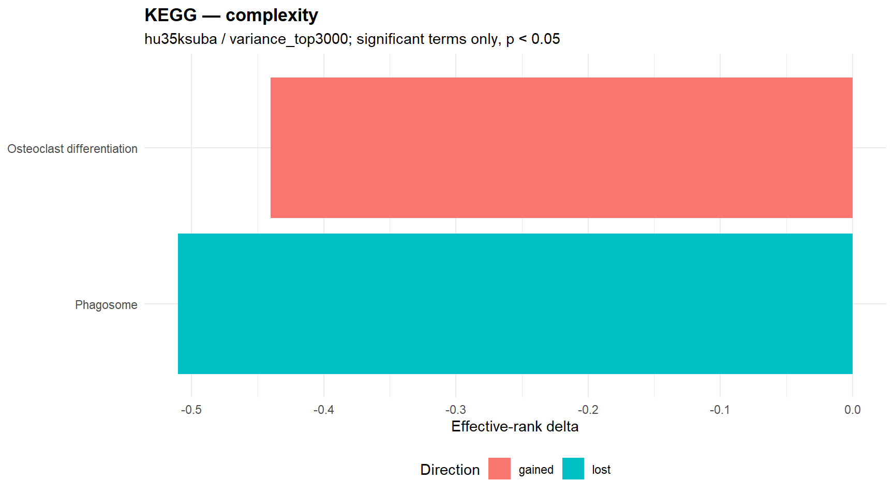
20.0.12.3.36 Entropy signal plot
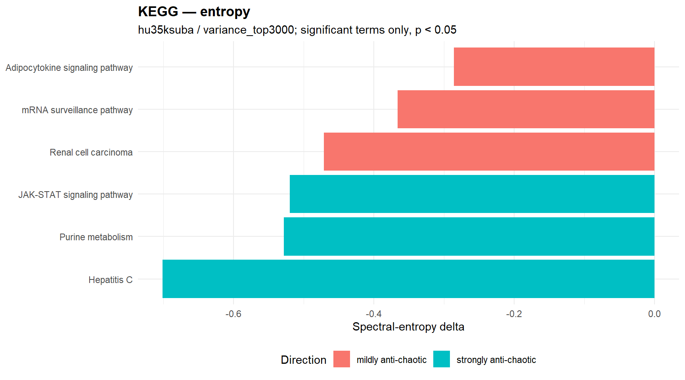
20.0.12.3.37 Significant complexity terms
| gene_set | semantic_block | n_shared_probes | effrank Δ | kappa Δ | direction | p_perm | status |
|---|---|---|---|---|---|---|---|
| Phagosome | NA | 25 | -0.510 | -69.450 | lost | 0.020 | ok |
| Osteoclast differentiation | NA | 31 | -0.440 | 61.320 | gained | 0.030 | ok |
20.0.12.3.38 Significant entropy terms
| gene_set | semantic_block | n_shared_probes | spectral Δ | shannon Δ | spectral_direction | p_perm_spectral | p_perm_shannon | status |
|---|---|---|---|---|---|---|---|---|
| Purine metabolism | NA | 17 | -0.528 | 0.191 | strongly anti-chaotic | <0.001 | NA | ok |
| Adipocytokine signaling pathway | NA | 14 | -0.286 | 0.208 | mildly anti-chaotic | <0.001 | NA | ok |
| Hepatitis C | NA | 19 | -0.701 | 0.193 | strongly anti-chaotic | 0.020 | NA | ok |
| JAK-STAT signaling pathway | NA | 25 | -0.520 | 0.196 | strongly anti-chaotic | 0.020 | NA | ok |
| mRNA surveillance pathway | NA | 20 | -0.366 | 0.192 | mildly anti-chaotic | 0.020 | NA | ok |
| Renal cell carcinoma | NA | 18 | -0.471 | 0.191 | mildly anti-chaotic | 0.040 | NA | ok |
20.0.12.3.39 Terms significant in both engines
No significant warehouse rows available for this section.
Context summary
| engine | n_rows | n_gene_sets | n_significant_complexity | n_significant_entropy_spectral | median_shared_probes |
|---|---|---|---|---|---|
| complexity | 13 | 13 | 1 | 0 | 50.000 |
| entropy | 13 | 13 | 0 | 4 | 50.000 |
20.0.12.3.40 Complexity signal plot
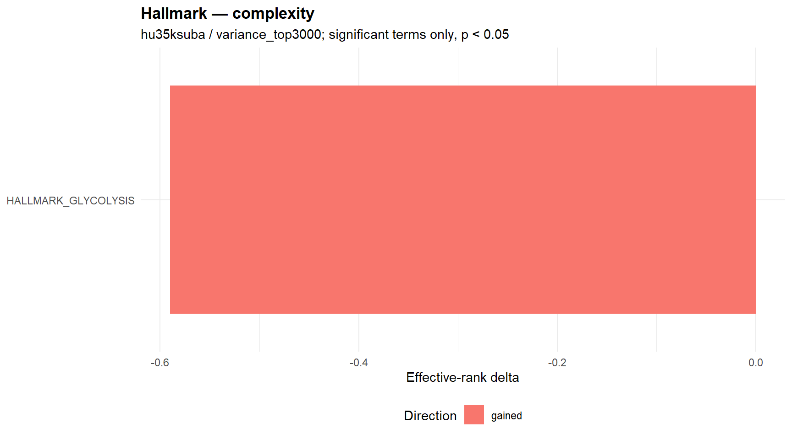
20.0.12.3.41 Entropy signal plot
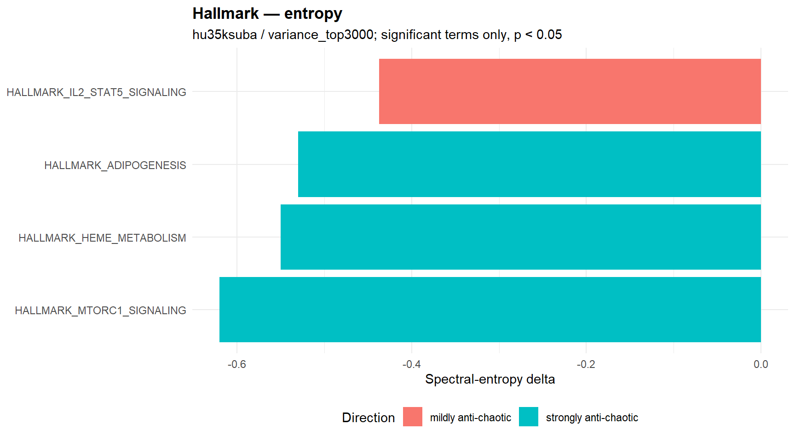
20.0.12.3.42 Significant complexity terms
| gene_set | semantic_block | n_shared_probes | effrank Δ | kappa Δ | direction | p_perm | status |
|---|---|---|---|---|---|---|---|
| HALLMARK_GLYCOLYSIS | NA | 23 | -0.590 | 69.740 | gained | 0.030 | ok |
20.0.12.3.43 Significant entropy terms
| gene_set | semantic_block | n_shared_probes | spectral Δ | shannon Δ | spectral_direction | p_perm_spectral | p_perm_shannon | status |
|---|---|---|---|---|---|---|---|---|
| HALLMARK_ADIPOGENESIS | NA | 51 | -0.530 | 0.194 | strongly anti-chaotic | 0.020 | NA | ok |
| HALLMARK_IL2_STAT5_SIGNALING | NA | 43 | -0.437 | 0.201 | mildly anti-chaotic | 0.020 | NA | ok |
| HALLMARK_MTORC1_SIGNALING | NA | 52 | -0.620 | 0.188 | strongly anti-chaotic | 0.040 | NA | ok |
| HALLMARK_HEME_METABOLISM | NA | 50 | -0.550 | 0.196 | strongly anti-chaotic | 0.040 | NA | ok |
20.0.12.3.44 Terms significant in both engines
No significant warehouse rows available for this section.
Context summary
| engine | n_rows | n_gene_sets | n_significant_complexity | n_significant_entropy_spectral | median_shared_probes |
|---|---|---|---|---|---|
| complexity | 534 | 534 | 40 | 0 | 8.000 |
| entropy | 534 | 534 | 0 | 268 | 8.000 |
20.0.12.3.45 Complexity signal plot
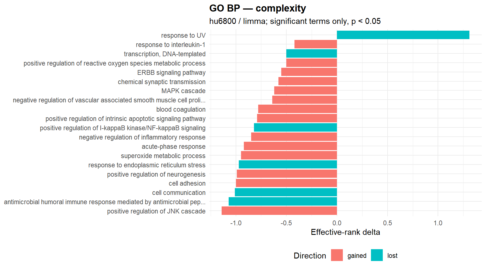
20.0.12.3.46 Entropy signal plot
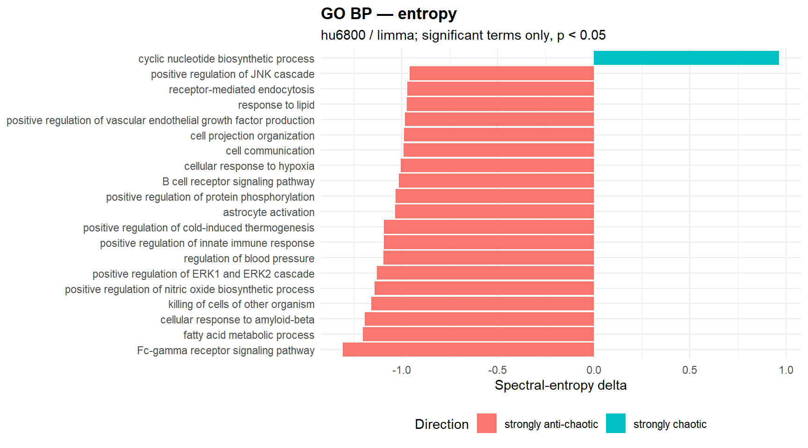
20.0.12.3.47 Significant complexity terms
| gene_set | semantic_block | n_shared_probes | effrank Δ | kappa Δ | direction | p_perm | status |
|---|---|---|---|---|---|---|---|
| positive regulation of JNK cascade | positive regulation of intracellular signal transduction | 6 | -1.140 | 2851.480 | gained | <0.001 | ok |
| antimicrobial humoral immune response mediated by antimicrobial peptide | defense response to symbiont | 12 | -1.070 | -203.270 | lost | <0.001 | ok |
| negative regulation of inflammatory response | negative regulation of response to external stimulus | 15 | -0.850 | 374.480 | gained | <0.001 | ok |
| blood coagulation | regulation of body fluid levels | 8 | -0.780 | 30789.310 | gained | <0.001 | ok |
| negative regulation of vascular associated smooth muscle cell proliferation | regulation of cell population proliferation | 5 | -0.640 | 1180.990 | gained | <0.001 | ok |
| MAPK cascade | intracellular signal transduction | 13 | -0.620 | 308.960 | gained | <0.001 | ok |
| transcription, DNA-templated | DNA-templated transcription | 11 | -0.500 | -630.100 | lost | <0.001 | ok |
| cellular response to UV | response to radiation | 9 | -0.260 | -2392.780 | lost | <0.001 | ok |
| type I interferon signaling pathway | cytokine-mediated signaling pathway | 5 | -0.260 | 558.280 | gained | <0.001 | ok |
| protein autophosphorylation | protein phosphorylation | 8 | -0.160 | 3824.830 | gained | <0.001 | ok |
| response to UV | response to radiation | 5 | 1.310 | -399.490 | lost | 0.010 | ok |
| positive regulation of neurogenesis | positive regulation of cell development | 5 | -0.990 | 1804.200 | gained | 0.010 | ok |
| ERBB signaling pathway | cell surface receptor protein tyrosine kinase signaling pathway | 5 | -0.550 | 1992.360 | gained | 0.010 | ok |
| DNA damage response, signal transduction by p53 class mediator | DNA damage response | 6 | -0.390 | -2598.930 | lost | 0.010 | ok |
| mRNA processing | mRNA metabolic process | 32 | -0.390 | -99.730 | lost | 0.010 | ok |
| RNA splicing | RNA processing | 30 | -0.380 | -83.930 | lost | 0.010 | ok |
| protein homooligomerization | protein-containing complex assembly | 10 | -0.240 | -578.320 | lost | 0.010 | ok |
| male gonad development | reproductive process | 6 | 0.150 | 1723.700 | gained | 0.010 | ok |
| mRNA splicing, via spliceosome | mRNA metabolic process | 23 | -0.120 | -121.850 | lost | 0.010 | ok |
| response to interleukin-1 | response to cytokine | 9 | -0.420 | 2095.000 | gained | 0.020 | ok |
20.0.12.3.48 Significant entropy terms
| gene_set | semantic_block | n_shared_probes | spectral Δ | shannon Δ | spectral_direction | p_perm_spectral | p_perm_shannon | status |
|---|---|---|---|---|---|---|---|---|
| Fc-gamma receptor signaling pathway | immune response-regulating signaling pathway | 7 | -1.306 | 0.001 | strongly anti-chaotic | <0.001 | NA | ok |
| cell communication | cell communication | 5 | -0.990 | 0.005 | strongly anti-chaotic | <0.001 | NA | ok |
| cyclic nucleotide biosynthetic process | nucleoside phosphate biosynthetic process | 5 | 0.965 | 0.010 | strongly chaotic | <0.001 | NA | ok |
| cellular oxidant detoxification | cellular response to chemical stimulus | 6 | -0.933 | -0.002 | strongly anti-chaotic | <0.001 | NA | ok |
| acute-phase response | inflammatory response | 5 | -0.872 | 0.002 | strongly anti-chaotic | <0.001 | NA | ok |
| signaling | signaling | 5 | -0.870 | 0.020 | strongly anti-chaotic | <0.001 | NA | ok |
| regulation of gene expression | regulation of gene expression | 17 | -0.862 | -0.008 | strongly anti-chaotic | <0.001 | NA | ok |
| cellular response to ethanol | cellular response to oxygen-containing compound | 6 | -0.857 | -0.023 | strongly anti-chaotic | <0.001 | NA | ok |
| microglial cell activation | inflammatory response | 9 | -0.818 | 0.015 | strongly anti-chaotic | <0.001 | NA | ok |
| central nervous system development | central nervous system development | 8 | -0.784 | -0.014 | strongly anti-chaotic | <0.001 | NA | ok |
| neutrophil chemotaxis | leukocyte migration | 11 | -0.770 | 0.014 | strongly anti-chaotic | <0.001 | NA | ok |
| cell-cell signaling | cell-cell signaling | 14 | -0.687 | 0.012 | strongly anti-chaotic | <0.001 | NA | ok |
| positive regulation of pri-miRNA transcription by RNA polymerase II | positive regulation of RNA metabolic process | 12 | -0.670 | 0.004 | strongly anti-chaotic | <0.001 | NA | ok |
| proteasome-mediated ubiquitin-dependent protein catabolic process | protein catabolic process | 16 | -0.644 | -0.012 | strongly anti-chaotic | <0.001 | NA | ok |
| positive regulation of chemokine production | positive regulation of cytokine production | 5 | -0.634 | 0.004 | strongly anti-chaotic | <0.001 | NA | ok |
| MAPK cascade | intracellular signal transduction | 13 | -0.606 | -0.003 | strongly anti-chaotic | <0.001 | NA | ok |
| calcium-mediated signaling | intracellular signal transduction | 10 | -0.578 | 0.008 | strongly anti-chaotic | <0.001 | NA | ok |
| vasculogenesis | blood vessel morphogenesis | 5 | -0.573 | 0.002 | strongly anti-chaotic | <0.001 | NA | ok |
| negative regulation of phagocytosis | negative regulation of transport | 5 | -0.553 | -0.018 | strongly anti-chaotic | <0.001 | NA | ok |
| mitotic cell cycle | mitotic cell cycle | 12 | -0.516 | 0.007 | strongly anti-chaotic | <0.001 | NA | ok |
20.0.12.3.49 Terms significant in both engines
| gene_set | semantic_block | n_shared_probes | complexity_effrank Δ | complexity_direction | complexity_p_perm | entropy_spectral Δ | entropy_spectral_direction | entropy_p_perm_spectral | joint_rank_score |
|---|---|---|---|---|---|---|---|---|---|
| MAPK cascade | intracellular signal transduction | 13 | -0.620 | gained | <0.001 | -0.606 | strongly anti-chaotic | <0.001 | 615.305 |
| negative regulation of inflammatory response | negative regulation of response to external stimulus | 15 | -0.850 | gained | <0.001 | -0.769 | strongly anti-chaotic | 0.010 | 309.653 |
| antimicrobial humoral immune response mediated by antimicrobial peptide | defense response to symbiont | 12 | -1.070 | lost | <0.001 | -0.913 | strongly anti-chaotic | 0.010 | 309.653 |
| negative regulation of vascular associated smooth muscle cell proliferation | regulation of cell population proliferation | 5 | -0.640 | gained | <0.001 | -0.646 | strongly anti-chaotic | 0.010 | 309.653 |
| positive regulation of JNK cascade | positive regulation of intracellular signal transduction | 6 | -1.140 | gained | <0.001 | -0.958 | strongly anti-chaotic | 0.020 | 309.352 |
| acute-phase response | inflammatory response | 5 | -0.920 | gained | 0.040 | -0.872 | strongly anti-chaotic | <0.001 | 309.051 |
| cell communication | cell communication | 5 | -1.010 | lost | 0.040 | -0.990 | strongly anti-chaotic | <0.001 | 309.051 |
| blood coagulation | regulation of body fluid levels | 8 | -0.780 | gained | <0.001 | -0.775 | strongly anti-chaotic | 0.040 | 309.051 |
| response to UV | response to radiation | 5 | 1.310 | lost | 0.010 | 0.942 | strongly chaotic | 0.020 | 3.699 |
| ERBB signaling pathway | cell surface receptor protein tyrosine kinase signaling pathway | 5 | -0.550 | gained | 0.010 | -0.573 | strongly anti-chaotic | 0.020 | 3.699 |
| positive regulation of neurogenesis | positive regulation of cell development | 5 | -0.990 | gained | 0.010 | -0.847 | strongly anti-chaotic | 0.020 | 3.699 |
| cell adhesion | cell adhesion | 57 | -1.000 | gained | 0.030 | -0.863 | strongly anti-chaotic | 0.010 | 3.523 |
| protein homooligomerization | protein-containing complex assembly | 10 | -0.240 | lost | 0.010 | -0.266 | mildly anti-chaotic | 0.030 | 3.523 |
| superoxide metabolic process | biological_process | 6 | -0.950 | gained | 0.040 | -0.862 | strongly anti-chaotic | 0.010 | 3.398 |
| positive regulation of smooth muscle cell proliferation | positive regulation of cell population proliferation | 10 | -0.380 | lost | 0.040 | -0.371 | mildly anti-chaotic | 0.010 | 3.398 |
| response to interleukin-1 | response to cytokine | 9 | -0.420 | gained | 0.020 | -0.451 | mildly anti-chaotic | 0.020 | 3.398 |
| positive regulation of mitotic metaphase/anaphase transition | cell cycle phase transition | 5 | 0.080 | lost | 0.020 | 0.106 | mildly chaotic | 0.030 | 3.222 |
| response to calcium ion | response to chemical | 10 | -0.190 | gained | 0.030 | -0.221 | mildly anti-chaotic | 0.020 | 3.222 |
| positive regulation of I-kappaB kinase/NF-kappaB signaling | positive regulation of intracellular signal transduction | 23 | -0.820 | lost | 0.040 | -0.723 | strongly anti-chaotic | 0.020 | 3.097 |
| positive regulation of intrinsic apoptotic signaling pathway | apoptotic signaling pathway | 7 | -0.790 | gained | 0.040 | -0.618 | strongly anti-chaotic | 0.020 | 3.097 |
20.0.12.3.50 GO semantic clusters
| semantic_cluster_id | semantic_block_name | n_rows | n_terms | n_sig_complexity | n_sig_entropy_spectral | mean_shared_probes |
|---|---|---|---|---|---|---|
| BP_GO_0001819_1 | positive regulation of cytokine production | 20 | 10 | 0 | 7 | 8.800 |
| BP_GO_0007186_2 | G protein-coupled receptor signaling pathway | 10 | 5 | 0 | 4 | 14.000 |
| BP_GO_0035556_1 | intracellular signal transduction | 8 | 4 | 1 | 2 | 18.000 |
| BP_GO_0051254_1 | positive regulation of RNA metabolic process | 8 | 4 | 0 | 3 | 44.000 |
| BP_GO_0006468_1 | protein phosphorylation | 6 | 3 | 1 | 2 | 14.667 |
| BP_GO_0007166_1 | cell surface receptor signaling pathway | 6 | 3 | 0 | 3 | 23.333 |
| BP_GO_0045934_1 | negative regulation of nucleobase-containing compound metabolic process | 6 | 3 | 0 | 3 | 42.667 |
| BP_GO_0048514_1 | blood vessel morphogenesis | 6 | 3 | 0 | 3 | 11.333 |
| BP_GO_0051707_5 | response to other organism | 6 | 3 | 0 | 3 | 13.000 |
| BP_GO_0065003_7 | protein-containing complex assembly | 6 | 3 | 1 | 2 | 8.333 |
| BP_GO_1902533_1 | positive regulation of intracellular signal transduction | 6 | 3 | 1 | 2 | 15.667 |
| BP_GO_0007155_1 | cell adhesion | 4 | 2 | 1 | 2 | 31.500 |
| BP_GO_0034097_1 | response to cytokine | 4 | 2 | 1 | 2 | 7.500 |
| BP_GO_0050878_3 | regulation of body fluid levels | 4 | 2 | 1 | 2 | 7.500 |
| BP_biological_process_11 | biological_process | 4 | 2 | 1 | 2 | 5.500 |
| BP_GO_0022603_2 | regulation of anatomical structure morphogenesis | 6 | 3 | 0 | 2 | 11.000 |
| BP_GO_0065008_2 | regulation of biological quality | 6 | 3 | 0 | 2 | 10.667 |
| BP_GO_0002757_1 | immune response-activating signaling pathway | 4 | 2 | 0 | 2 | 16.000 |
| BP_GO_0006355_1 | regulation of DNA-templated transcription | 4 | 2 | 0 | 2 | 78.500 |
| BP_GO_0006402_1 | mRNA catabolic process | 4 | 2 | 0 | 2 | 5.000 |
Context summary
| engine | n_rows | n_gene_sets | n_significant_complexity | n_significant_entropy_spectral | median_shared_probes |
|---|---|---|---|---|---|
| complexity | 229 | 229 | 24 | 0 | 9.000 |
| entropy | 229 | 229 | 0 | 124 | 9.000 |
20.0.12.3.51 Complexity signal plot
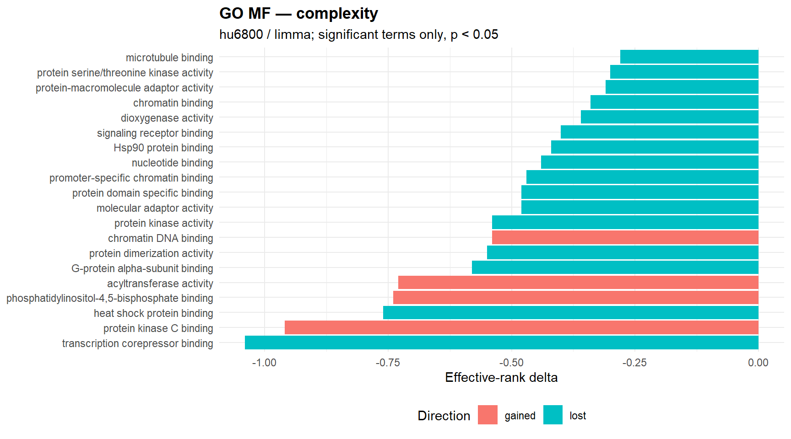
20.0.12.3.52 Entropy signal plot
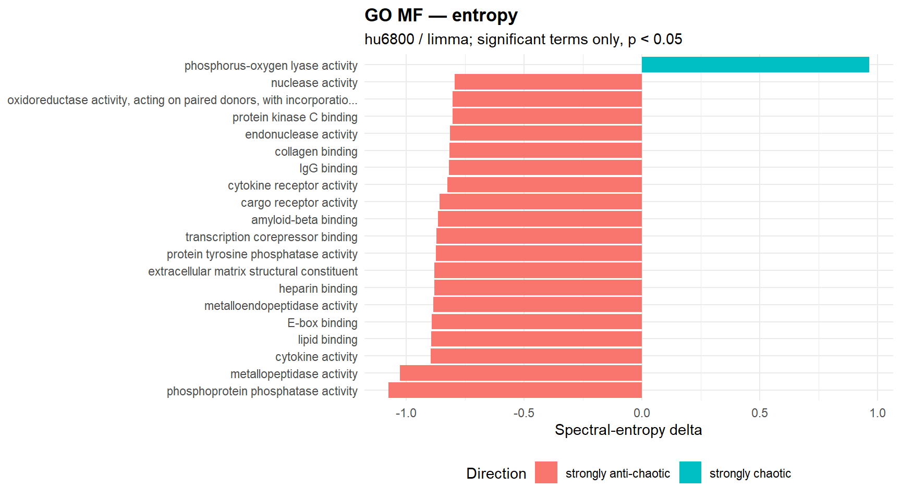
20.0.12.3.53 Significant complexity terms
| gene_set | semantic_block | n_shared_probes | effrank Δ | kappa Δ | direction | p_perm | status |
|---|---|---|---|---|---|---|---|
| transcription corepressor binding | transcription factor binding | 11 | -1.040 | -594.940 | lost | <0.001 | ok |
| phosphatidylinositol-4,5-bisphosphate binding | lipid binding | 5 | -0.740 | 1473.490 | gained | <0.001 | ok |
| protein kinase activity | protein kinase activity | 43 | -0.540 | -84.010 | lost | <0.001 | ok |
| single-stranded RNA binding | RNA binding | 7 | -0.160 | 619410.320 | gained | <0.001 | ok |
| protein dimerization activity | protein binding | 12 | -0.550 | -493.950 | lost | 0.010 | ok |
| Hsp90 protein binding | protein binding | 5 | -0.420 | -329.330 | lost | 0.010 | ok |
| signaling receptor binding | signaling receptor binding | 46 | -0.400 | -79.960 | lost | 0.010 | ok |
| microtubule binding | cytoskeletal protein binding | 14 | -0.280 | -467.170 | lost | 0.010 | ok |
| RNA polymerase II core promoter sequence-specific DNA binding | DNA binding | 8 | -0.260 | -3687.040 | lost | 0.010 | ok |
| enzyme activator activity | enzyme regulator activity | 8 | -0.220 | 3399.430 | gained | 0.010 | ok |
| heat shock protein binding | protein binding | 8 | -0.760 | -2776.130 | lost | 0.020 | ok |
| promoter-specific chromatin binding | binding | 18 | -0.470 | -157.770 | lost | 0.020 | ok |
| nucleotide binding | heterocyclic compound binding | 151 | -0.440 | -42.370 | lost | 0.020 | ok |
| chromatin binding | binding | 56 | -0.340 | -62.730 | lost | 0.020 | ok |
| protein-macromolecule adaptor activity | protein-macromolecule adaptor activity | 15 | -0.310 | -115.350 | lost | 0.020 | ok |
| protein kinase inhibitor activity | enzyme regulator activity | 5 | 0.010 | -296.410 | lost | 0.020 | ok |
| acyltransferase activity | acyltransferase activity | 8 | -0.730 | 2506.620 | gained | 0.030 | ok |
| G-protein alpha-subunit binding | protein binding | 6 | -0.580 | -2600.260 | lost | 0.030 | ok |
| protein domain specific binding | protein binding | 40 | -0.480 | -36.650 | lost | 0.030 | ok |
| protein serine/threonine kinase activity | protein serine/threonine kinase activity | 30 | -0.300 | -85.920 | lost | 0.030 | ok |
20.0.12.3.54 Significant entropy terms
| gene_set | semantic_block | n_shared_probes | spectral Δ | shannon Δ | spectral_direction | p_perm_spectral | p_perm_shannon | status |
|---|---|---|---|---|---|---|---|---|
| phosphorus-oxygen lyase activity | catalytic activity | 5 | 0.965 | 0.010 | strongly chaotic | <0.001 | NA | ok |
| lipid binding | lipid binding | 18 | -0.895 | -0.012 | strongly anti-chaotic | <0.001 | NA | ok |
| E-box binding | DNA binding | 8 | -0.893 | 0.002 | strongly anti-chaotic | <0.001 | NA | ok |
| heparin binding | carbohydrate derivative binding | 8 | -0.882 | -0.005 | strongly anti-chaotic | <0.001 | NA | ok |
| cargo receptor activity | molecular_function | 5 | -0.858 | 0.018 | strongly anti-chaotic | <0.001 | NA | ok |
| IgG binding | protein-containing complex binding | 5 | -0.819 | 0.015 | strongly anti-chaotic | <0.001 | NA | ok |
| nuclease activity | catalytic activity | 6 | -0.795 | -0.011 | strongly anti-chaotic | <0.001 | NA | ok |
| DNA-binding transcription repressor activity, RNA polymerase II-specific | molecular_function | 16 | -0.760 | -0.001 | strongly anti-chaotic | <0.001 | NA | ok |
| calcium-dependent protein binding | protein binding | 10 | -0.753 | 0.010 | strongly anti-chaotic | <0.001 | NA | ok |
| cis-regulatory region sequence-specific DNA binding | DNA binding | 10 | -0.738 | 0.005 | strongly anti-chaotic | <0.001 | NA | ok |
| sequence-specific mRNA binding | RNA binding | 5 | -0.722 | 0.001 | strongly anti-chaotic | <0.001 | NA | ok |
| ion channel inhibitor activity | molecular function regulator activity | 6 | -0.676 | -0.014 | strongly anti-chaotic | <0.001 | NA | ok |
| DNA-binding transcription factor activity | molecular_function | 43 | -0.601 | 0.003 | strongly anti-chaotic | <0.001 | NA | ok |
| DNA-binding transcription activator activity, RNA polymerase II-specific | molecular_function | 31 | -0.582 | 0.001 | strongly anti-chaotic | <0.001 | NA | ok |
| MHC class II receptor activity | transmembrane signaling receptor activity | 9 | -0.390 | -0.003 | mildly anti-chaotic | <0.001 | NA | ok |
| GDP binding | carbohydrate derivative binding | 9 | -0.202 | 0.010 | mildly anti-chaotic | <0.001 | NA | ok |
| phosphoprotein phosphatase activity | phosphoric ester hydrolase activity | 9 | -1.075 | -0.004 | strongly anti-chaotic | 0.010 | NA | ok |
| cytokine activity | molecular function regulator activity | 11 | -0.897 | 0.014 | strongly anti-chaotic | 0.010 | NA | ok |
| amyloid-beta binding | binding | 10 | -0.866 | 0.010 | strongly anti-chaotic | 0.010 | NA | ok |
| cytokine receptor activity | transmembrane signaling receptor activity | 6 | -0.826 | 0.005 | strongly anti-chaotic | 0.010 | NA | ok |
20.0.12.3.55 Terms significant in both engines
| gene_set | semantic_block | n_shared_probes | complexity_effrank Δ | complexity_direction | complexity_p_perm | entropy_spectral Δ | entropy_spectral_direction | entropy_p_perm_spectral | joint_rank_score |
|---|---|---|---|---|---|---|---|---|---|
| phosphatidylinositol-4,5-bisphosphate binding | lipid binding | 5 | -0.740 | gained | <0.001 | -0.764 | strongly anti-chaotic | 0.010 | 309.653 |
| transcription corepressor binding | transcription factor binding | 11 | -1.040 | lost | <0.001 | -0.872 | strongly anti-chaotic | 0.020 | 309.352 |
| protein kinase activity | protein kinase activity | 43 | -0.540 | lost | <0.001 | -0.468 | mildly anti-chaotic | 0.030 | 309.176 |
| Hsp90 protein binding | protein binding | 5 | -0.420 | lost | 0.010 | -0.461 | mildly anti-chaotic | 0.010 | 4.000 |
| signaling receptor binding | signaling receptor binding | 46 | -0.400 | lost | 0.010 | -0.378 | mildly anti-chaotic | 0.020 | 3.699 |
| protein dimerization activity | protein binding | 12 | -0.550 | lost | 0.010 | -0.562 | strongly anti-chaotic | 0.020 | 3.699 |
| G-protein alpha-subunit binding | protein binding | 6 | -0.580 | lost | 0.030 | -0.461 | mildly anti-chaotic | 0.010 | 3.523 |
| nucleotide binding | heterocyclic compound binding | 151 | -0.440 | lost | 0.020 | -0.400 | mildly anti-chaotic | 0.020 | 3.398 |
| dioxygenase activity | oxidoreductase activity | 5 | -0.360 | lost | 0.040 | -0.354 | mildly anti-chaotic | 0.010 | 3.398 |
| promoter-specific chromatin binding | binding | 18 | -0.470 | lost | 0.020 | -0.447 | mildly anti-chaotic | 0.020 | 3.398 |
| protein domain specific binding | protein binding | 40 | -0.480 | lost | 0.030 | -0.451 | mildly anti-chaotic | 0.020 | 3.222 |
| heat shock protein binding | protein binding | 8 | -0.760 | lost | 0.020 | -0.637 | strongly anti-chaotic | 0.030 | 3.222 |
| protein kinase C binding | enzyme binding | 8 | -0.960 | gained | 0.040 | -0.804 | strongly anti-chaotic | 0.020 | 3.097 |
| acyltransferase activity | acyltransferase activity | 8 | -0.730 | gained | 0.030 | -0.620 | strongly anti-chaotic | 0.030 | 3.046 |
| molecular adaptor activity | molecular adaptor activity | 20 | -0.480 | lost | 0.040 | -0.466 | mildly anti-chaotic | 0.030 | 2.921 |
20.0.12.3.56 GO semantic clusters
| semantic_cluster_id | semantic_block_name | n_rows | n_terms | n_sig_complexity | n_sig_entropy_spectral | mean_shared_probes |
|---|---|---|---|---|---|---|
| MF_GO_0003677_3 | DNA binding | 10 | 5 | 1 | 3 | 14.000 |
| MF_GO_0019899_3 | enzyme binding | 8 | 4 | 1 | 3 | 22.000 |
| MF_GO_0005515_28 | protein binding | 4 | 2 | 2 | 2 | 6.500 |
| MF_GO_0098772_3 | molecular function regulator activity | 10 | 5 | 0 | 3 | 10.000 |
| MF_GO_0003723_1 | RNA binding | 6 | 3 | 0 | 3 | 63.000 |
| MF_GO_0008134_2 | transcription factor binding | 6 | 3 | 1 | 2 | 11.333 |
| MF_GO_0043169_1 | cation binding | 6 | 3 | 0 | 3 | 74.667 |
| MF_GO_1901363_1 | heterocyclic compound binding | 6 | 3 | 1 | 2 | 53.667 |
| MF_GO_0005488_2 | binding | 4 | 2 | 2 | 1 | 37.000 |
| MF_GO_0005515_17 | protein binding | 4 | 2 | 1 | 2 | 27.000 |
| MF_GO_0005515_61 | protein binding | 4 | 2 | 1 | 2 | 23.500 |
| MF_GO_0003677_5 | DNA binding | 6 | 3 | 0 | 2 | 59.333 |
| MF_GO_0004672_1 | protein kinase activity | 6 | 3 | 1 | 1 | 22.000 |
| MF_GO_0030674_1 | protein-macromolecule adaptor activity | 6 | 3 | 0 | 2 | 17.333 |
| MF_GO_0042578_7 | phosphoric ester hydrolase activity | 6 | 3 | 0 | 2 | 6.667 |
| MF_GO_0003677_4 | DNA binding | 4 | 2 | 0 | 2 | 32.000 |
| MF_GO_0003824_13 | catalytic activity | 4 | 2 | 0 | 2 | 5.500 |
| MF_GO_0003824_20 | catalytic activity | 4 | 2 | 0 | 2 | 10.000 |
| MF_GO_0005515_44 | protein binding | 4 | 2 | 0 | 2 | 119.500 |
| MF_GO_0005515_55 | protein binding | 4 | 2 | 0 | 2 | 28.500 |
Context summary
| engine | n_rows | n_gene_sets | n_significant_complexity | n_significant_entropy_spectral | median_shared_probes |
|---|---|---|---|---|---|
| complexity | 52 | 52 | 4 | 0 | 18.000 |
| entropy | 52 | 52 | 0 | 29 | 18.000 |
20.0.12.3.57 Complexity signal plot
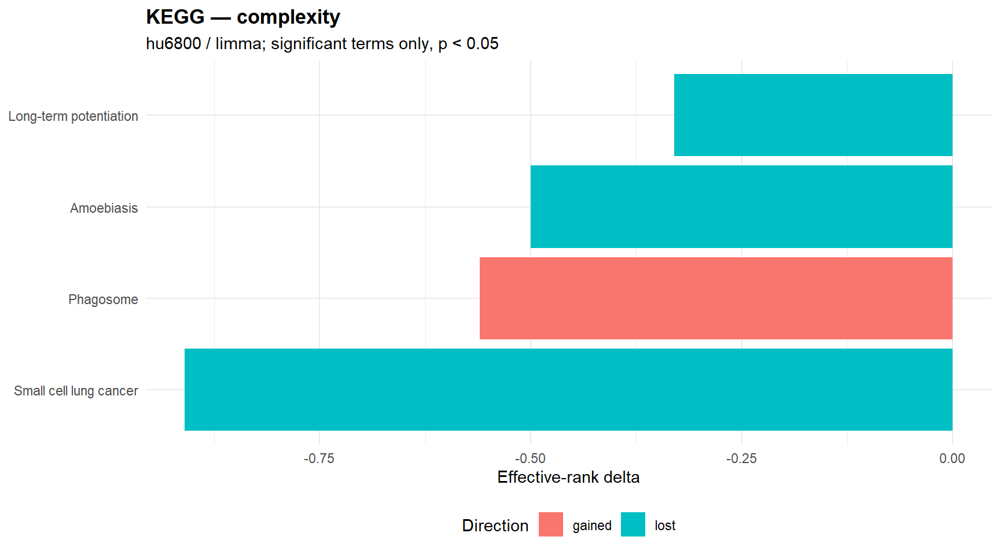
20.0.12.3.58 Entropy signal plot
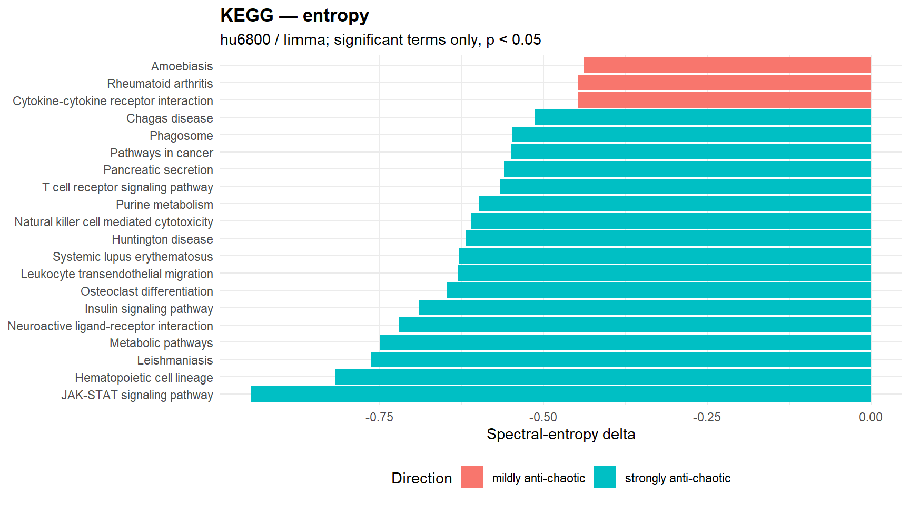
20.0.12.3.59 Significant complexity terms
| gene_set | semantic_block | n_shared_probes | effrank Δ | kappa Δ | direction | p_perm | status |
|---|---|---|---|---|---|---|---|
| Amoebiasis | NA | 15 | -0.500 | -203.230 | lost | 0.010 | ok |
| Small cell lung cancer | NA | 11 | -0.910 | -400.250 | lost | 0.030 | ok |
| Long-term potentiation | NA | 14 | -0.330 | -283.280 | lost | 0.030 | ok |
| Phagosome | NA | 47 | -0.560 | 55.660 | gained | 0.040 | ok |
20.0.12.3.60 Significant entropy terms
| gene_set | semantic_block | n_shared_probes | spectral Δ | shannon Δ | spectral_direction | p_perm_spectral | p_perm_shannon | status |
|---|---|---|---|---|---|---|---|---|
| JAK-STAT signaling pathway | NA | 17 | -0.946 | 0.001 | strongly anti-chaotic | <0.001 | NA | ok |
| Amoebiasis | NA | 15 | -0.438 | 0.005 | mildly anti-chaotic | <0.001 | NA | ok |
| Leishmaniasis | NA | 33 | -0.764 | 0.008 | strongly anti-chaotic | 0.010 | NA | ok |
| Neuroactive ligand-receptor interaction | NA | 11 | -0.721 | 0.009 | strongly anti-chaotic | 0.010 | NA | ok |
| Osteoclast differentiation | NA | 31 | -0.648 | 0.007 | strongly anti-chaotic | 0.010 | NA | ok |
| Leukocyte transendothelial migration | NA | 29 | -0.630 | -0.006 | strongly anti-chaotic | 0.010 | NA | ok |
| Huntington disease | NA | 12 | -0.619 | 0.003 | strongly anti-chaotic | 0.010 | NA | ok |
| Purine metabolism | NA | 19 | -0.599 | -0.002 | strongly anti-chaotic | 0.010 | NA | ok |
| Pathways in cancer | NA | 48 | -0.550 | 0.009 | strongly anti-chaotic | 0.010 | NA | ok |
| Phagosome | NA | 47 | -0.548 | 0.001 | strongly anti-chaotic | 0.010 | NA | ok |
| Chagas disease | NA | 22 | -0.513 | 0.000 | strongly anti-chaotic | 0.010 | NA | ok |
| Cytokine-cytokine receptor interaction | NA | 22 | -0.447 | 0.014 | mildly anti-chaotic | 0.010 | NA | ok |
| Rheumatoid arthritis | NA | 25 | -0.447 | 0.009 | mildly anti-chaotic | 0.010 | NA | ok |
| Cell adhesion molecule (CAM) interaction | NA | 28 | -0.430 | 0.003 | mildly anti-chaotic | 0.010 | NA | ok |
| Hematopoietic cell lineage | NA | 23 | -0.818 | -0.005 | strongly anti-chaotic | 0.020 | NA | ok |
| Metabolic pathways | NA | 92 | -0.750 | 0.001 | strongly anti-chaotic | 0.020 | NA | ok |
| Insulin signaling pathway | NA | 13 | -0.690 | -0.001 | strongly anti-chaotic | 0.020 | NA | ok |
| Systemic lupus erythematosus | NA | 21 | -0.629 | 0.005 | strongly anti-chaotic | 0.020 | NA | ok |
| Natural killer cell mediated cytotoxicity | NA | 23 | -0.611 | 0.004 | strongly anti-chaotic | 0.020 | NA | ok |
| T cell receptor signaling pathway | NA | 18 | -0.566 | -0.007 | strongly anti-chaotic | 0.020 | NA | ok |
20.0.12.3.61 Terms significant in both engines
| gene_set | semantic_block | n_shared_probes | complexity_effrank Δ | complexity_direction | complexity_p_perm | entropy_spectral Δ | entropy_spectral_direction | entropy_p_perm_spectral | joint_rank_score |
|---|---|---|---|---|---|---|---|---|---|
| Amoebiasis | NA | 15 | -0.500 | lost | 0.010 | -0.438 | mildly anti-chaotic | <0.001 | 309.653 |
| Phagosome | NA | 47 | -0.560 | gained | 0.040 | -0.548 | strongly anti-chaotic | 0.010 | 3.398 |
Context summary
| engine | n_rows | n_gene_sets | n_significant_complexity | n_significant_entropy_spectral | median_shared_probes |
|---|---|---|---|---|---|
| complexity | 13 | 13 | 0 | 0 | 36.000 |
| entropy | 13 | 13 | 0 | 11 | 36.000 |
20.0.12.3.62 Complexity signal plot
No significant complexity terms available for plotting.
20.0.12.3.63 Entropy signal plot
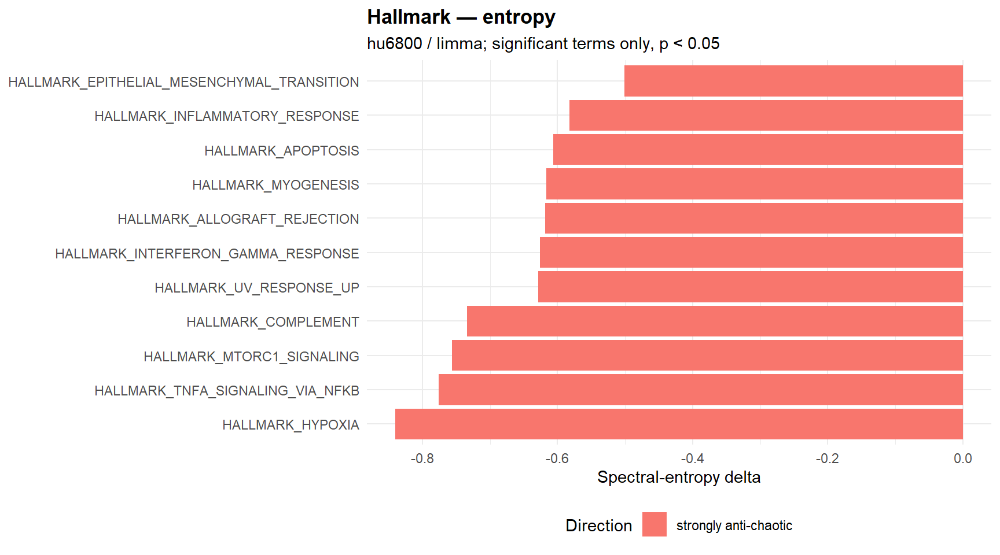
20.0.12.3.64 Significant complexity terms
No significant warehouse rows available for this section.
20.0.12.3.65 Significant entropy terms
| gene_set | semantic_block | n_shared_probes | spectral Δ | shannon Δ | spectral_direction | p_perm_spectral | p_perm_shannon | status |
|---|---|---|---|---|---|---|---|---|
| HALLMARK_HYPOXIA | NA | 18 | -0.840 | -0.005 | strongly anti-chaotic | <0.001 | NA | ok |
| HALLMARK_TNFA_SIGNALING_VIA_NFKB | NA | 41 | -0.776 | 0.015 | strongly anti-chaotic | 0.010 | NA | ok |
| HALLMARK_UV_RESPONSE_UP | NA | 32 | -0.629 | 0.004 | strongly anti-chaotic | 0.010 | NA | ok |
| HALLMARK_INTERFERON_GAMMA_RESPONSE | NA | 38 | -0.626 | 0.008 | strongly anti-chaotic | 0.010 | NA | ok |
| HALLMARK_ALLOGRAFT_REJECTION | NA | 56 | -0.618 | 0.001 | strongly anti-chaotic | 0.010 | NA | ok |
| HALLMARK_MYOGENESIS | NA | 26 | -0.617 | 0.007 | strongly anti-chaotic | 0.010 | NA | ok |
| HALLMARK_INFLAMMATORY_RESPONSE | NA | 36 | -0.582 | 0.009 | strongly anti-chaotic | 0.010 | NA | ok |
| HALLMARK_EPITHELIAL_MESENCHYMAL_TRANSITION | NA | 18 | -0.501 | 0.010 | strongly anti-chaotic | 0.010 | NA | ok |
| HALLMARK_MTORC1_SIGNALING | NA | 37 | -0.756 | 0.003 | strongly anti-chaotic | 0.020 | NA | ok |
| HALLMARK_APOPTOSIS | NA | 40 | -0.606 | 0.006 | strongly anti-chaotic | 0.020 | NA | ok |
| HALLMARK_COMPLEMENT | NA | 32 | -0.734 | 0.001 | strongly anti-chaotic | 0.040 | NA | ok |
20.0.12.3.66 Terms significant in both engines
No significant warehouse rows available for this section.
Context summary
| engine | n_rows | n_gene_sets | n_significant_complexity | n_significant_entropy_spectral | median_shared_probes |
|---|---|---|---|---|---|
| complexity | 1508 | 1508 | 87 | 0 | 9.000 |
| entropy | 1508 | 1508 | 0 | 339 | 9.000 |
20.0.12.3.67 Complexity signal plot
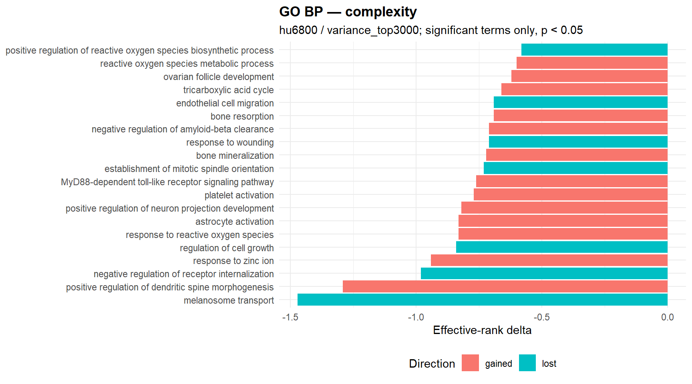
20.0.12.3.68 Entropy signal plot
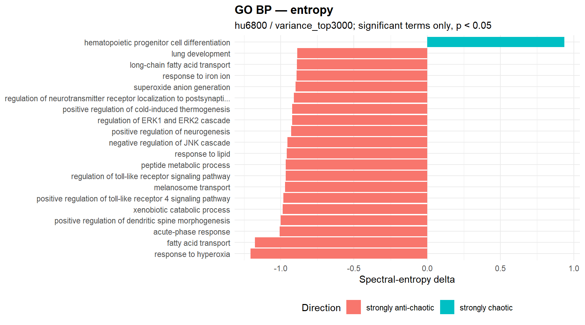
20.0.12.3.69 Significant complexity terms
| gene_set | semantic_block | n_shared_probes | effrank Δ | kappa Δ | direction | p_perm | status |
|---|---|---|---|---|---|---|---|
| positive regulation of dendritic spine morphogenesis | positive regulation of cell development | 5 | -1.290 | 557.780 | gained | <0.001 | ok |
| negative regulation of amyloid-beta clearance | negative regulation of multicellular organismal process | 5 | -0.710 | 270.820 | gained | <0.001 | ok |
| bone resorption | multicellular organismal-level homeostasis | 5 | -0.690 | 756.760 | gained | <0.001 | ok |
| positive regulation of reactive oxygen species biosynthetic process | positive regulation of biosynthetic process | 7 | -0.580 | -165311.390 | lost | <0.001 | ok |
| negative regulation of natural killer cell mediated cytotoxicity | lymphocyte mediated immunity | 7 | -0.520 | 65568.580 | gained | <0.001 | ok |
| regulation of chemotaxis | chemotaxis | 7 | -0.340 | 51192.770 | gained | <0.001 | ok |
| positive regulation of immune response | positive regulation of immune response | 19 | -0.260 | -154.470 | lost | <0.001 | ok |
| regulation of focal adhesion assembly | cell junction assembly | 7 | -0.120 | 1221178.230 | gained | <0.001 | ok |
| negative regulation of platelet activation | negative regulation of response to external stimulus | 5 | -0.110 | -1412.170 | lost | <0.001 | ok |
| regulation of cytosolic calcium ion concentration | monoatomic cation homeostasis | 8 | -0.100 | 27330.860 | gained | <0.001 | ok |
| regulation of vascular permeability | blood circulation | 5 | 0.070 | -1477.490 | lost | <0.001 | ok |
| melanosome transport | establishment of organelle localization | 6 | -1.470 | -746.680 | lost | 0.010 | ok |
| response to zinc ion | response to chemical | 8 | -0.940 | 1580.770 | gained | 0.010 | ok |
| platelet activation | regulation of body fluid levels | 17 | -0.770 | 94.470 | gained | 0.010 | ok |
| establishment of mitotic spindle orientation | establishment of organelle localization | 7 | -0.730 | -22553.620 | lost | 0.010 | ok |
| response to wounding | response to wounding | 14 | -0.710 | -137.790 | lost | 0.010 | ok |
| ovarian follicle development | reproductive process | 7 | -0.620 | 172242.570 | gained | 0.010 | ok |
| reactive oxygen species metabolic process | biological_process | 6 | -0.600 | 4007.850 | gained | 0.010 | ok |
| granzyme-mediated programmed cell death signaling pathway | programmed cell death | 7 | -0.520 | -27817.770 | lost | 0.010 | ok |
| positive regulation of T cell receptor signaling pathway | immune response-activating signaling pathway | 5 | -0.410 | 298.430 | gained | 0.010 | ok |
20.0.12.3.70 Significant entropy terms
| gene_set | semantic_block | n_shared_probes | spectral Δ | shannon Δ | spectral_direction | p_perm_spectral | p_perm_shannon | status |
|---|---|---|---|---|---|---|---|---|
| regulation of toll-like receptor signaling pathway | positive regulation of innate immune response | 7 | -0.966 | 0.011 | strongly anti-chaotic | <0.001 | NA | ok |
| negative regulation of JNK cascade | negative regulation of intracellular signal transduction | 7 | -0.953 | -0.003 | strongly anti-chaotic | <0.001 | NA | ok |
| regulation of neurotransmitter receptor localization to postsynaptic specialization membrane | regulation of cellular localization | 8 | -0.910 | -0.003 | strongly anti-chaotic | <0.001 | NA | ok |
| lung development | tube development | 7 | -0.886 | 0.000 | strongly anti-chaotic | <0.001 | NA | ok |
| microglial cell activation | inflammatory response | 10 | -0.884 | 0.008 | strongly anti-chaotic | <0.001 | NA | ok |
| regulation of interferon-gamma production | regulation of cytokine production | 5 | -0.883 | -0.001 | strongly anti-chaotic | <0.001 | NA | ok |
| response to muscle activity | biological_process | 7 | -0.875 | -0.001 | strongly anti-chaotic | <0.001 | NA | ok |
| glutamate metabolic process | carboxylic acid metabolic process | 5 | -0.850 | -0.002 | strongly anti-chaotic | <0.001 | NA | ok |
| neural tube development | embryo development | 5 | -0.813 | 0.002 | strongly anti-chaotic | <0.001 | NA | ok |
| cellular response to ethanol | cellular response to oxygen-containing compound | 10 | -0.804 | -0.009 | strongly anti-chaotic | <0.001 | NA | ok |
| endocrine pancreas development | animal organ development | 5 | -0.789 | -0.003 | strongly anti-chaotic | <0.001 | NA | ok |
| regulation of tumor necrosis factor production | regulation of cytokine production | 7 | -0.786 | -0.002 | strongly anti-chaotic | <0.001 | NA | ok |
| response to manganese ion | response to chemical | 7 | -0.758 | 0.013 | strongly anti-chaotic | <0.001 | NA | ok |
| signaling | signaling | 8 | -0.757 | 0.006 | strongly anti-chaotic | <0.001 | NA | ok |
| forebrain development | central nervous system development | 9 | -0.737 | -0.007 | strongly anti-chaotic | <0.001 | NA | ok |
| positive regulation of protein kinase activity | regulation of catalytic activity | 10 | -0.716 | 0.002 | strongly anti-chaotic | <0.001 | NA | ok |
| release of cytochrome c from mitochondria | mitochondrion organization | 9 | -0.667 | 0.012 | strongly anti-chaotic | <0.001 | NA | ok |
| positive regulation of monocyte chemotaxis | leukocyte migration | 8 | -0.642 | -0.004 | strongly anti-chaotic | <0.001 | NA | ok |
| calcium-mediated signaling | intracellular signal transduction | 21 | -0.640 | 0.006 | strongly anti-chaotic | <0.001 | NA | ok |
| leukocyte migration involved in inflammatory response | leukocyte migration | 9 | -0.634 | 0.009 | strongly anti-chaotic | <0.001 | NA | ok |
20.0.12.3.71 Terms significant in both engines
| gene_set | semantic_block | n_shared_probes | complexity_effrank Δ | complexity_direction | complexity_p_perm | entropy_spectral Δ | entropy_spectral_direction | entropy_p_perm_spectral | joint_rank_score |
|---|---|---|---|---|---|---|---|---|---|
| granzyme-mediated programmed cell death signaling pathway | programmed cell death | 7 | -0.520 | lost | 0.010 | -0.446 | mildly anti-chaotic | <0.001 | 309.653 |
| positive regulation of dendritic spine morphogenesis | positive regulation of cell development | 5 | -1.290 | gained | <0.001 | -0.999 | strongly anti-chaotic | 0.020 | 309.352 |
| bone resorption | multicellular organismal-level homeostasis | 5 | -0.690 | gained | <0.001 | -0.535 | strongly anti-chaotic | 0.030 | 309.176 |
| negative regulation of natural killer cell mediated cytotoxicity | lymphocyte mediated immunity | 7 | -0.520 | gained | <0.001 | -0.522 | strongly anti-chaotic | 0.030 | 309.176 |
| regulation of androgen receptor signaling pathway | intracellular receptor signaling pathway | 5 | -0.550 | lost | 0.030 | -0.525 | strongly anti-chaotic | <0.001 | 309.176 |
| positive regulation of chemotaxis | chemotaxis | 9 | -0.390 | gained | 0.040 | -0.402 | mildly anti-chaotic | <0.001 | 309.051 |
| positive regulation of immune response | positive regulation of immune response | 19 | -0.260 | lost | <0.001 | -0.262 | mildly anti-chaotic | 0.040 | 309.051 |
| response to zinc ion | response to chemical | 8 | -0.940 | gained | 0.010 | -0.677 | strongly anti-chaotic | 0.010 | 4.000 |
| establishment of mitotic spindle orientation | establishment of organelle localization | 7 | -0.730 | lost | 0.010 | -0.628 | strongly anti-chaotic | 0.020 | 3.699 |
| melanosome transport | establishment of organelle localization | 6 | -1.470 | lost | 0.010 | -0.969 | strongly anti-chaotic | 0.020 | 3.699 |
| response to wounding | response to wounding | 14 | -0.710 | lost | 0.010 | -0.585 | strongly anti-chaotic | 0.030 | 3.523 |
| positive regulation of epithelial cell migration | positive regulation of cell migration | 7 | -0.570 | lost | 0.040 | -0.549 | strongly anti-chaotic | 0.010 | 3.398 |
| response to reactive oxygen species | response to oxygen-containing compound | 6 | -0.830 | gained | 0.030 | -0.781 | strongly anti-chaotic | 0.020 | 3.222 |
| MyD88-dependent toll-like receptor signaling pathway | positive regulation of innate immune response | 5 | -0.760 | gained | 0.020 | -0.637 | strongly anti-chaotic | 0.030 | 3.222 |
| tricarboxylic acid cycle | energy derivation by oxidation of organic compounds | 11 | -0.660 | gained | 0.030 | -0.588 | strongly anti-chaotic | 0.020 | 3.222 |
| sphingolipid metabolic process | lipid metabolic process | 6 | -0.190 | gained | 0.020 | -0.235 | mildly anti-chaotic | 0.030 | 3.222 |
| intrinsic apoptotic signaling pathway in response to DNA damage | apoptotic signaling pathway | 15 | -0.410 | lost | 0.030 | -0.346 | mildly anti-chaotic | 0.020 | 3.222 |
| positive regulation of apoptotic process | regulation of apoptotic process | 78 | -0.510 | lost | 0.020 | -0.420 | mildly anti-chaotic | 0.030 | 3.222 |
| endothelial cell migration | cell migration | 14 | -0.690 | lost | 0.030 | -0.540 | strongly anti-chaotic | 0.020 | 3.222 |
| positive regulation of neuron projection development | regulation of plasma membrane bounded cell projection organization | 25 | -0.820 | gained | 0.040 | -0.614 | strongly anti-chaotic | 0.020 | 3.097 |
20.0.12.3.72 GO semantic clusters
| semantic_cluster_id | semantic_block_name | n_rows | n_terms | n_sig_complexity | n_sig_entropy_spectral | mean_shared_probes |
|---|---|---|---|---|---|---|
| BP_GO_0001819_1 | positive regulation of cytokine production | 24 | 12 | 0 | 5 | 17.000 |
| BP_GO_0019221_4 | cytokine-mediated signaling pathway | 20 | 10 | 0 | 5 | 12.000 |
| BP_GO_0007169_1 | cell surface receptor protein tyrosine kinase signaling pathway | 10 | 5 | 2 | 2 | 13.600 |
| BP_GO_0042221_5 | response to chemical | 8 | 4 | 1 | 3 | 7.250 |
| BP_GO_0007166_1 | cell surface receptor signaling pathway | 12 | 6 | 0 | 3 | 30.000 |
| BP_GO_1902531_1 | regulation of intracellular signal transduction | 12 | 6 | 0 | 3 | 7.833 |
| BP_GO_0007417_2 | central nervous system development | 10 | 5 | 1 | 2 | 12.400 |
| BP_GO_0030163_2 | protein catabolic process | 10 | 5 | 0 | 3 | 31.600 |
| BP_GO_0050804_1 | modulation of chemical synaptic transmission | 10 | 5 | 1 | 2 | 11.400 |
| BP_GO_0030335_1 | positive regulation of cell migration | 8 | 4 | 1 | 2 | 12.750 |
| BP_GO_0071345_1 | cellular response to cytokine stimulus | 8 | 4 | 0 | 3 | 14.250 |
| BP_GO_0006631_1 | fatty acid metabolic process | 6 | 3 | 0 | 3 | 19.000 |
| BP_GO_0030036_1 | actin cytoskeleton organization | 6 | 3 | 0 | 3 | 16.667 |
| BP_GO_0048514_1 | blood vessel morphogenesis | 6 | 3 | 0 | 3 | 25.333 |
| BP_GO_0060627_2 | regulation of vesicle-mediated transport | 6 | 3 | 0 | 3 | 8.000 |
| BP_biological_process_11 | biological_process | 6 | 3 | 1 | 2 | 7.667 |
| BP_GO_0002449_14 | lymphocyte mediated immunity | 4 | 2 | 1 | 2 | 6.500 |
| BP_GO_0006935_3 | chemotaxis | 4 | 2 | 2 | 1 | 8.000 |
| BP_GO_1901700_1 | response to oxygen-containing compound | 4 | 2 | 1 | 2 | 11.500 |
| BP_GO_0007186_2 | G protein-coupled receptor signaling pathway | 14 | 7 | 0 | 2 | 30.857 |
Context summary
| engine | n_rows | n_gene_sets | n_significant_complexity | n_significant_entropy_spectral | median_shared_probes |
|---|---|---|---|---|---|
| complexity | 524 | 524 | 22 | 0 | 10.000 |
| entropy | 524 | 524 | 0 | 101 | 10.000 |
20.0.12.3.73 Complexity signal plot
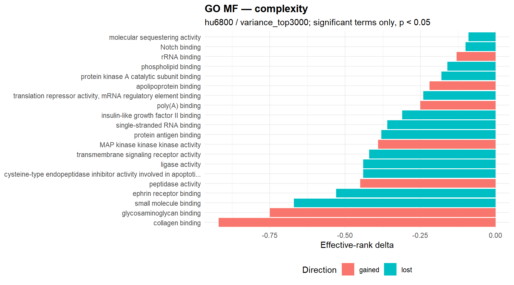
20.0.12.3.74 Entropy signal plot
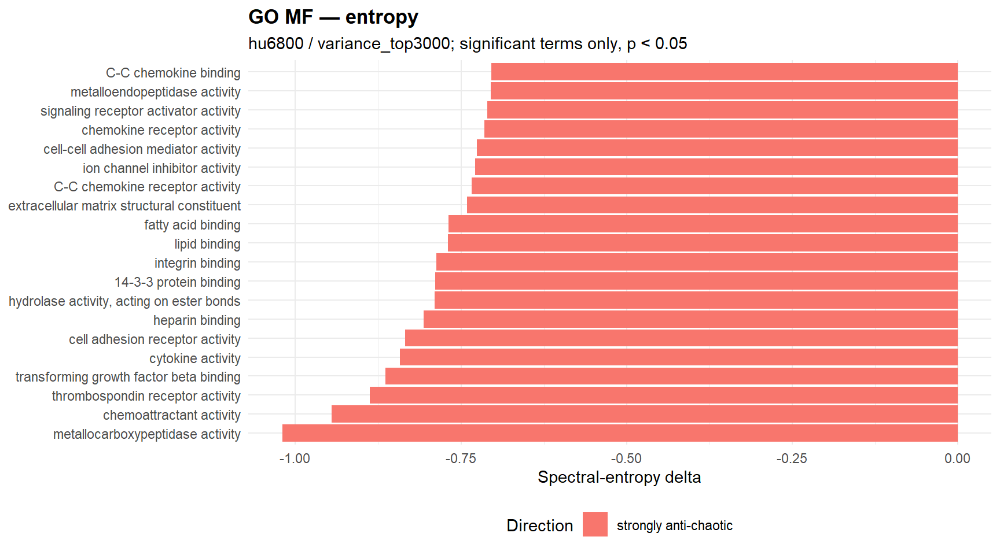
20.0.12.3.75 Significant complexity terms
| gene_set | semantic_block | n_shared_probes | effrank Δ | kappa Δ | direction | p_perm | status |
|---|---|---|---|---|---|---|---|
| small molecule binding | small molecule binding | 8 | -0.670 | -7422.340 | lost | <0.001 | ok |
| MAP kinase kinase kinase activity | protein serine/threonine kinase activity | 5 | -0.390 | 895.200 | gained | <0.001 | ok |
| translation repressor activity, mRNA regulatory element binding | molecular_function | 10 | -0.240 | -710.390 | lost | <0.001 | ok |
| apolipoprotein binding | protein binding | 5 | -0.220 | 1271.560 | gained | <0.001 | ok |
| phospholipid binding | lipid binding | 18 | -0.160 | -207.990 | lost | <0.001 | ok |
| translation factor activity, RNA binding | molecular_function | 10 | -0.050 | -1171.730 | lost | <0.001 | ok |
| small protein activating enzyme binding | enzyme binding | 5 | -0.040 | -2903.610 | lost | <0.001 | ok |
| ephrin receptor binding | signaling receptor binding | 9 | -0.530 | -1825.440 | lost | 0.010 | ok |
| transmembrane signaling receptor activity | transmembrane signaling receptor activity | 54 | -0.420 | -72.900 | lost | 0.010 | ok |
| peptidase activity | peptidase activity | 77 | -0.450 | 36.690 | gained | 0.020 | ok |
| ligase activity | catalytic activity | 36 | -0.440 | -87.520 | lost | 0.020 | ok |
| single-stranded RNA binding | RNA binding | 12 | -0.360 | -237.410 | lost | 0.020 | ok |
| molecular sequestering activity | molecular_function | 5 | -0.090 | -476.910 | lost | 0.020 | ok |
| glycosaminoglycan binding | carbohydrate derivative binding | 7 | -0.750 | 17748.300 | gained | 0.030 | ok |
| protein antigen binding | protein binding | 5 | -0.380 | -309.250 | lost | 0.030 | ok |
| insulin-like growth factor II binding | protein binding | 6 | -0.310 | -1458.240 | lost | 0.030 | ok |
| protein kinase A catalytic subunit binding | enzyme binding | 7 | -0.180 | -24733.560 | lost | 0.030 | ok |
| rRNA binding | RNA binding | 13 | -0.130 | 275.800 | gained | 0.030 | ok |
| collagen binding | protein-containing complex binding | 18 | -0.920 | 113.720 | gained | 0.040 | ok |
| cysteine-type endopeptidase inhibitor activity involved in apoptotic process | enzyme regulator activity | 6 | -0.440 | -1514.890 | lost | 0.040 | ok |
20.0.12.3.76 Significant entropy terms
| gene_set | semantic_block | n_shared_probes | spectral Δ | shannon Δ | spectral_direction | p_perm_spectral | p_perm_shannon | status |
|---|---|---|---|---|---|---|---|---|
| metallocarboxypeptidase activity | peptidase activity | 7 | -1.020 | 0.000 | strongly anti-chaotic | <0.001 | NA | ok |
| 14-3-3 protein binding | protein binding | 7 | -0.789 | 0.001 | strongly anti-chaotic | <0.001 | NA | ok |
| C-C chemokine receptor activity | transmembrane signaling receptor activity | 8 | -0.734 | 0.006 | strongly anti-chaotic | <0.001 | NA | ok |
| chemokine receptor activity | transmembrane signaling receptor activity | 9 | -0.715 | 0.007 | strongly anti-chaotic | <0.001 | NA | ok |
| C-C chemokine binding | protein binding | 8 | -0.704 | 0.007 | strongly anti-chaotic | <0.001 | NA | ok |
| dystroglycan binding | protein binding | 5 | 0.695 | 0.004 | strongly chaotic | <0.001 | NA | ok |
| cytokine receptor activity | transmembrane signaling receptor activity | 12 | -0.682 | -0.003 | strongly anti-chaotic | <0.001 | NA | ok |
| transition metal ion binding | cation binding | 5 | -0.635 | 0.013 | strongly anti-chaotic | <0.001 | NA | ok |
| CD8 receptor binding | signaling receptor binding | 5 | 0.623 | 0.016 | strongly chaotic | <0.001 | NA | ok |
| ferrous iron binding | cation binding | 5 | -0.590 | 0.017 | strongly anti-chaotic | <0.001 | NA | ok |
| pre-mRNA binding | RNA binding | 9 | -0.504 | -0.010 | strongly anti-chaotic | <0.001 | NA | ok |
| cyclin binding | protein binding | 8 | -0.446 | -0.011 | mildly anti-chaotic | <0.001 | NA | ok |
| lamin binding | protein binding | 7 | 0.435 | 0.007 | mildly chaotic | <0.001 | NA | ok |
| cholesterol transfer activity | transporter activity | 6 | -0.277 | 0.027 | mildly anti-chaotic | <0.001 | NA | ok |
| microtubule motor activity | catalytic activity | 7 | 0.229 | 0.000 | mildly chaotic | <0.001 | NA | ok |
| beta-2-microglobulin binding | protein binding | 6 | -0.162 | 0.001 | mildly anti-chaotic | <0.001 | NA | ok |
| transforming growth factor beta binding | protein binding | 6 | -0.864 | 0.011 | strongly anti-chaotic | 0.010 | NA | ok |
| cytokine activity | molecular function regulator activity | 42 | -0.842 | 0.006 | strongly anti-chaotic | 0.010 | NA | ok |
| ion channel inhibitor activity | molecular function regulator activity | 7 | -0.729 | -0.011 | strongly anti-chaotic | 0.010 | NA | ok |
| cell-cell adhesion mediator activity | protein binding | 8 | -0.726 | 0.001 | strongly anti-chaotic | 0.010 | NA | ok |
20.0.12.3.77 Terms significant in both engines
| gene_set | semantic_block | n_shared_probes | complexity_effrank Δ | complexity_direction | complexity_p_perm | entropy_spectral Δ | entropy_spectral_direction | entropy_p_perm_spectral | joint_rank_score |
|---|---|---|---|---|---|---|---|---|---|
| ephrin receptor binding | signaling receptor binding | 9 | -0.530 | lost | 0.010 | -0.523 | strongly anti-chaotic | 0.020 | 3.699 |
| ligase activity | catalytic activity | 36 | -0.440 | lost | 0.020 | -0.371 | mildly anti-chaotic | 0.040 | 3.097 |
20.0.12.3.78 GO semantic clusters
| semantic_cluster_id | semantic_block_name | n_rows | n_terms | n_sig_complexity | n_sig_entropy_spectral | mean_shared_probes |
|---|---|---|---|---|---|---|
| MF_GO_0042578_7 | phosphoric ester hydrolase activity | 10 | 5 | 0 | 3 | 16.800 |
| MF_GO_0043169_1 | cation binding | 6 | 3 | 0 | 3 | 255.333 |
| MF_GO_0098772_3 | molecular function regulator activity | 12 | 6 | 0 | 2 | 24.333 |
| MF_GO_0019899_3 | enzyme binding | 10 | 5 | 0 | 2 | 41.600 |
| MF_GO_0008092_4 | cytoskeletal protein binding | 8 | 4 | 0 | 2 | 8.500 |
| MF_GO_0008134_2 | transcription factor binding | 8 | 4 | 0 | 2 | 20.500 |
| MF_GO_0016746_7 | acyltransferase activity | 6 | 3 | 0 | 2 | 11.000 |
| MF_GO_0036094_5 | small molecule binding | 6 | 3 | 0 | 2 | 13.667 |
| MF_GO_0003723_3 | RNA binding | 4 | 2 | 2 | 0 | 10.000 |
| MF_GO_0004888_8 | transmembrane signaling receptor activity | 4 | 2 | 0 | 2 | 8.500 |
| MF_GO_0005515_55 | protein binding | 4 | 2 | 0 | 2 | 69.500 |
| MF_GO_0008233_6 | peptidase activity | 4 | 2 | 0 | 2 | 18.500 |
| MF_GO_0036094_3 | small molecule binding | 4 | 2 | 1 | 1 | 10.000 |
| MF_GO_0044877_5 | protein-containing complex binding | 4 | 2 | 1 | 1 | 68.000 |
| MF_GO_0097367_2 | carbohydrate derivative binding | 4 | 2 | 0 | 2 | 52.000 |
| MF_molecular_function_38 | molecular_function | 4 | 2 | 1 | 1 | 14.000 |
| MF_GO_0003824_23 | catalytic activity | 2 | 1 | 1 | 1 | 36.000 |
| MF_GO_0005102_33 | signaling receptor binding | 2 | 1 | 1 | 1 | 9.000 |
| MF_GO_0003723_1 | RNA binding | 14 | 7 | 0 | 1 | 75.143 |
| MF_GO_0030234_5 | enzyme regulator activity | 12 | 6 | 1 | 0 | 14.667 |
Context summary
| engine | n_rows | n_gene_sets | n_significant_complexity | n_significant_entropy_spectral | median_shared_probes |
|---|---|---|---|---|---|
| complexity | 57 | 57 | 3 | 0 | 49.000 |
| entropy | 57 | 57 | 0 | 18 | 49.000 |
20.0.12.3.79 Complexity signal plot
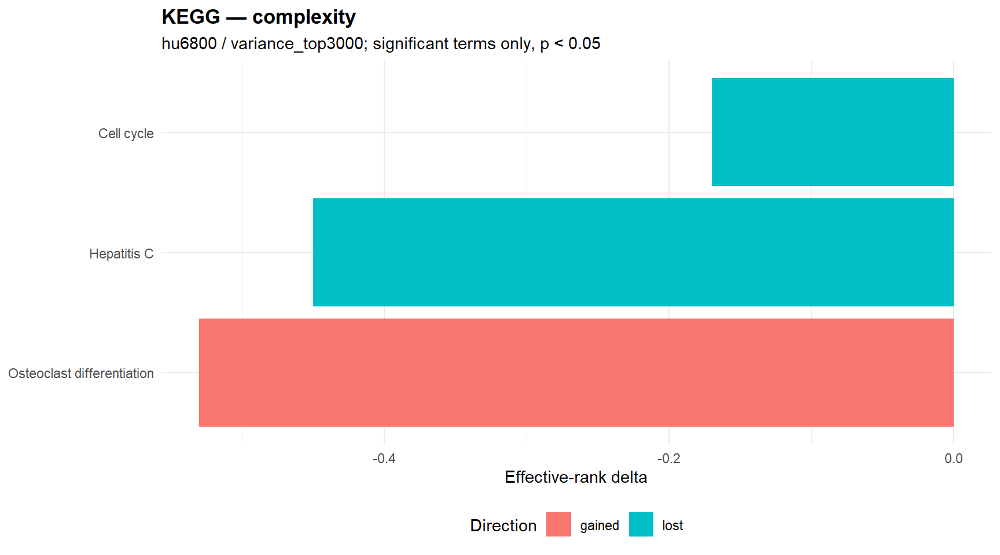
20.0.12.3.80 Entropy signal plot
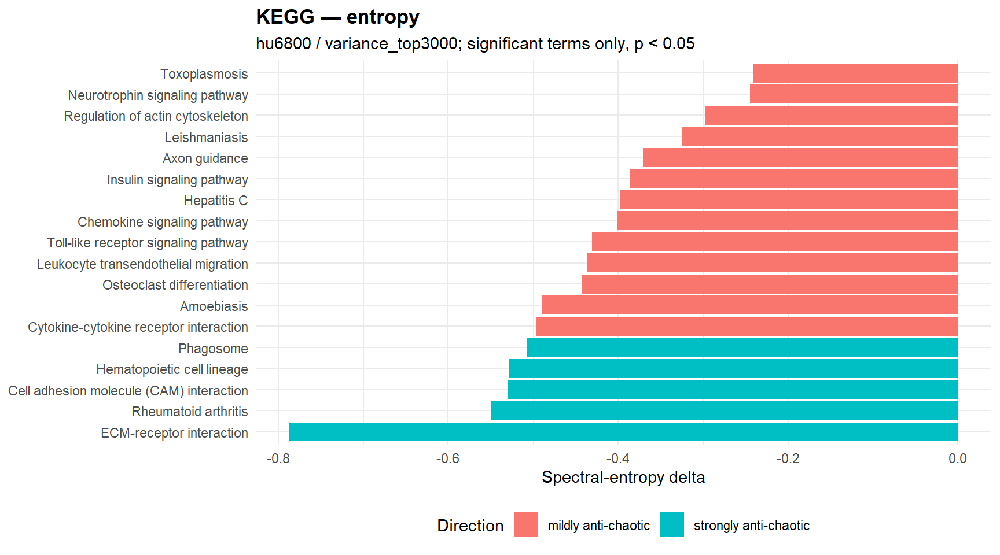
20.0.12.3.81 Significant complexity terms
| gene_set | semantic_block | n_shared_probes | effrank Δ | kappa Δ | direction | p_perm | status |
|---|---|---|---|---|---|---|---|
| Hepatitis C | NA | 47 | -0.450 | -51.580 | lost | 0.010 | ok |
| Cell cycle | NA | 67 | -0.170 | -63.550 | lost | 0.010 | ok |
| Osteoclast differentiation | NA | 55 | -0.530 | 39.240 | gained | 0.040 | ok |
20.0.12.3.82 Significant entropy terms
| gene_set | semantic_block | n_shared_probes | spectral Δ | shannon Δ | spectral_direction | p_perm_spectral | p_perm_shannon | status |
|---|---|---|---|---|---|---|---|---|
| Cell adhesion molecule (CAM) interaction | NA | 52 | -0.530 | 0.001 | strongly anti-chaotic | 0.020 | NA | ok |
| Hematopoietic cell lineage | NA | 50 | -0.529 | 0.001 | strongly anti-chaotic | 0.020 | NA | ok |
| Phagosome | NA | 74 | -0.507 | -0.001 | strongly anti-chaotic | 0.020 | NA | ok |
| Osteoclast differentiation | NA | 55 | -0.443 | 0.003 | mildly anti-chaotic | 0.020 | NA | ok |
| Axon guidance | NA | 34 | -0.371 | 0.002 | mildly anti-chaotic | 0.020 | NA | ok |
| Neurotrophin signaling pathway | NA | 50 | -0.245 | 0.001 | mildly anti-chaotic | 0.020 | NA | ok |
| Rheumatoid arthritis | NA | 44 | -0.549 | 0.007 | strongly anti-chaotic | 0.030 | NA | ok |
| Cytokine-cytokine receptor interaction | NA | 67 | -0.496 | 0.006 | mildly anti-chaotic | 0.030 | NA | ok |
| Amoebiasis | NA | 51 | -0.490 | 0.003 | mildly anti-chaotic | 0.030 | NA | ok |
| Leukocyte transendothelial migration | NA | 53 | -0.436 | -0.002 | mildly anti-chaotic | 0.030 | NA | ok |
| Hepatitis C | NA | 47 | -0.397 | 0.007 | mildly anti-chaotic | 0.030 | NA | ok |
| Regulation of actin cytoskeleton | NA | 79 | -0.297 | 0.002 | mildly anti-chaotic | 0.030 | NA | ok |
| ECM-receptor interaction | NA | 24 | -0.787 | 0.004 | strongly anti-chaotic | 0.040 | NA | ok |
| Toll-like receptor signaling pathway | NA | 44 | -0.431 | 0.009 | mildly anti-chaotic | 0.040 | NA | ok |
| Chemokine signaling pathway | NA | 78 | -0.401 | 0.007 | mildly anti-chaotic | 0.040 | NA | ok |
| Insulin signaling pathway | NA | 43 | -0.386 | 0.004 | mildly anti-chaotic | 0.040 | NA | ok |
| Leishmaniasis | NA | 55 | -0.325 | 0.005 | mildly anti-chaotic | 0.040 | NA | ok |
| Toxoplasmosis | NA | 62 | -0.241 | 0.005 | mildly anti-chaotic | 0.040 | NA | ok |
20.0.12.3.83 Terms significant in both engines
| gene_set | semantic_block | n_shared_probes | complexity_effrank Δ | complexity_direction | complexity_p_perm | entropy_spectral Δ | entropy_spectral_direction | entropy_p_perm_spectral | joint_rank_score |
|---|---|---|---|---|---|---|---|---|---|
| Hepatitis C | NA | 47 | -0.450 | lost | 0.010 | -0.397 | mildly anti-chaotic | 0.030 | 3.523 |
| Osteoclast differentiation | NA | 55 | -0.530 | gained | 0.040 | -0.443 | mildly anti-chaotic | 0.020 | 3.097 |
Context summary
| engine | n_rows | n_gene_sets | n_significant_complexity | n_significant_entropy_spectral | median_shared_probes |
|---|---|---|---|---|---|
| complexity | 13 | 13 | 0 | 0 | 89.000 |
| entropy | 13 | 13 | 0 | 9 | 89.000 |
20.0.12.3.84 Complexity signal plot
No significant complexity terms available for plotting.
20.0.12.3.85 Entropy signal plot
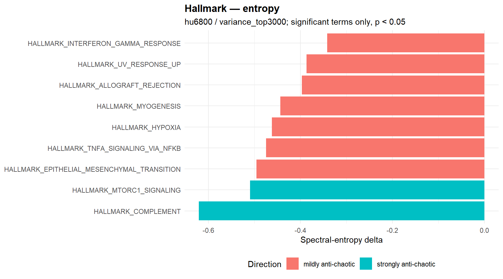
20.0.12.3.86 Significant complexity terms
No significant warehouse rows available for this section.
20.0.12.3.87 Significant entropy terms
| gene_set | semantic_block | n_shared_probes | spectral Δ | shannon Δ | spectral_direction | p_perm_spectral | p_perm_shannon | status |
|---|---|---|---|---|---|---|---|---|
| HALLMARK_MTORC1_SIGNALING | NA | 112 | -0.510 | 0.002 | strongly anti-chaotic | 0.020 | NA | ok |
| HALLMARK_TNFA_SIGNALING_VIA_NFKB | NA | 100 | -0.475 | 0.008 | mildly anti-chaotic | 0.020 | NA | ok |
| HALLMARK_HYPOXIA | NA | 81 | -0.462 | 0.000 | mildly anti-chaotic | 0.020 | NA | ok |
| HALLMARK_MYOGENESIS | NA | 76 | -0.444 | 0.004 | mildly anti-chaotic | 0.020 | NA | ok |
| HALLMARK_UV_RESPONSE_UP | NA | 83 | -0.387 | 0.005 | mildly anti-chaotic | 0.020 | NA | ok |
| HALLMARK_EPITHELIAL_MESENCHYMAL_TRANSITION | NA | 75 | -0.496 | 0.004 | mildly anti-chaotic | 0.030 | NA | ok |
| HALLMARK_ALLOGRAFT_REJECTION | NA | 123 | -0.397 | 0.001 | mildly anti-chaotic | 0.030 | NA | ok |
| HALLMARK_COMPLEMENT | NA | 89 | -0.621 | 0.006 | strongly anti-chaotic | 0.040 | NA | ok |
| HALLMARK_INTERFERON_GAMMA_RESPONSE | NA | 93 | -0.342 | 0.005 | mildly anti-chaotic | 0.040 | NA | ok |
20.0.12.3.88 Terms significant in both engines
No significant warehouse rows available for this section.
20.0.12.4 Skipped / inadmissible gene sets
These counts summarize chip-level gene-set admissibility failures. They are not interpreted as repeated comparison-level biological results.
| comparison | chip | filter_regime | gene_set_mode | engine | reason | n_skipped |
|---|---|---|---|---|---|---|
| PB/T-ALL | hu35ksuba | limma | GO_BP | complexity | usable gene-set probes below biological admissibility threshold: 0 < 5 | 302 |
| PB/T-ALL | hu35ksuba | limma | GO_BP | complexity | usable gene-set probes below biological admissibility threshold: 1 < 5 | 466 |
| PB/T-ALL | hu35ksuba | limma | GO_BP | complexity | usable gene-set probes below biological admissibility threshold: 2 < 5 | 405 |
| PB/T-ALL | hu35ksuba | limma | GO_BP | complexity | usable gene-set probes below biological admissibility threshold: 3 < 5 | 294 |
| PB/T-ALL | hu35ksuba | limma | GO_BP | complexity | usable gene-set probes below biological admissibility threshold: 4 < 5 | 213 |
| PB/T-ALL | hu35ksuba | limma | GO_BP | entropy | usable gene-set probes below biological admissibility threshold: 0 < 5 | 302 |
| PB/T-ALL | hu35ksuba | limma | GO_BP | entropy | usable gene-set probes below biological admissibility threshold: 1 < 5 | 466 |
| PB/T-ALL | hu35ksuba | limma | GO_BP | entropy | usable gene-set probes below biological admissibility threshold: 2 < 5 | 405 |
| PB/T-ALL | hu35ksuba | limma | GO_BP | entropy | usable gene-set probes below biological admissibility threshold: 3 < 5 | 294 |
| PB/T-ALL | hu35ksuba | limma | GO_BP | entropy | usable gene-set probes below biological admissibility threshold: 4 < 5 | 213 |
| PB/T-ALL | hu35ksuba | limma | GO_MF | complexity | usable gene-set probes below biological admissibility threshold: 0 < 5 | 92 |
| PB/T-ALL | hu35ksuba | limma | GO_MF | complexity | usable gene-set probes below biological admissibility threshold: 1 < 5 | 175 |
| PB/T-ALL | hu35ksuba | limma | GO_MF | complexity | usable gene-set probes below biological admissibility threshold: 2 < 5 | 141 |
| PB/T-ALL | hu35ksuba | limma | GO_MF | complexity | usable gene-set probes below biological admissibility threshold: 3 < 5 | 78 |
| PB/T-ALL | hu35ksuba | limma | GO_MF | complexity | usable gene-set probes below biological admissibility threshold: 4 < 5 | 75 |
| PB/T-ALL | hu35ksuba | limma | GO_MF | entropy | usable gene-set probes below biological admissibility threshold: 0 < 5 | 92 |
| PB/T-ALL | hu35ksuba | limma | GO_MF | entropy | usable gene-set probes below biological admissibility threshold: 1 < 5 | 175 |
| PB/T-ALL | hu35ksuba | limma | GO_MF | entropy | usable gene-set probes below biological admissibility threshold: 2 < 5 | 141 |
| PB/T-ALL | hu35ksuba | limma | GO_MF | entropy | usable gene-set probes below biological admissibility threshold: 3 < 5 | 78 |
| PB/T-ALL | hu35ksuba | limma | GO_MF | entropy | usable gene-set probes below biological admissibility threshold: 4 < 5 | 75 |
| PB/T-ALL | hu35ksuba | limma | KEGG | complexity | usable gene-set probes below biological admissibility threshold: 2 < 10 | 1 |
| PB/T-ALL | hu35ksuba | limma | KEGG | complexity | usable gene-set probes below biological admissibility threshold: 5 < 10 | 1 |
| PB/T-ALL | hu35ksuba | limma | KEGG | complexity | usable gene-set probes below biological admissibility threshold: 6 < 10 | 4 |
| PB/T-ALL | hu35ksuba | limma | KEGG | complexity | usable gene-set probes below biological admissibility threshold: 7 < 10 | 5 |
| PB/T-ALL | hu35ksuba | limma | KEGG | complexity | usable gene-set probes below biological admissibility threshold: 8 < 10 | 7 |
| PB/T-ALL | hu35ksuba | limma | KEGG | complexity | usable gene-set probes below biological admissibility threshold: 9 < 10 | 6 |
| PB/T-ALL | hu35ksuba | limma | KEGG | entropy | usable gene-set probes below biological admissibility threshold: 2 < 10 | 1 |
| PB/T-ALL | hu35ksuba | limma | KEGG | entropy | usable gene-set probes below biological admissibility threshold: 5 < 10 | 1 |
| PB/T-ALL | hu35ksuba | limma | KEGG | entropy | usable gene-set probes below biological admissibility threshold: 6 < 10 | 4 |
| PB/T-ALL | hu35ksuba | limma | KEGG | entropy | usable gene-set probes below biological admissibility threshold: 7 < 10 | 5 |
| PB/T-ALL | hu35ksuba | limma | KEGG | entropy | usable gene-set probes below biological admissibility threshold: 8 < 10 | 7 |
| PB/T-ALL | hu35ksuba | limma | KEGG | entropy | usable gene-set probes below biological admissibility threshold: 9 < 10 | 6 |
| PB/T-ALL | hu35ksuba | variance_top3000 | GO_BP | complexity | usable gene-set probes below biological admissibility threshold: 0 < 5 | 64 |
| PB/T-ALL | hu35ksuba | variance_top3000 | GO_BP | complexity | usable gene-set probes below biological admissibility threshold: 1 < 5 | 164 |
| PB/T-ALL | hu35ksuba | variance_top3000 | GO_BP | complexity | usable gene-set probes below biological admissibility threshold: 2 < 5 | 335 |
| PB/T-ALL | hu35ksuba | variance_top3000 | GO_BP | complexity | usable gene-set probes below biological admissibility threshold: 3 < 5 | 318 |
| PB/T-ALL | hu35ksuba | variance_top3000 | GO_BP | complexity | usable gene-set probes below biological admissibility threshold: 4 < 5 | 315 |
| PB/T-ALL | hu35ksuba | variance_top3000 | GO_BP | entropy | usable gene-set probes below biological admissibility threshold: 0 < 5 | 64 |
| PB/T-ALL | hu35ksuba | variance_top3000 | GO_BP | entropy | usable gene-set probes below biological admissibility threshold: 1 < 5 | 164 |
| PB/T-ALL | hu35ksuba | variance_top3000 | GO_BP | entropy | usable gene-set probes below biological admissibility threshold: 2 < 5 | 335 |
| PB/T-ALL | hu35ksuba | variance_top3000 | GO_BP | entropy | usable gene-set probes below biological admissibility threshold: 3 < 5 | 318 |
| PB/T-ALL | hu35ksuba | variance_top3000 | GO_BP | entropy | usable gene-set probes below biological admissibility threshold: 4 < 5 | 315 |
| PB/T-ALL | hu35ksuba | variance_top3000 | GO_MF | complexity | usable gene-set probes below biological admissibility threshold: 0 < 5 | 29 |
| PB/T-ALL | hu35ksuba | variance_top3000 | GO_MF | complexity | usable gene-set probes below biological admissibility threshold: 1 < 5 | 69 |
| PB/T-ALL | hu35ksuba | variance_top3000 | GO_MF | complexity | usable gene-set probes below biological admissibility threshold: 2 < 5 | 84 |
| PB/T-ALL | hu35ksuba | variance_top3000 | GO_MF | complexity | usable gene-set probes below biological admissibility threshold: 3 < 5 | 112 |
| PB/T-ALL | hu35ksuba | variance_top3000 | GO_MF | complexity | usable gene-set probes below biological admissibility threshold: 4 < 5 | 86 |
| PB/T-ALL | hu35ksuba | variance_top3000 | GO_MF | entropy | usable gene-set probes below biological admissibility threshold: 0 < 5 | 29 |
| PB/T-ALL | hu35ksuba | variance_top3000 | GO_MF | entropy | usable gene-set probes below biological admissibility threshold: 1 < 5 | 69 |
| PB/T-ALL | hu35ksuba | variance_top3000 | GO_MF | entropy | usable gene-set probes below biological admissibility threshold: 2 < 5 | 84 |
| PB/T-ALL | hu35ksuba | variance_top3000 | GO_MF | entropy | usable gene-set probes below biological admissibility threshold: 3 < 5 | 112 |
| PB/T-ALL | hu35ksuba | variance_top3000 | GO_MF | entropy | usable gene-set probes below biological admissibility threshold: 4 < 5 | 86 |
| PB/T-ALL | hu35ksuba | variance_top3000 | KEGG | complexity | usable gene-set probes below biological admissibility threshold: 9 < 10 | 1 |
| PB/T-ALL | hu35ksuba | variance_top3000 | KEGG | entropy | usable gene-set probes below biological admissibility threshold: 9 < 10 | 1 |
| PB/T-ALL | hu6800 | limma | GO_BP | complexity | usable gene-set probes below biological admissibility threshold: 0 < 5 | 462 |
| PB/T-ALL | hu6800 | limma | GO_BP | complexity | usable gene-set probes below biological admissibility threshold: 1 < 5 | 553 |
| PB/T-ALL | hu6800 | limma | GO_BP | complexity | usable gene-set probes below biological admissibility threshold: 2 < 5 | 449 |
| PB/T-ALL | hu6800 | limma | GO_BP | complexity | usable gene-set probes below biological admissibility threshold: 3 < 5 | 295 |
| PB/T-ALL | hu6800 | limma | GO_BP | complexity | usable gene-set probes below biological admissibility threshold: 4 < 5 | 190 |
| PB/T-ALL | hu6800 | limma | GO_BP | entropy | usable gene-set probes below biological admissibility threshold: 0 < 5 | 462 |
| PB/T-ALL | hu6800 | limma | GO_BP | entropy | usable gene-set probes below biological admissibility threshold: 1 < 5 | 553 |
| PB/T-ALL | hu6800 | limma | GO_BP | entropy | usable gene-set probes below biological admissibility threshold: 2 < 5 | 449 |
| PB/T-ALL | hu6800 | limma | GO_BP | entropy | usable gene-set probes below biological admissibility threshold: 3 < 5 | 295 |
| PB/T-ALL | hu6800 | limma | GO_BP | entropy | usable gene-set probes below biological admissibility threshold: 4 < 5 | 190 |
| PB/T-ALL | hu6800 | limma | GO_MF | complexity | usable gene-set probes below biological admissibility threshold: 0 < 5 | 165 |
| PB/T-ALL | hu6800 | limma | GO_MF | complexity | usable gene-set probes below biological admissibility threshold: 1 < 5 | 193 |
| PB/T-ALL | hu6800 | limma | GO_MF | complexity | usable gene-set probes below biological admissibility threshold: 2 < 5 | 153 |
| PB/T-ALL | hu6800 | limma | GO_MF | complexity | usable gene-set probes below biological admissibility threshold: 3 < 5 | 100 |
| PB/T-ALL | hu6800 | limma | GO_MF | complexity | usable gene-set probes below biological admissibility threshold: 4 < 5 | 51 |
| PB/T-ALL | hu6800 | limma | GO_MF | entropy | usable gene-set probes below biological admissibility threshold: 0 < 5 | 165 |
| PB/T-ALL | hu6800 | limma | GO_MF | entropy | usable gene-set probes below biological admissibility threshold: 1 < 5 | 193 |
| PB/T-ALL | hu6800 | limma | GO_MF | entropy | usable gene-set probes below biological admissibility threshold: 2 < 5 | 153 |
| PB/T-ALL | hu6800 | limma | GO_MF | entropy | usable gene-set probes below biological admissibility threshold: 3 < 5 | 100 |
| PB/T-ALL | hu6800 | limma | GO_MF | entropy | usable gene-set probes below biological admissibility threshold: 4 < 5 | 51 |
| PB/T-ALL | hu6800 | limma | KEGG | complexity | usable gene-set probes below biological admissibility threshold: 6 < 10 | 1 |
| PB/T-ALL | hu6800 | limma | KEGG | complexity | usable gene-set probes below biological admissibility threshold: 7 < 10 | 2 |
| PB/T-ALL | hu6800 | limma | KEGG | complexity | usable gene-set probes below biological admissibility threshold: 9 < 10 | 2 |
| PB/T-ALL | hu6800 | limma | KEGG | entropy | usable gene-set probes below biological admissibility threshold: 6 < 10 | 1 |
| PB/T-ALL | hu6800 | limma | KEGG | entropy | usable gene-set probes below biological admissibility threshold: 7 < 10 | 2 |
| PB/T-ALL | hu6800 | limma | KEGG | entropy | usable gene-set probes below biological admissibility threshold: 9 < 10 | 2 |
| PB/T-ALL | hu6800 | variance_top3000 | GO_BP | complexity | usable gene-set probes below biological admissibility threshold: 0 < 5 | 30 |
| PB/T-ALL | hu6800 | variance_top3000 | GO_BP | complexity | usable gene-set probes below biological admissibility threshold: 1 < 5 | 126 |
| PB/T-ALL | hu6800 | variance_top3000 | GO_BP | complexity | usable gene-set probes below biological admissibility threshold: 2 < 5 | 225 |
| PB/T-ALL | hu6800 | variance_top3000 | GO_BP | complexity | usable gene-set probes below biological admissibility threshold: 3 < 5 | 312 |
| PB/T-ALL | hu6800 | variance_top3000 | GO_BP | complexity | usable gene-set probes below biological admissibility threshold: 4 < 5 | 282 |
| PB/T-ALL | hu6800 | variance_top3000 | GO_BP | entropy | usable gene-set probes below biological admissibility threshold: 0 < 5 | 30 |
| PB/T-ALL | hu6800 | variance_top3000 | GO_BP | entropy | usable gene-set probes below biological admissibility threshold: 1 < 5 | 126 |
| PB/T-ALL | hu6800 | variance_top3000 | GO_BP | entropy | usable gene-set probes below biological admissibility threshold: 2 < 5 | 225 |
| PB/T-ALL | hu6800 | variance_top3000 | GO_BP | entropy | usable gene-set probes below biological admissibility threshold: 3 < 5 | 312 |
| PB/T-ALL | hu6800 | variance_top3000 | GO_BP | entropy | usable gene-set probes below biological admissibility threshold: 4 < 5 | 282 |
| PB/T-ALL | hu6800 | variance_top3000 | GO_MF | complexity | usable gene-set probes below biological admissibility threshold: 0 < 5 | 15 |
| PB/T-ALL | hu6800 | variance_top3000 | GO_MF | complexity | usable gene-set probes below biological admissibility threshold: 1 < 5 | 54 |
| PB/T-ALL | hu6800 | variance_top3000 | GO_MF | complexity | usable gene-set probes below biological admissibility threshold: 2 < 5 | 113 |
| PB/T-ALL | hu6800 | variance_top3000 | GO_MF | complexity | usable gene-set probes below biological admissibility threshold: 3 < 5 | 94 |
| PB/T-ALL | hu6800 | variance_top3000 | GO_MF | complexity | usable gene-set probes below biological admissibility threshold: 4 < 5 | 91 |
| PB/T-ALL | hu6800 | variance_top3000 | GO_MF | entropy | usable gene-set probes below biological admissibility threshold: 0 < 5 | 15 |
| PB/T-ALL | hu6800 | variance_top3000 | GO_MF | entropy | usable gene-set probes below biological admissibility threshold: 1 < 5 | 54 |
| PB/T-ALL | hu6800 | variance_top3000 | GO_MF | entropy | usable gene-set probes below biological admissibility threshold: 2 < 5 | 113 |
| PB/T-ALL | hu6800 | variance_top3000 | GO_MF | entropy | usable gene-set probes below biological admissibility threshold: 3 < 5 | 94 |
| PB/T-ALL | hu6800 | variance_top3000 | GO_MF | entropy | usable gene-set probes below biological admissibility threshold: 4 < 5 | 91 |
20.0.12.5 Interpretation note
These panels are intended to support exploratory biological reading of structurally characterized tumor states. Stronger interpretive priority should be given to signals that recur within a chip across filtering regimes, and then to patterns that recur across chips, engines, and semantic clusters. Results should not be interpreted as pooled chip-level or pooled filter-level evidence unless a later concordance module explicitly evaluates that recurrence.